library(readr) # Gapminder 파일 읽기 (4절부터)
library(dplyr) # 그림에 넣을 표 만들기 (12장)
library(tidyr) # 넓은 표 만들기 (4절)
library(ggplot2) # 4절부터의 그림
library(patchwork) # 여러 그림 붙이기 (8절)데이터 시각화
통계 패키지 활용: 개편 13장 초안
중요
학습 목표
- 그림을 그리기 전에 자료의 어느 열을 그림의 어느 속성(가로 위치, 세로 위치, 색, 크기, 모양)에 대응시킬지 표로 명세하고, 그 명세를
ggplot()코드로 옮길 수 있다. - 그림이 자료의 값을 그대로 그렸는지, 개수·밀도·사분위수·평활선 같은 값을 계산해 그렸는지 구분하고,
layer_data()로 그 값을 꺼내 직접 계산한 값과 대조할 수 있다. - 막대를 쌓을지 나란히 둘지 겹칠지, 축 범위를 척도 한계(
ylim())로 정할지 좌표 확대(coord_cartesian())로 정할지에 따라 그림과 통계량이 어떻게 달라지는지 실행하기 전에 예측할 수 있다. - 그림에 들어간 행 수, 빠진 행의 경고, 크기와 색이 나타내는 값, 제목·축 이름·범례의 글자와 단위를 코드와 대조하는 확인 절차를 적용할 수 있다.
- 기본 그래픽에서
par()로 바꾼 설정이 다음 그림에 남는 이유를 설명하고, 설정을 되돌리는 코드를 쓸 수 있다. - AI 가 생성한 시각화 코드를 그려진 점의 수, 대응표, 크기 비례, 축 표기로 검증하고, 같은 자료로 단순 평균과 인구 가중 평균이 다른 선을 그린다는 점을 그림에서 해석할 수 있다.
12장에서는 표에서 행을 고르고, 집단별로 요약하고, 다른 표와 합쳤다. 이 장에서는 그 결과를 그림으로 옮긴다. 그림 코드는 AI 에게 요청하면 바로 받을 수 있다. 그러나 막대가 쌓였는지 겹쳤는지, 경고와 함께 빠진 행이 있는지, 점의 크기가 무엇에 비례하는지, 제목에 적힌 숫자가 코드와 맞는지는 그림을 받은 사람이 확인해야 한다. 그림 코드는 이런 점이 틀려도 오류 없이 실행되고, 틀린 그림에도 축과 눈금, 범례가 빠짐없이 그려져 겉모양으로는 맞는 그림과 구별되지 않는다.
이 장은 그림 함수를 나열하지 않고, 그림이 무엇을 계산해 그렸는지 확인하는 데 집중한다. 1~3절은 R 의 기본 그래픽, 4~8절은 ggplot2 패키지를 다루고, 9절에서 두 체계에서 쓴 확인 방법을 절차로 정리한다. 10절에서는 AI 가 생성한 그림 코드를 그 절차로 검증한다. 함수의 인수 전체는 ggplot2 함수 목록 과 부록 B(예정)에서 찾는다.
노트
예제 자료: 함수는 R 과 패키지에 들어 있는 자료로 익히고, 검증과 AI 절은 12장의 Gapminder 파일을 그대로 쓴다.
| 자료 | 내용 | 쓰는 절 |
|---|---|---|
anscombe, mtcars, cars, BOD, airquality, warpbreaks, iris, ToothGrowth |
R 에 들어 있는 자료 | 1~9 |
Titanic, UCBAdmissions |
R 에 들어 있는 교차표 | 2 |
mpg, diamonds, economics_long |
ggplot2 패키지에 들어 있는 자료 | 4~8 |
dataset/ch12/ 의 Gapminder 네 파일(인구, GDP, 기대수명, 지역) |
Gapminder 공개 자료에서 2000~2020년을 뽑은 것. 12장과 같은 파일, 같은 정의 | 4, 5, 7, 9, 10 |
이 장의 새 연습 파일은 없다. Gapminder 파일을 다시 만드는 스크립트는 dataset/ch12/make-gapminder-data.R 이다.
주의
ggplot2 4.0.0 이상이 필요하다. 이 장에서 읽는 경고 문구, 그림의 글자를 꺼내는 get_labs(), 테마의 ink·paper 인수가 ggplot2 4.0.0(2025년)부터의 동작이다. packageVersion("ggplot2") 로 버전을 확인하고, 낮으면 install.packages("ggplot2") 로 갱신한다. 8절의 patchwork 는 1.1.0 이상, scales 는 1.2.0 이상, 그림에 넣을 표를 만드는 dplyr 는 12장과 같이 1.2.0 이상이 필요하다. 이 강의노트는 ggplot2 4.0.3, patchwork 1.3.2, scales 1.4.0, dplyr 1.2.1 로 실행했다.
이 장에서 쓰는 패키지를 불러온다. 1~3절의 기본 그래픽은 R 에 들어 있어 따로 불러오지 않는다.
1 그림으로 자료 보기
자료를 평균, 표준편차, 상관계수 같은 몇 개의 수로 줄이면 비교하기 쉬워진다. 줄이는 과정에서 무엇이 빠지는지는 그림을 그려야 보인다. 이 절에서는 요약 통계량이 같은 네 자료를 그려 보고, R 에서 그림을 그리는 두 체계를 구분한다.
1.1 요약 통계량이 같은 네 자료
anscombe 는 통계학자 F. J. Anscombe 가 1973년 논문에서 만든 자료다. 11행 8열이고, x 와 y 의 쌍 네 개(x1 과 y1, …, x4 와 y4)가 들어 있다. 쌍마다 평균, 표준편차, 상관계수, 회귀직선의 절편과 기울기를 계산해 보자.
# 네 쌍마다 요약 통계량과 회귀계수를 계산한다
anscombe_stats <- sapply(1:4, \(i) {
x <- anscombe[[paste0("x", i)]]
y <- anscombe[[paste0("y", i)]]
b <- coef(lm(y ~ x))
c(x평균 = mean(x), y평균 = mean(y), x표준편차 = sd(x), y표준편차 = sd(y),
상관계수 = cor(x, y), 절편 = b[[1]], 기울기 = b[[2]])
})
colnames(anscombe_stats) <- paste0("쌍", 1:4)
round(anscombe_stats, 3) 쌍1 쌍2 쌍3 쌍4
x평균 9.000 9.000 9.000 9.000
y평균 7.501 7.501 7.500 7.501
x표준편차 3.317 3.317 3.317 3.317
y표준편차 2.032 2.032 2.030 2.031
상관계수 0.816 0.816 0.816 0.817
절편 3.000 3.001 3.002 3.002
기울기 0.500 0.500 0.500 0.500소수 둘째 자리에서 반올림하면 일곱 값이 네 쌍 모두 같다. x 평균 9.00, y 평균 7.50, x 표준편차 3.32, y 표준편차 2.03, 상관계수 0.82, 회귀직선 y = 3.00 + 0.50x 다. 상관계수는 셋째 자리에서 0.816 과 0.817 로 갈린다.
힌트
예측해 보자: 네 쌍의 요약 통계량과 회귀직선이 소수 둘째 자리까지 같다. 네 쌍의 산점도도 서로 비슷할까? 실행하기 전에 ‘비슷하다’ 또는 ’다르다’를 적고, 다르다면 어떻게 다를지 적어 보자.
op <- par(mfrow = c(2, 2)) # 그림 한 장을 2행 2열로 나눈다
ff <- y ~ x
for (i in 1:4) {
# 수식의 왼쪽(y)과 오른쪽(x)을 쌍마다 바꿔 끼운다: y1 ~ x1, y2 ~ x2, ...
ff[[2]] <- as.name(paste0("y", i))
ff[[3]] <- as.name(paste0("x", i))
modi <- lm(ff, data = anscombe)
xl <- substitute(expression(x[i]), list(i = i))
yl <- substitute(expression(y[i]), list(i = i))
plot(ff, data = anscombe, col = "red", pch = 21, cex = 2.4, bg = "orange",
xlim = c(3, 19), ylim = c(3, 13),
xlab = eval(xl), ylab = eval(yl))
abline(modi, col = "blue")
}
par(op) # 나누기 전 설정으로 되돌린다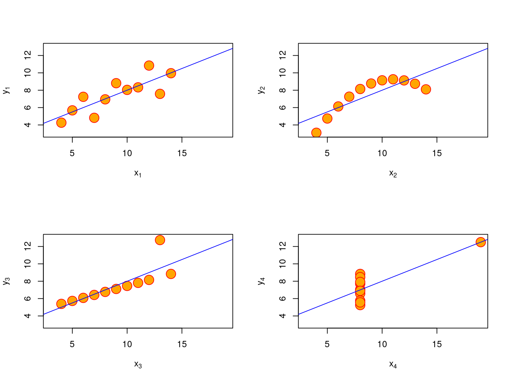
네 그림은 서로 다르다.
- 쌍 1: 점이 직선 주위에 흩어져 있다. 회귀직선이 자료를 요약하는 경우다.
- 쌍 2: 점이 곡선 위에 있다. x 와 y 의 관계가 직선이 아니다.
- 쌍 3: 한 점을 빼면 나머지 10개가 거의 한 직선 위에 있다. 그 한 점이 기울기를 끌어올렸다.
- 쌍 4: x 가 한 값에 몰려 있고 한 점만 떨어져 있다. 회귀직선의 기울기는 떨어진 한 점이 정한다.
쌍 3 과 쌍 4 에 대한 설명을 계산으로 확인한다.
# 쌍 3: y 가 가장 큰 점을 빼고 다시 적합한다
k <- which.max(anscombe$y3)
anscombe[k, c("x3", "y3")] x3 y3
3 13 12.74coef(lm(y3 ~ x3, data = anscombe[-k, ]))(Intercept) x3
4.0056494 0.3453896 cor(anscombe$x3[-k], anscombe$y3[-k])[1] 0.9999966# 쌍 4: x 의 값별 개수
table(anscombe$x4)
8 19
10 1 쌍 3 에서 점 (13, 12.74) 하나를 빼면 기울기가 0.500 에서 0.345 로 줄고, 상관계수는 0.9999966 으로 1 에 가깝다. 쌍 4 는 x 가 8 인 점이 10개, 19 인 점이 1개다. x 가 8 인 점만으로는 기울기를 정할 수 없으므로 x = 19 인 점 하나가 회귀직선을 정한다.
상관계수와 회귀직선은 x 와 y 의 관계가 직선이라는 가정 아래 계산한 값이다. 그 가정이 맞는지는 이 수치들만으로 알 수 없고 그림을 그려야 보인다.
그림 코드의 op <- par(mfrow = c(2, 2)) 는 그림 한 장을 2행 2열로 나누면서 바꾸기 전 설정을 op 에 담아 둔다. 마지막 줄 par(op) 가 설정을 되돌린다. 되돌리는 이유는 섹션 3.3 에서 본다. 이 코드의 이전 판에는 두 축 이름 중 하나가 의도와 다르게 찍히는 오류가 있었다. 장 끝의 연습문제에서 찾아본다.
1.2 그림을 그리는 두 체계와 그래픽 장치
R 에서 그림을 그리는 체계는 두 가지다. R 을 설치하면 함께 들어오는 기본 그래픽(base graphics, graphics 패키지)과, 이 장의 4절부터 쓰는 ggplot2 패키지다. 두 체계는 그림을 만드는 방식이 다르다. 먼저 기본 그래픽의 plot() 이 무엇을 돌려주는지 보자. cars 는 자동차 50대의 속도(마일/시)와 제동 거리(피트)를 잰 자료다.
힌트
예측해 보자: p <- plot(cars) 를 실행하면 산점도가 그려진다. p 에는 무엇이 담길까?
p <- plot(cars, xlab = "속도(마일/시)", ylab = "제동 거리(피트)")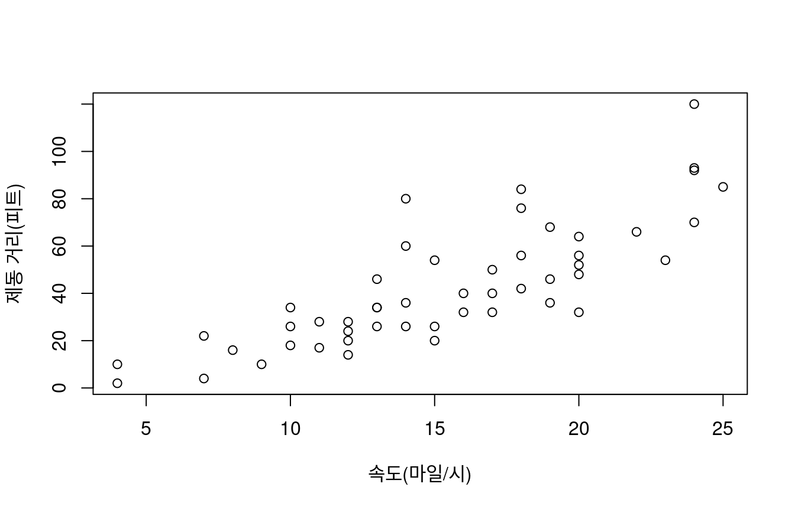
pNULLp 는 NULL 이다. plot() 은 그래픽 장치에 그림을 그리는 일을 하고, 값으로는 아무것도 돌려주지 않는다. 함수가 값을 돌려주는 것 말고 바깥에 남기는 결과를 부수효과(side effect)라 한다(5장). 그려진 그림은 장치에만 있으므로, 그림을 다시 보거나 고치려면 코드를 다시 실행해야 한다.
ggplot2 는 그림을 객체로 만든다. 객체를 만드는 것만으로는 그려지지 않고, 객체를 출력할 때 장치에 그린다. 문법은 4절에서 다룬다.
g <- ggplot(cars, aes(x = speed, y = dist)) + geom_point()
class(g)[1] "ggplot2::ggplot" "ggplot" "ggplot2::gg"
[4] "S7_object" "gg" g 는 ggplot 클래스의 객체다. ggplot2 4.0 부터 S7 이라는 객체 체계로 만들어져 클래스 이름이 여럿 붙는다. g 를 콘솔에 입력하면 그때 그림이 그려진다. 두 체계의 차이를 표로 정리한다.
| 기본 그래픽 | ggplot2 | |
|---|---|---|
| 그리는 방식 | 함수를 부를 때마다 장치에 바로 그리고, 그 위에 점·선·글자를 차례로 덧그린다 | 자료, 매핑, 레이어를 + 로 더해 그림 객체를 만든다 |
| 결과 | 장치에 남는다. 함수의 반환값은 그림이 아니다(plot() 은 NULL) |
객체로 남는다. 객체를 출력할 때 장치에 그린다 |
| 설정 | par() 로 장치의 설정을 바꾼다. 바꾼 설정은 다음 그림에 남는다(섹션 3.3) |
객체 안의 테마(theme())에 담긴다(8절) |
| 계산한 값 확인 | hist(x, plot = FALSE), boxplot.stats() 같은 반환값 |
layer_data() (5절) |
그림이 그려지는 곳을 그래픽 장치(graphics device)라 한다. 두 가지로 나눈다.
- 화면 장치: Positron 과 RStudio 의 Plots 창. 열린 장치가 없을 때 그림 함수를 부르면 R 이 장치를 연다.
- 파일 장치:
png(),pdf()로 파일을 열고 그린 뒤dev.off()로 닫아야 파일이 완성된다. ggplot2 그림은ggsave()로 저장한다(8절).
장치는 여러 개를 열 수 있고, 그림은 그중 현재 장치(dev.cur() 로 확인)에 그려진다. 이 강의노트는 청크마다 새 파일 장치를 열어 그림을 만든다. 그래서 한 청크에서 바꾼 장치 설정이 다음 청크로 넘어가지 않는다. 콘솔에서는 장치 하나에 계속 그리므로 넘어간다. 이 차이는 섹션 3.3 에서 다시 본다.
2 기본 그래픽: 고수준 함수
고수준 함수(high-level plotting function)는 부를 때마다 새 그림을 시작하고 축, 눈금, 축 이름까지 한 번에 그린다. plot(), hist(), barplot(), boxplot(), mosaicplot() 이 여기에 속한다. 이미 그린 그림 위에 점, 선, 글자를 더하는 저수준 함수(low-level plotting function)는 섹션 3 에서 다룬다.
2.1 plot() 은 받은 객체에 따라 다르게 그린다
plot() 에는 벡터뿐 아니라 데이터 프레임, 회귀모형, 교차표도 넣을 수 있다. 세 객체를 준비하고 클래스를 확인하자.
mod <- lm(mpg ~ disp, data = mtcars) # 연비를 배기량으로 설명하는 회귀모형
c(class(mtcars[, 1:4]), class(mod), class(Titanic))[1] "data.frame" "lm" "table"
힌트
예측해 보자: 클래스가 "data.frame", "lm", "table" 인 세 객체를 각각 plot() 에 넣으면 어떤 그림이 나올까? 세 그림이 모두 산점도일까?
plot(mtcars[, 1:4]) # 데이터 프레임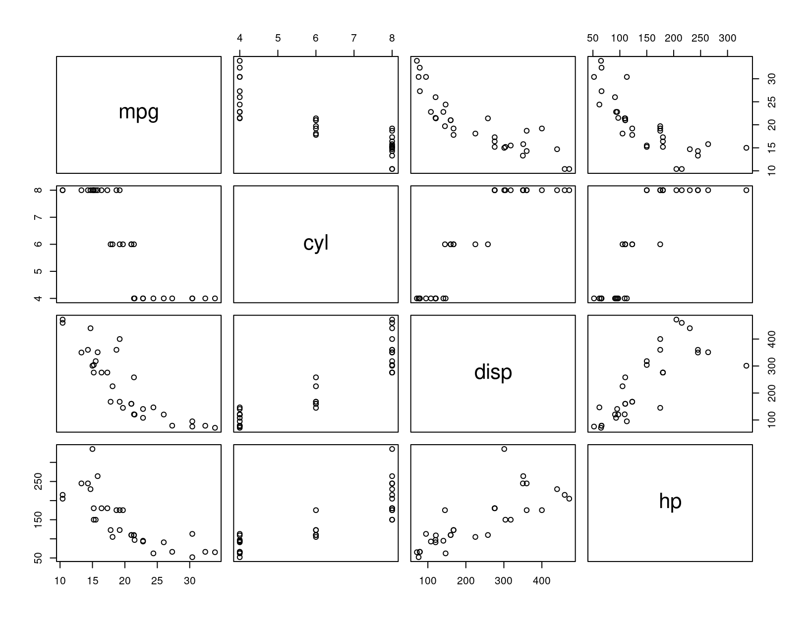
op <- par(mfrow = c(2, 2))
plot(mod) # 회귀모형: 그림 네 장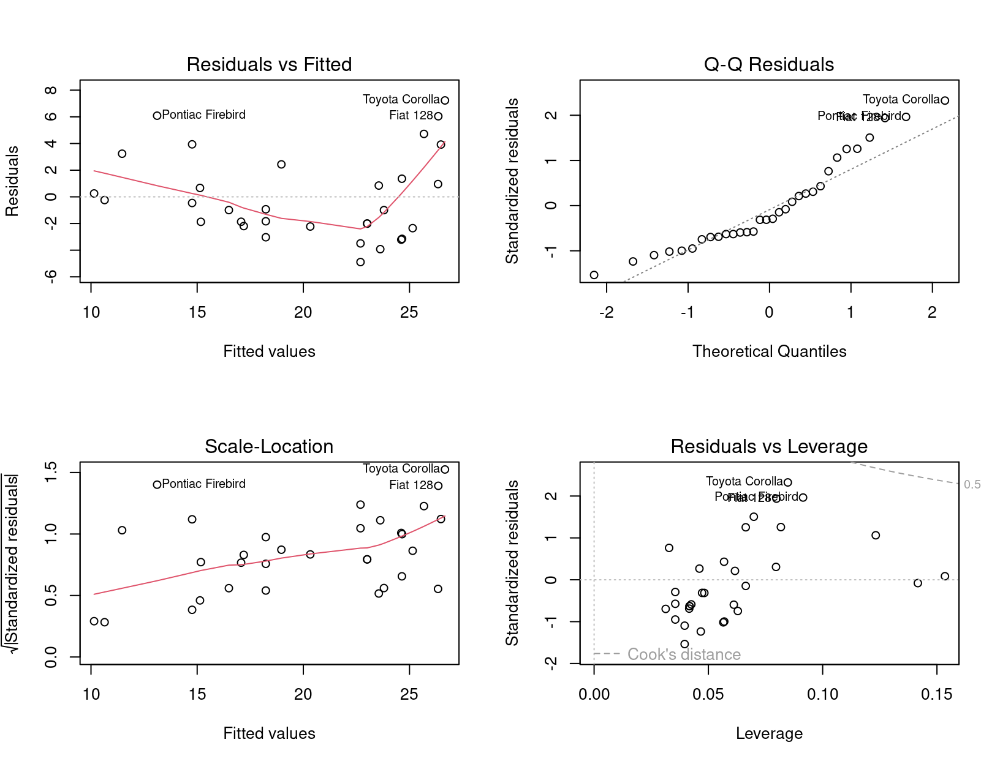
par(op)
plot(Titanic) # 교차표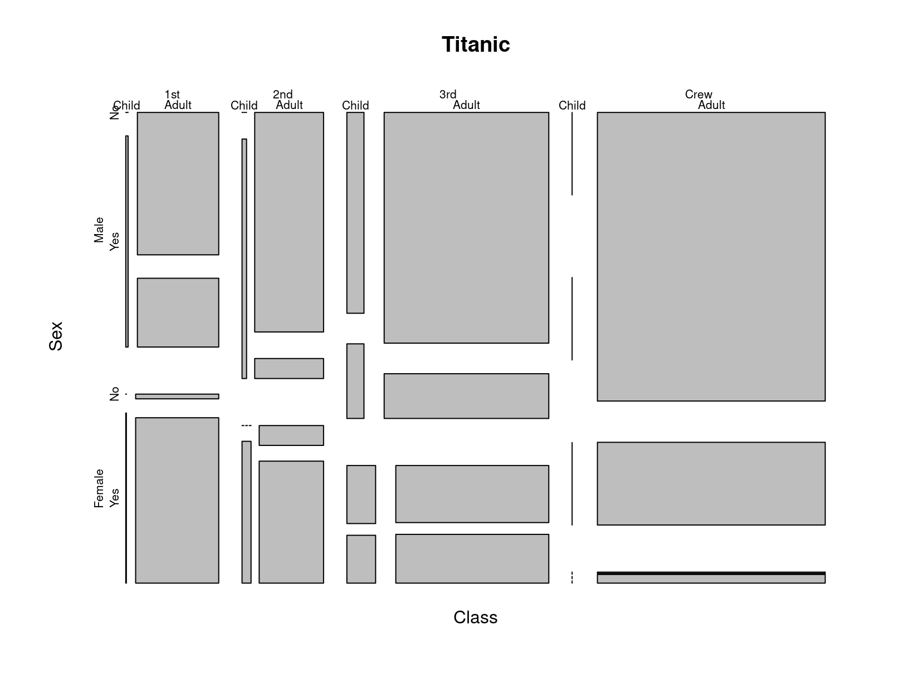
세 그림 가운데 원자료의 산점도는 첫째뿐이다.
- 데이터 프레임: 열의 모든 쌍을 그린 산점도 행렬(scatter plot matrix)이다. 대각선 칸에 변수 이름이 있고, i 행 j 열 칸은 j 번째 변수를 x 축, i 번째 변수를 y 축에 둔 산점도다. 1행 3열 칸은 배기량(
disp)이 x, 연비(mpg)가 y 다.pairs(mtcars[, 1:4])도 같은 그림을 그린다. - 회귀모형: 모형을 진단하는 그림 네 장이다. 잔차 대 적합값(Residuals vs Fitted), 잔차의 정규 Q-Q 그림(Q-Q Residuals), 척도-위치(Scale-Location), 잔차 대 지렛값(Residuals vs Leverage)이다.
- 교차표: 모자이크 그림이다.
Titanic은 타이타닉호 탑승자 2,201명을 등급(Class), 성별(Sex), 나이(Age), 생존(Survived)으로 나눈 4차원 교차표다. 읽는 법은 섹션 2.4 에서 본다.
같은 이름의 함수가 이렇게 다르게 동작하는 것은 plot() 이 총칭 함수(generic function)이기 때문이다. plot() 은 받은 객체의 클래스를 보고 plot.data.frame(), plot.lm(), plot.table() 처럼 클래스 이름이 붙은 함수(방법, method)를 골라 부른다. 어떤 클래스의 방법이 있는지는 methods() 로 본다. 목록의 길이는 불러온 패키지에 따라 달라진다.
head(methods(plot), 8)[1] "plot.acf" "plot.data.frame"
[3] "plot.decomposed.ts" "plot.default"
[5] "plot.dendrogram" "plot.density"
[7] "plot.ecdf" "plot.factor" 벡터를 넣을 때는 인수의 수가 그림을 정한다. 벡터 하나를 넣으면(plot(mtcars$mpg)) x 축은 값의 순서(1 부터 32)이고 y 축이 값이다. 벡터 둘을 넣으면(plot(mtcars$disp, mtcars$mpg)) 첫째가 x, 둘째가 y 인 산점도다. 수식 plot(mpg ~ disp, data = mtcars) 도 같은 산점도를 그린다. 수식에서는 ~ 의 왼쪽이 y 다.
점을 어떻게 이을지는 type 인수가 정한다. BOD 는 시간(일)에 따른 생화학적 산소요구량(mg/l)을 잰 6행 자료다.
types <- c("p", "l", "b", "o", "c", "h", "s", "n")
type_desc <- c("점", "선", "점과 선(띄움)", "점과 선(겹침)",
"선만(점 자리 비움)", "세로 막대", "계단", "그리지 않음")
op <- par(mfrow = c(2, 4))
for (i in seq_along(types)) {
plot(BOD$Time, BOD$demand, type = types[i],
main = paste0('type = "', types[i], '"\n', type_desc[i]),
xlab = "시간(일)", ylab = "산소요구량(mg/l)")
}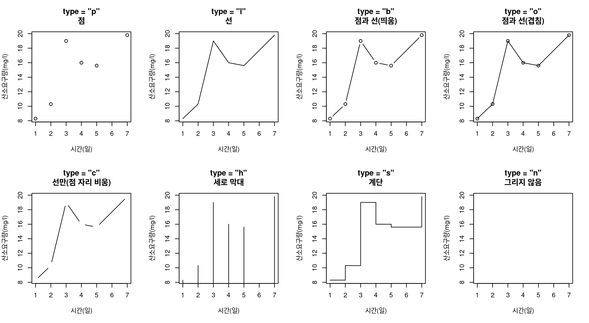
par(op)type = "n" 은 축과 좌표만 정하고 점도 선도 그리지 않는다. 빈 좌표 위에 저수준 함수로 필요한 것만 덧그릴 때 쓴다(섹션 3.1).
점 모양은 pch, 선 모양은 lty 인수에 번호로 준다. ggplot2 의 점 모양(shape)과 선 모양(linetype)도 같은 번호를 쓴다(4절).
op <- par(mfrow = c(1, 2), mar = c(1, 1, 3, 1))
# 왼쪽: 점 모양 25가지 (왼쪽 위부터 1, 2, 3, ...)
coord <- expand.grid(x = 1:5, y = 5:1)
plot(coord, type = "n", xlim = c(0.6, 5.6), ylim = c(0.6, 5.4),
axes = FALSE, xlab = "", ylab = "", main = "점 모양 (pch)")
points(coord, pch = 1:25, cex = 2, bg = "orange")
text(coord$x + 0.3, coord$y, labels = 1:25, cex = 0.9)
# 오른쪽: 선 모양 7가지
lty_name <- c("blank", "solid", "dashed", "dotted",
"dotdash", "longdash", "twodash")
plot(c(0, 10), c(0.5, 7.5), type = "n", axes = FALSE,
xlab = "", ylab = "", main = "선 모양 (lty)")
for (i in 0:6) {
lines(c(0, 5.5), c(7 - i, 7 - i), lty = i, lwd = 2)
text(6, 7 - i, paste0(i, ' "', lty_name[i + 1], '"'), adj = 0)
}
par(op)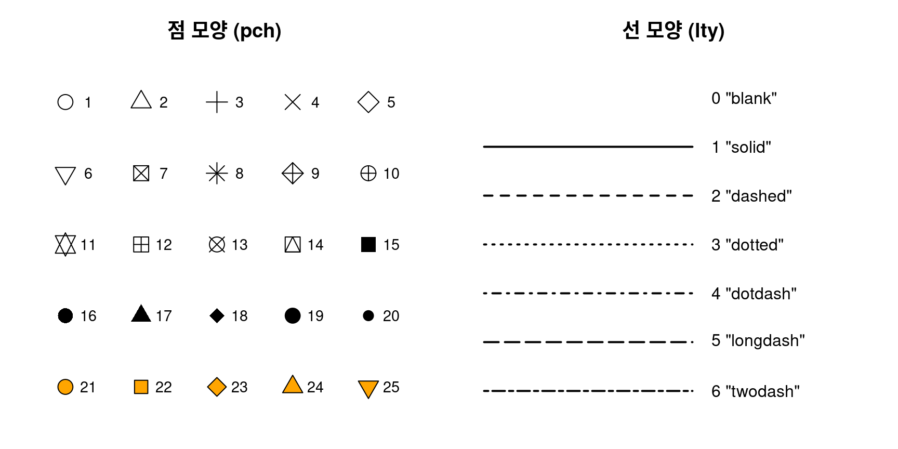
색은 col 인수에 이름("red"), 16진수 코드("#DF536B"), 번호(2)로 준다. 번호는 팔레트(palette)의 순서다.
palette()[1] "black" "#DF536B" "#61D04F" "#2297E6" "#28E2E5"
[6] "#CD0BBC" "#F5C710" "gray62" col = 2 는 팔레트의 둘째 색 "#DF536B" 다. 번호와 색의 대응은 팔레트가 정하므로, 기본 팔레트가 바뀐 R 4.0.0 부터는 같은 코드가 다른 색을 그린다. 그 전에는 2번이 "red" 였다.
2.2 히스토그램과 막대그림
히스토그램(histogram)과 막대그림(bar plot)은 둘 다 막대를 그린다. 막대의 높이는 각각 어디서 오는가? airquality 의 기온으로 시작한다. 1973년 5~9월 뉴욕 라과디아 공항의 일 최고 기온(화씨)이고 153일치다. hist() 는 그림을 그리면서 계산한 값도 돌려준다. plot = FALSE 를 주면 그리지 않고 값만 돌려준다.
temp <- airquality$Temp
hist(temp, main = "일 최고 기온의 분포", xlab = "일 최고 기온(화씨)", ylab = "날수")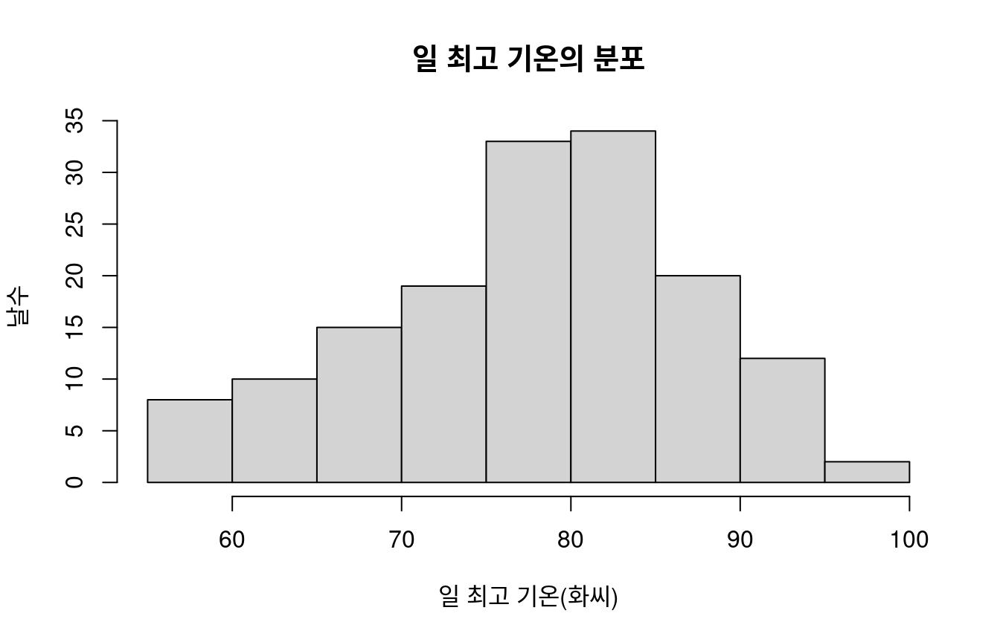
h <- hist(temp, plot = FALSE) # 그리지 않고 계산한 값만 받는다
h$breaks # 구간 경계 [1] 55 60 65 70 75 80 85 90 95 100h$counts # 구간마다 센 날수[1] 8 10 15 19 33 34 20 12 2sum(h$counts)[1] 153구간은 55 부터 100 까지 5도 간격 9개이고, 각 구간은 오른쪽 끝을 포함한다(첫 구간은 왼쪽 끝 55 도 포함). 날수의 합 153 은 관측일 수와 같다. 막대 높이는 자료에 적힌 값이 아니라 hist() 가 구간마다 센 값이다. 그림이 계산한 값을 이렇게 꺼내 대조하는 일을 이 장에서 계속 한다. ggplot2 에서는 layer_data() 로 꺼낸다(5절).
힌트
예측해 보자: hist(temp, breaks = 4) 의 막대는 몇 개일까? breaks = 15 이면 몇 개일까?
op <- par(mfrow = c(1, 2))
hist(temp, breaks = 4, main = "breaks = 4",
xlab = "일 최고 기온(화씨)", ylab = "날수")
hist(temp, breaks = 15, main = "breaks = 15",
xlab = "일 최고 기온(화씨)", ylab = "날수")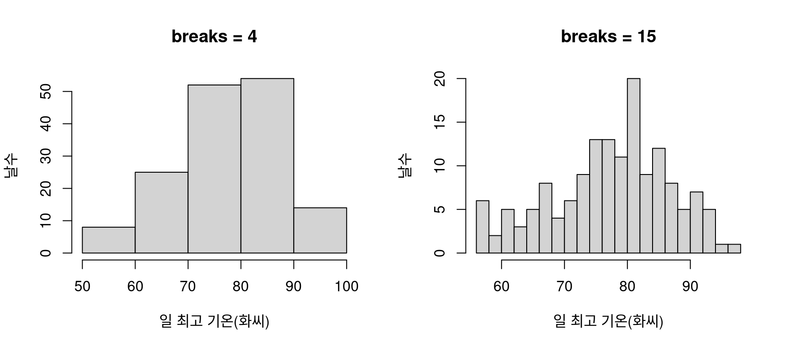
par(op)
c(breaks_4 = length(hist(temp, breaks = 4, plot = FALSE)$counts),
breaks_15 = length(hist(temp, breaks = 15, plot = FALSE)$counts)) breaks_4 breaks_15
5 21 막대는 4개와 15개가 아니라 5개와 21개다. breaks 에 수 하나를 주면 그 수는 구간 수의 제안이고, R 은 pretty() 로 간격이 1, 2, 5 에 10의 거듭제곱을 곱한 값이 되도록 경계를 고른다. 4를 주니 50, 60, …, 100 의 10도 간격, 15를 주니 56, 58, …, 98 의 2도 간격이 되었다. 구간을 정확히 정하려면 breaks = seq(55, 100, by = 5) 처럼 경계를 벡터로 준다.
힌트
예측해 보자: x <- c(1, 2, 2, 1, 3, 3, 1, 5) 일 때 hist(x) 와 barplot(x) 의 막대는 각각 몇 개이고, 높이는 얼마일까?
x <- c(1, 2, 2, 1, 3, 3, 1, 5)
op <- par(mfrow = c(1, 2))
hist(x, main = "hist(x)", ylab = "빈도")
barplot(x, main = "barplot(x)", ylab = "값")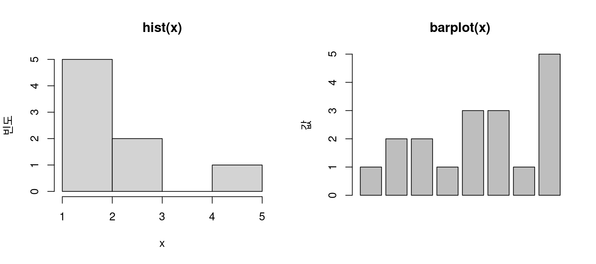
par(op)
hist(x, plot = FALSE)$counts[1] 5 2 0 1hist(x) 는 막대 4개, 높이 5, 2, 0, 1 이다. 첫 구간 [1, 2] 에 1 세 개와 2 두 개가 함께 들어갔고, 3 두 개는 구간 (2, 3], 5 는 구간 (4, 5] 에 들어갔다. 구간 (3, 4] 는 비어 높이가 0 이다. barplot(x) 는 계산 없이 값 8개를 그대로 막대 8개의 높이로 그렸다. 값마다 몇 번 나왔는지를 막대그림으로 그리려면 barplot(table(x)) 처럼 먼저 세어서 넘긴다. ggplot2 에도 세는 막대와 값을 그리는 막대가 따로 있다(5절).
막대그림은 요약한 값을 그릴 때 쓴다. warpbreaks 는 직기에서 날실이 끊어진 횟수(breaks)를 양모 종류(wool: A, B)와 장력(tension: L, M, H)의 조합마다 9번씩 잰 54행 자료다. 조합별로 끊어진 횟수의 합을 행렬로 만든다.
breaks_sum <- tapply(warpbreaks$breaks,
list(warpbreaks$wool, warpbreaks$tension), sum)
breaks_sum L M H
A 401 216 221
B 254 259 169colSums(breaks_sum) L M H
655 475 390 op <- par(mfrow = c(1, 2))
barplot(breaks_sum, legend.text = TRUE, ylim = c(0, 700),
main = "쌓은 막대", xlab = "장력", ylab = "끊어진 횟수의 합")
barplot(breaks_sum, beside = TRUE, legend.text = TRUE, ylim = c(0, 450),
main = "나란한 막대", xlab = "장력", ylab = "끊어진 횟수의 합")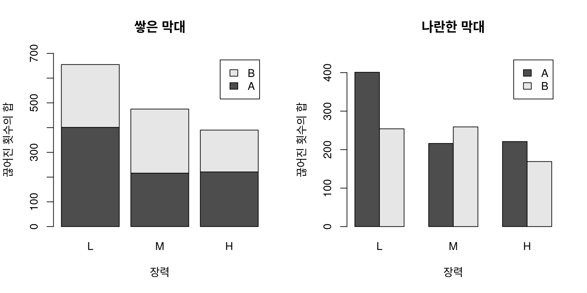
par(op)행렬을 넣으면 열(장력)마다 막대 하나를 세우고 행(양모)을 위로 쌓는다. 쌓은 막대의 꼭대기는 두 양모의 합(L 655, M 475, H 390)이다. beside = TRUE 를 주면 양모를 나란히 세워 막대 하나가 한 조합의 합이 된다(가장 큰 막대가 A·L 의 401). 같은 행렬을 그려도 막대 꼭대기가 뜻하는 값이 다르다. ggplot2 에서 같은 선택을 섹션 6 에서 다시 만난다.
2.3 상자그림의 수염
반 학생 서른 명의 키를 상자그림으로 그리면, 키가 가장 큰 학생이 수염 끝에 이어지지 않고 점으로 따로 찍힐 때가 있다. 상자그림에는 수염을 어디까지 그릴지 정하는 규칙이 있기 때문이다.
상자그림(box plot)은 다음으로 이루어진다(?boxplot.stats).
- 상자: 아래 힌지(hinge), 중앙값, 위 힌지를 잇는다. 힌지는 중앙값을 기준으로 나눈 아래쪽 절반과 위쪽 절반 각각의 중앙값이다(자료 수가 홀수이면 중앙값을 양쪽 절반에 넣는다).
fivenum()의 둘째, 넷째 값이고 1사분위수, 3사분위수와 거의 같다. - 상자 길이: 위 힌지 − 아래 힌지. 사분위범위(interquartile range, IQR)에 해당한다.
- 수염(whisker): 상자 끝에서 상자 길이의 1.5배 안에 있는 관측값 가운데 상자에서 가장 먼 값까지 그린다.
- 점: 수염 밖의 관측값. 이상점(outlier) 후보로 따로 찍는다.
이전 판 강의노트는 상자그림을 ’최솟값, 1사분위수, 중앙값, 3사분위수, 최댓값’의 다섯 통계량으로 그린다고 적었다. 수염 끝이 최솟값과 최댓값이 되는 것은 수염 밖에 관측값이 없을 때뿐이다. 표준정규분포에서 뽑은 100개로 상자그림의 구성을 표시해 보자.
set.seed(20200522)
x <- rnorm(100)
part <- c("아래 수염 끝", "아래 힌지", "중앙값", "위 힌지", "위 수염 끝")
bx <- boxplot(x, horizontal = TRUE, axes = FALSE, main = "상자그림의 구성")
axis(side = 1, at = bx$stats, labels = FALSE)
text(x = bx$stats, y = 0.45, labels = part, xpd = TRUE, srt = 25, adj = 1.1)
abline(v = bx$stats, lty = 2, col = "gray")
arrows(x0 = bx$stats[2], y0 = 1.3, x1 = bx$stats[4], y1 = 1.3,
code = 3, length = 0.1)
text(x = mean(bx$stats[c(2, 4)]), y = 1.3, labels = "상자 길이(IQR)", pos = 3)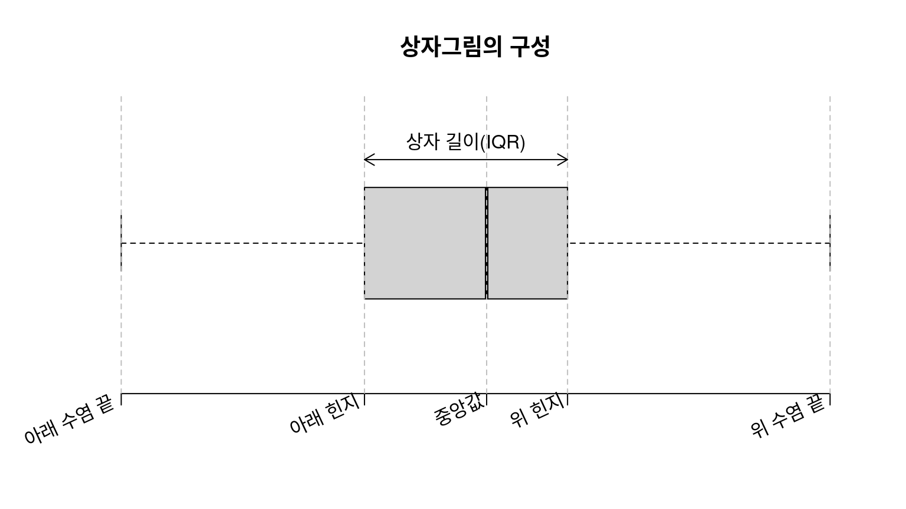
boxplot() 은 그린 값을 반환값으로 돌려준다. 그림에 쓴 다섯 값을 fivenum(), max() 와 대조한다.
bx$stats[, 1] # 아래 수염 끝, 아래 힌지, 중앙값, 위 힌지, 위 수염 끝[1] -2.25029659 -0.72093083 0.04719744 0.55571161
[5] 2.20634869fivenum(x)[1] -2.25029659 -0.72093083 0.04719744 0.55571161
[5] 2.20634869max(x)[1] 2.206349bx$out # 수염 밖의 점numeric(0)c(아래힌지 = fivenum(x)[2], 제1사분위수 = unname(quantile(x, 0.25))) 아래힌지 제1사분위수
-0.7209308 -0.7203947 이 자료에는 수염 밖의 점이 없어(numeric(0)) 위 수염 끝이 최댓값 2.206 과 같다. 다섯 값은 fivenum() 과 같다. 마지막 줄은 힌지와 quantile() 의 계산 방법이 다르다는 것을 보인다. 아래 힌지는 -0.7209, quantile(x, 0.25) 는 -0.7204 로 넷째 자리에서 갈린다. ggplot2 의 상자그림은 quantile() 로 상자를 그리므로 자료에 따라 두 체계의 상자그림이 다르게 그려진다. 5절에서 그런 자료를 본다.
힌트
예측해 보자: 위 수염 끝은 항상 max(x) 일까? x 에 값 5 하나를 더한 x2 의 상자그림에서 위 수염 끝은 어디이고, 5 는 어떻게 그려질까?
x2 <- c(x, 5)
boxplot(list(x = x, x2 = x2), horizontal = TRUE, xlab = "값")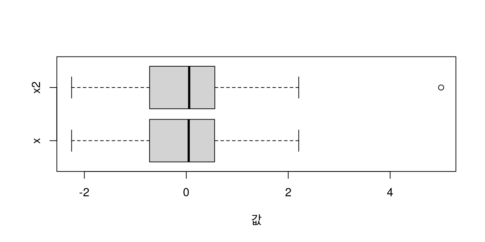
b2 <- boxplot.stats(x2)
b2$stats # 아래 수염 끝, 아래 힌지, 중앙값, 위 힌지, 위 수염 끝[1] -2.25029659 -0.71985851 0.05676748 0.55994777
[5] 2.20634869b2$out # 수염 밖의 점[1] 5hinge <- fivenum(x2)[c(2, 4)]
hinge[2] + 1.5 * diff(hinge) # 위 수염 끝이 놓일 수 있는 한계[1] 2.479657x2 의 위 수염 끝은 그대로 2.206 이고, 5 는 수염 밖의 점으로 따로 찍혔다. 위 힌지 0.560 에 상자 길이 1.280 의 1.5배를 더한 2.48 까지가 위 수염 끝이 놓일 수 있는 한계다. 그 안에서 상자로부터 가장 먼 관측값이 2.206 이고, 5 는 한계 밖이다. 수염 끝은 최댓값이 아니라 한계 안의 가장 먼 관측값이다. 상자그림을 읽을 때는 점이 있는지 먼저 보고, 점이 없을 때만 수염 끝을 최솟값과 최댓값으로 읽는다.
데이터 프레임의 집단별 상자그림은 수식으로 그린다. y ~ x1 + x2 는 x1 과 x2 의 조합마다 y 의 상자를 그린다.
boxplot(breaks ~ wool + tension, data = warpbreaks,
xlab = "양모.장력", ylab = "끊어진 횟수")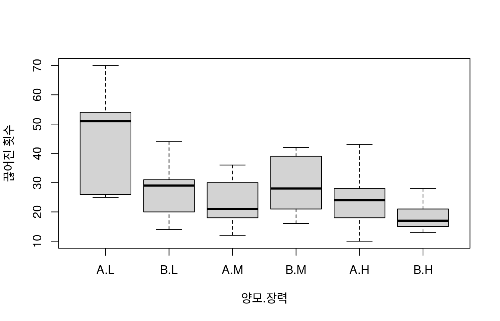
tapply(warpbreaks$breaks, warpbreaks[c("wool", "tension")], median) tension
wool L M H
A 51 21 24
B 29 28 17가로축의 A.L 은 양모 A 와 장력 L 의 조합이다. A.L 의 중앙값 51 이 다른 다섯 조합의 중앙값(17~29)보다 크고, 상자도 가장 길다.
2.4 범주형 자료의 모자이크 그림
모자이크 그림(mosaic plot)은 교차표의 칸마다 직사각형을 그리고, 그 넓이를 칸의 빈도에 비례시킨다. 첫째 변수로 가로를 나누고, 나뉜 조각마다 둘째 변수로 세로를 나눈다. 그래서 가로 폭은 첫째 변수의 비율, 세로 높이는 첫째 변수 안에서 둘째 변수의 비율이다. 타이타닉호 탑승자의 성별과 생존으로 읽어 보자.
sex_survived <- margin.table(Titanic, c(2, 4)) # 등급, 나이를 합친 성별 × 생존 표
sex_survived Survived
Sex No Yes
Male 1364 367
Female 126 344round(prop.table(sex_survived, 1), 3) # 성별 안에서 생존 비율 Survived
Sex No Yes
Male 0.788 0.212
Female 0.268 0.732mosaicplot(sex_survived, color = c("gray70", "steelblue"),
main = "타이타닉호 탑승자의 성별과 생존", xlab = "성별", ylab = "생존")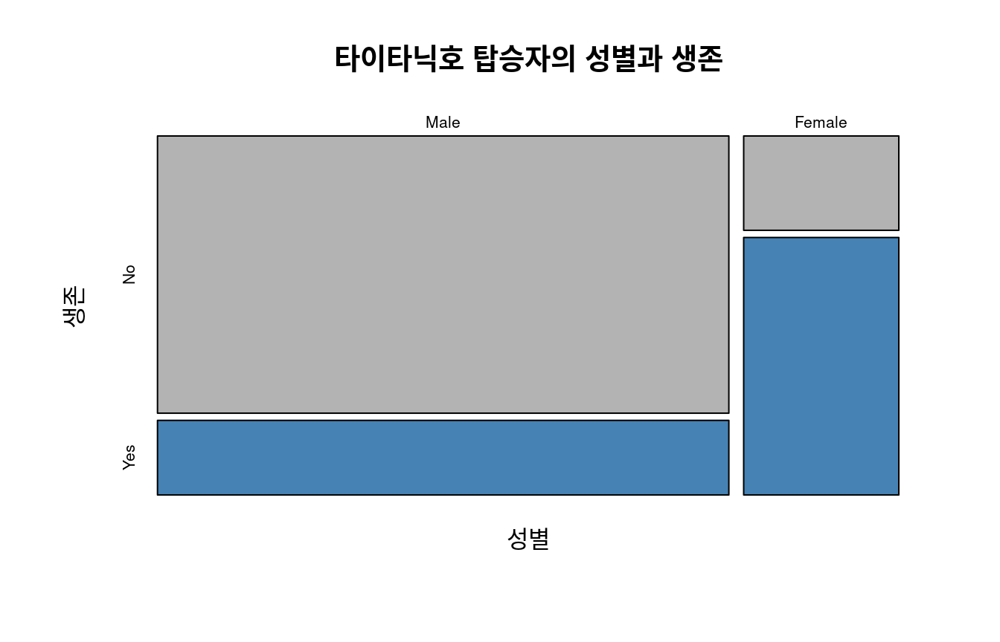
남자는 2,201명 중 1,731명이라 가로 폭이 넓고, 그 안에서 생존(Yes)의 높이는 21.2% 다. 여자는 폭이 좁고 생존의 높이가 73.2% 다. 직사각형의 넓이가 칸의 빈도, 세로 높이가 성별 안의 생존 비율이다.
캘리포니아대학교 버클리(UC Berkeley)의 1973년 대학원 지원 자료 UCBAdmissions 는 지원자가 많은 6개 학과의 지원자 4,526명을 합격 여부(Admit), 성별(Gender), 학과(Dept)로 나눈 3차원 교차표다. 학과를 합쳐 성별 합격률을 보자.
admit_gender <- margin.table(UCBAdmissions, c(1, 2)) # 학과를 합친 합격 × 성별 표
admit_gender Gender
Admit Male Female
Admitted 1198 557
Rejected 1493 1278round(prop.table(admit_gender, 2), 3) # 성별 안에서 합격 비율 Gender
Admit Male Female
Admitted 0.445 0.304
Rejected 0.555 0.696합격률은 남자 44.5%, 여자 30.4% 다.
힌트
예측해 보자: 지원자 전체로 보면 남자 합격률이 14%p 높다. 학과별로 나누어 보아도 여섯 학과 모두 남자 합격률이 높을까?
op <- par(mfrow = c(2, 3), oma = c(0, 0, 2, 0))
for (d in dimnames(UCBAdmissions)$Dept) {
# 학과 d 의 표를 성별 × 합격으로 돌려 놓는다: 가로 폭이 성별, 세로 높이가 합격 비율
mosaicplot(t(UCBAdmissions[, , d]), color = c("steelblue", "gray70"),
main = paste("학과", d), xlab = "성별", ylab = "합격 여부")
}
mtext("UC Berkeley 학과별 지원자의 성별과 합격 여부", outer = TRUE, cex = 1.2)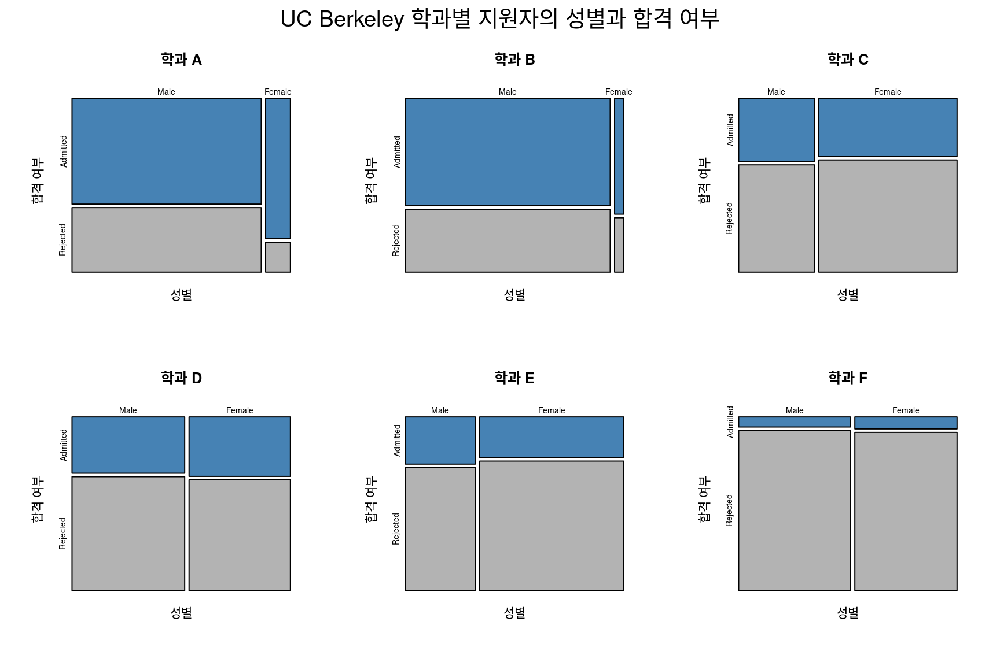
par(op)# 학과와 성별의 조합마다 합격 비율을 구하고 합격 행만 남긴다: 성별 × 학과
dept_rate <- prop.table(UCBAdmissions, c(2, 3))["Admitted", , ]
round(dept_rate, 3) Dept
Gender A B C D E F
Male 0.621 0.630 0.369 0.331 0.277 0.059
Female 0.824 0.680 0.341 0.349 0.239 0.070여섯 학과 중 네 학과(A, B, D, F)에서 여자 합격률이 높다. A 학과는 여자 82.4%, 남자 62.1% 다. 남자가 높은 C, E 학과도 차이가 2.8%p, 3.8%p 다. 그런데 합치면 왜 남자가 14%p 높을까? 성별로 어느 학과에 지원했는지 보자.
applicants <- apply(UCBAdmissions, c(2, 3), sum) # 성별 × 학과 지원자 수
applicants Dept
Gender A B C D E F
Male 825 560 325 417 191 373
Female 108 25 593 375 393 341# 성별을 합친 학과 합격률
round(prop.table(margin.table(UCBAdmissions, c(1, 3)), 2)["Admitted", ], 3) A B C D E F
0.644 0.632 0.351 0.340 0.252 0.064 A, B 학과는 합격률이 63~64% 인데 지원자의 88%, 96% 가 남자다(A 학과 825명 대 108명). 합격률이 6.4~35.1% 인 C~F 학과에는 여자 지원자 1,835명 중 93%, 남자 지원자 2,691명 중 49% 가 지원했다. 여자가 합격률이 낮은 학과에 많이 지원했으므로, 학과 안에서는 높거나 비슷한 여자 합격률이 학과를 합치면 낮게 나온다. 이처럼 집단을 합칠 때 비교의 방향이 뒤집히는 현상을 심슨의 역설(Simpson’s paradox)이라 한다. 학과별 모자이크 그림에는 가로 폭(성별 지원자 수)과 세로 높이(합격 비율)가 함께 보이므로 이 구조를 읽을 수 있다. A 학과 그림에서 여자의 폭이 좁은 것이 지원자 108명이다.
학과별 그림은 par(mfrow = c(2, 3), oma = c(0, 0, 2, 0)) 으로 장치를 6칸으로 나누고 위쪽 바깥 여백을 만든 뒤, 끝에서 par(op) 로 되돌렸다. 이전 판 강의노트의 같은 그림은 되돌리지 않았다. 그 결과는 섹션 3.3 에서 본다.
3 덧그리기와 그래픽 상태
기본 그래픽은 그림을 장치에 차례로 덧그린다. 고수준 함수가 축과 좌표를 정하면, 저수준 함수(points(), lines(), abline(), text(), legend(), polygon())가 그 좌표 위에 점, 선, 글자, 도형을 더한다. 여백과 칸 나누기 같은 설정은 장치에 걸려 있어 다음 그림에도 남는다.
3.1 그림 위에 덧그리기
mtcars 의 마력(hp)과 연비(mpg)로 산점도를 그리고, 그 위에 회귀직선, 관측값에서 회귀직선까지의 잔차, 두 변수의 평균선을 덧그린다.
힌트
예측해 보자: 회귀직선, 연비 평균의 가로선, 마력 평균의 세로선 세 직선은 한 점에서 만날까? 만난다면 그 점의 좌표는 무엇일까?
m <- lm(mpg ~ hp, data = mtcars) # 단순 선형회귀: 연비를 마력으로 설명
yhat <- fitted(m) # 관측값마다의 적합값
# 축과 좌표만 정한 빈 판
plot(mpg ~ hp, data = mtcars, type = "n", bty = "n",
xlim = c(50, 350), ylim = c(5, 40),
main = "회귀직선, 잔차, 평균선", xlab = "마력(hp)", ylab = "연비(마일/갤런)")
# 관측값에서 회귀직선까지의 잔차를 세로선으로
for (i in seq_len(nrow(mtcars))) {
lines(c(mtcars$hp[i], mtcars$hp[i]), c(mtcars$mpg[i], yhat[i]),
col = "green3", lwd = 0.8)
}
points(mtcars$hp, mtcars$mpg, pch = 16)
abline(m, lwd = 3, col = "red") # 회귀직선
abline(h = mean(mtcars$mpg), lty = 2, col = "darkgray") # 연비 평균
abline(v = mean(mtcars$hp), lty = 2, col = "darkgray") # 마력 평균
text(mean(mtcars$hp), 40,
bquote(bar(x) == .(sprintf("%.1f", mean(mtcars$hp)))), pos = 4)
text(350, mean(mtcars$mpg),
bquote(bar(y) == .(sprintf("%.1f", mean(mtcars$mpg)))), adj = c(1, -0.5))
# 세 직선이 만나는 점: 마력 평균에서 회귀직선의 예측값을 연비 평균과 비교한다
c(마력평균 = mean(mtcars$hp), 연비평균 = mean(mtcars$mpg),
평균마력에서의예측값 = unname(predict(m, data.frame(hp = mean(mtcars$hp))))) 마력평균 연비평균
146.68750 20.09062
평균마력에서의예측값
20.09062 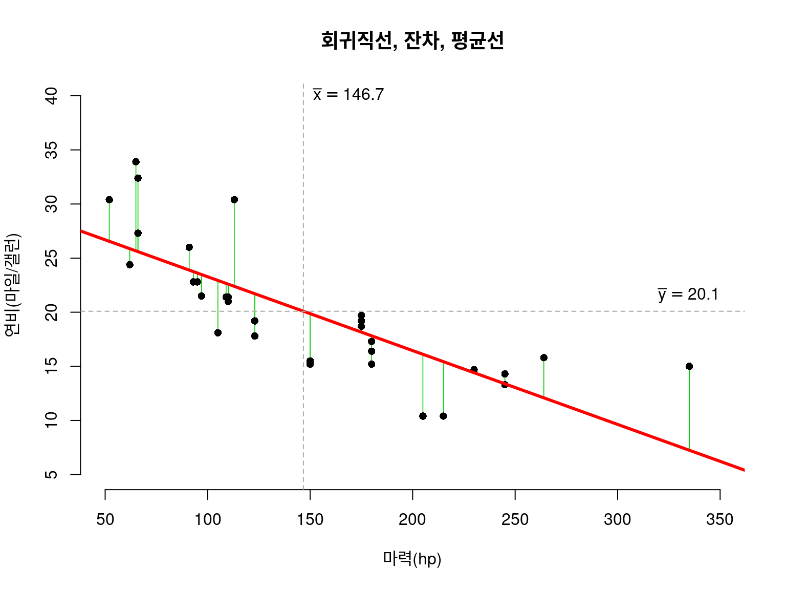
그림에서 세 직선은 한 점에서 만난다. 마지막 줄의 계산으로 확인하면 마력 평균 146.7 에서 회귀직선의 예측값이 20.09 로 연비 평균과 같다. 최소제곱 회귀직선의 절편은 \(b_0 = \bar{y} - b_1 \bar{x}\) 이므로 직선은 항상 \((\bar{x}, \bar{y})\) 를 지난다.
그리는 순서도 보자. type = "n" 으로 축과 좌표만 정한 빈 판을 만들고, lines() 로 잔차를 먼저 그린 뒤 points() 로 점을 그 위에 얹었다. 나중에 그린 것이 위에 놓인다. 평균선 옆의 글자 \(\bar{x} = 146.7\), \(\bar{y} = 20.1\) 은 mean() 의 결과를 sprintf() 로 넣었다. 이전 판 강의노트는 연비 평균에도 \(\bar{x}\) 라고 적었다. 세로축(y) 변수의 평균이므로 \(\bar{y}\) 다.
범례는 legend() 로 따로 그린다. 붓꽃 세 종의 점을 모양과 색으로 구분하고 범례를 단다.
shapes <- c(15, 16, 17) # 종마다 점 모양
sp <- as.numeric(iris$Species) # 수준 번호: setosa 1, versicolor 2, virginica 3
plot(Petal.Length ~ Sepal.Length, data = iris, type = "n", bty = "n",
main = "붓꽃 세 종의 꽃받침 길이와 꽃잎 길이",
xlab = "꽃받침 길이(cm)", ylab = "꽃잎 길이(cm)")
points(iris$Sepal.Length, iris$Petal.Length, pch = shapes[sp], col = sp)
legend("bottomright", legend = levels(iris$Species), pch = shapes, col = 1:3)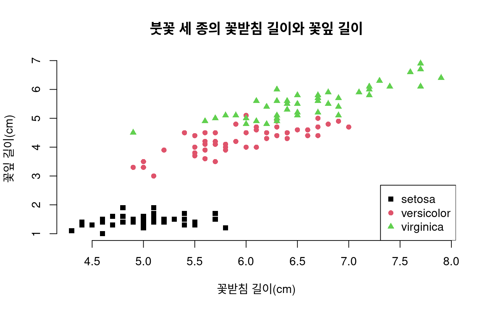
점의 모양과 색은 as.numeric(iris$Species) 가 돌려주는 수준 번호로 정했다. 범례는 점과 따로 그리므로, 범례의 이름·모양·색이 점에 준 것과 같은 순서인지 맞추는 일은 코드를 쓰는 사람에게 남는다. 여기서는 셋 다 수준 순서 (levels(), shapes, 1:3)로 주었다. ggplot2 는 매핑에서 범례를 만들므로 이 대응을 따로 맞출 필요가 없다(4절).
곡선 아래 넓이는 polygon() 으로 칠한다. \(Z \sim N(0, 1)\) 일 때 \(P(-1.5 < Z < 0.7)\) 을 칠하고 값을 적는다. 구간 끝 값을 a, b 에 한 번만 정해, 칠하는 구간과 적는 확률이 같은 값에서 나오게 한다.
a <- -1.5; b <- 0.7 # 구간 끝
z <- seq(-3, 3, by = 0.01)
dz <- dnorm(z)
plot(z, dz, type = "n", bty = "n", xlab = "z", ylab = "확률밀도",
main = "표준정규분포")
idx <- z > a & z < b
polygon(c(a, z[idx], b), c(0, dz[idx], 0), col = "lightgreen", border = "green3")
lines(z, dz, lwd = 2)
text(-3, 0.37,
bquote(P({.(a) < Z} < .(b)) == .(sprintf("%.3f", pnorm(b) - pnorm(a)))),
adj = 0)
pnorm(b) - pnorm(a)[1] 0.6912291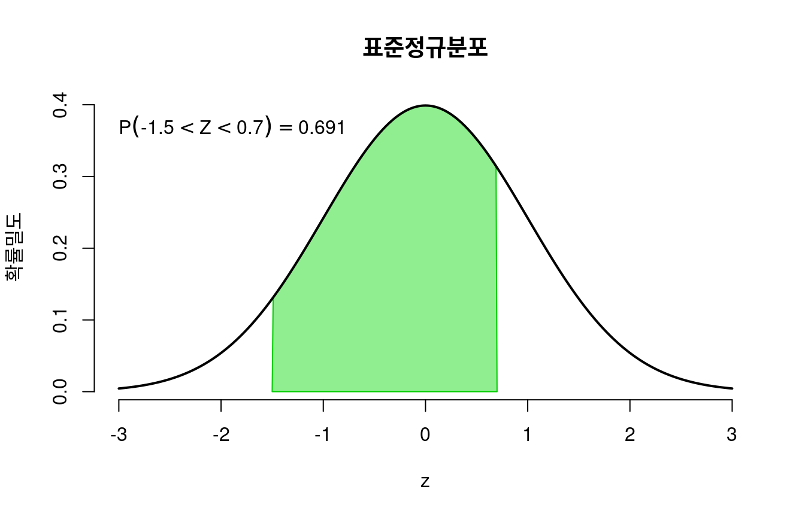
칠한 넓이는 pnorm(0.7) - pnorm(-1.5) = 0.691 이다. 이전 판 강의노트의 코드는 구간 끝 값 -1.5 와 0.7 을 구간을 고르는 줄, 칠하는 줄, 글자를 만드는 줄에 따로 적었다. 한 곳만 고치면 칠한 구간과 적힌 확률이 어긋난다. 그림의 글자를 코드의 값에서 만드는 방법은 9절에서 다시 다룬다.
저수준 함수의 인수(arrows(), rect(), mtext(), text() 의 adj, pos, srt 등)는 부록 B(예정)에 모은다.
3.2 그림 영역과 칸 나누기
한 장치에 그림 여러 개를 그리면 칸마다 축과 제목이 놓일 자리가 필요하다. 장치는 어떤 영역으로 나뉘고, 칸은 어떤 순서로 채워지는가? 영역의 크기와 칸 나누기는 par() 로 읽고 바꾸는 그래픽 매개변수(graphical parameter)가 정한다. par() 는 열린 장치 하나에 걸린 값을 다룬다.
장치의 가장자리에 바깥 여백(outer margin)이 있고, 그 안에 그림 하나가 차지하는 figure 영역(figure region)이 있다. figure 영역 안에서 자료를 그리는 곳이 plot 영역(plot region)이고, 둘 사이가 그림 여백(figure margin)이다. 축 이름과 제목은 그림 여백에 놓인다.
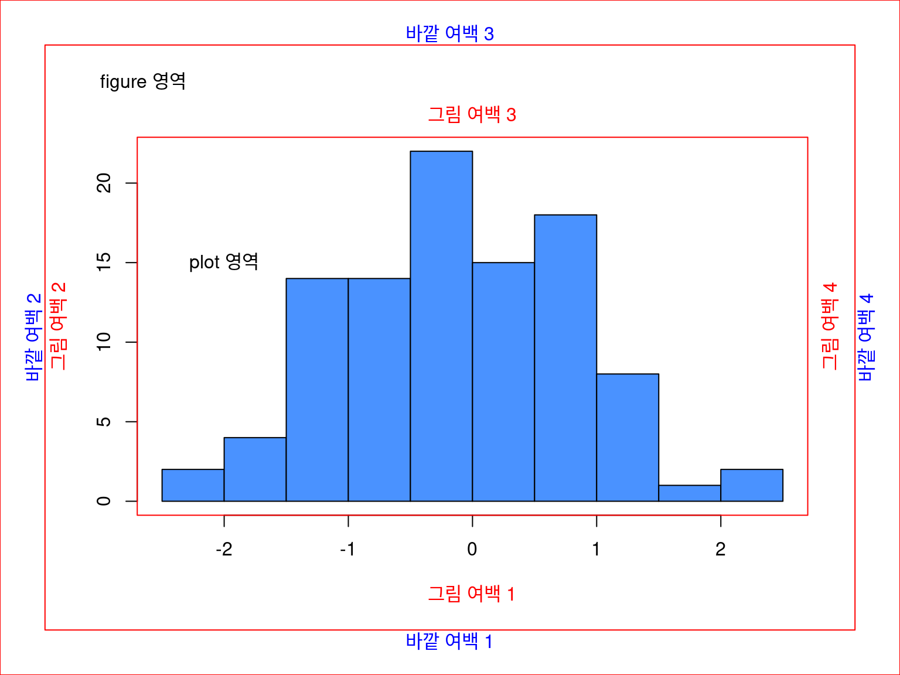

mai 는 그림 여백(인치), pin 은 plot 영역, fin 은 figure 영역, din 은 장치의 크기(인치)다. 출처: AIMS-R-users(Murray Logan), 현재 접속 불가
여백의 네 값은 c(아래, 왼쪽, 위, 오른쪽) 순서다. 여백 번호 1~4 도 같은 순서다. 그림 여백은 mar(글자 줄 수 단위) 또는 mai(인치 단위), 바깥 여백은 oma 로 정한다. 새 장치의 값을 보자.
par("mar") # 그림 여백(줄)[1] 5.1 4.1 4.1 2.1par("oma") # 바깥 여백(줄)[1] 0 0 0 0그림 여백은 아래 5.1줄, 왼쪽 4.1줄, 위 4.1줄, 오른쪽 2.1줄이고 바깥 여백은 없다.
한 장치를 여러 칸으로 나누는 매개변수는 mfrow 와 mfcol 이다. 다음은 이전 판 강의노트에 실려 있던 코드다. 영문 제목의 철자 하나(Muptiple)만 고쳤다.
힌트
예측해 보자: 아래 코드가 그린 그림의 위쪽 제목에는 ‘mfrow = c(2, 3)’ 이라고 적힌다. 그림은 몇 행 몇 열일까? 코드를 읽고 답한 뒤 그림과 대조해 보자.
par(oma = c(0, 0, 3, 0), # 윗쪽 여백 크기 조정
mfrow = c(3, 2))
for (i in 1:6) {
set.seed(12345)
plot(rnorm(20), rnorm(20),
main = paste("Plot", i))
box("figure")
}
# 윗쪽 여백(side=3)에 텍스트 출력
mtext(side = 3, line = 1, cex = 0.8, col = "blue",
"Multiple plots with mfrow = c(2, 3)",
outer = TRUE) # outer 여백 사용 여부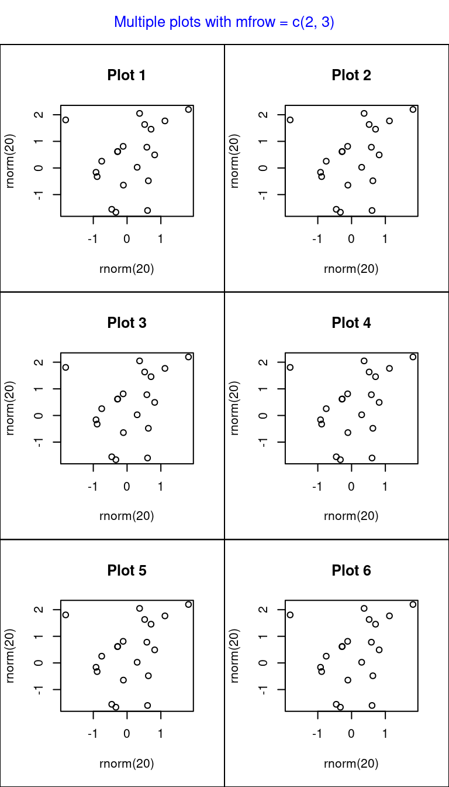
그림은 3행 2열이다. 코드는 mfrow = c(3, 2) 를 주었고, mfrow 는 c(행 수, 열 수) 다. 제목의 ‘c(2, 3)’ 이 틀렸다. 제목은 사람이 손으로 적은 문자열이라 코드와 어긋나도 오류가 나지 않는다. 그림 속 글자와 코드를 대조하는 방법은 9절에서 다룬다. 이 코드에는 문제가 하나 더 있다. 바꾼 oma 와 mfrow 를 되돌리지 않았다. 그 결과는 섹션 3.3 에서 본다.
mfcol 은 같은 칸 나누기를 열 순서로 채운다. 그림 번호가 놓인 자리를 비교하자.
op <- par(oma = c(0, 0, 3, 0), mfcol = c(3, 2))
for (i in 1:6) {
set.seed(12345)
plot(rnorm(20), rnorm(20), main = paste("그림", i), xlab = "", ylab = "")
box("figure")
}
mtext("mfcol = c(3, 2)", side = 3, line = 1, outer = TRUE, col = "blue")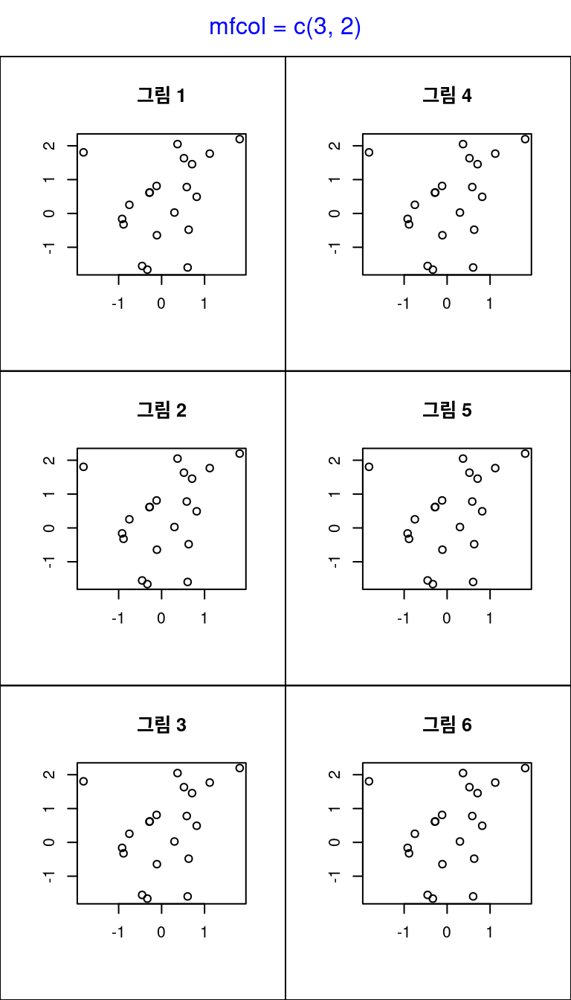
par(op)mfrow 는 1행을 먼저 채워 1, 2 번 그림이 첫 행에 놓이고, mfcol 은 1열을 먼저 채워 1, 2, 3 번 그림이 첫 열에 놓인다. 여섯 칸은 같은 시드로 만든 같은 점이고 제목만 다르다.
3.3 그래픽 상태
화이트보드를 네 칸으로 나눠 쓰고 나눈 선을 지우지 않으면, 다음 사람도 네 칸으로 나뉜 판에 쓴다. 기본 그래픽의 장치도 이렇게 동작한다. par() 로 바꾼 값은 되돌리거나 장치를 닫을 때까지 그 장치에서 그리는 모든 그림에 적용된다. 이렇게 함수 호출이 끝난 뒤에도 남아 다음 동작에 영향을 주는 값을 상태(state)라 한다. 콘솔에서는 장치 하나에 계속 그리므로, 앞 코드에서 바꾼 설정이 다음 코드에 그대로 남는다.
힌트
예측해 보자: par(mfrow = c(2, 3)) 으로 6칸으로 나눈 장치에 그림 6개를 그렸다. 같은 장치에서 이어서 par(pin = c(5, 2)); plot(1:10) 을 실행하면 어떻게 될까? pin 은 plot 영역의 크기 c(폭, 높이) 를 인치로 정한다. 장치는 폭 7인치, 높이 4.5인치다.
이 강의노트는 청크마다 장치를 새로 열므로(섹션 1.2), 콘솔에서 일어나는 일을 한 청크 안에서 재현한다. 오류 메시지는 tryCatch() 로 받아 출력한다.
op <- par(mfrow = c(2, 3))
for (i in 1:6) plot(rnorm(20), main = paste("그림", i), xlab = "", ylab = "")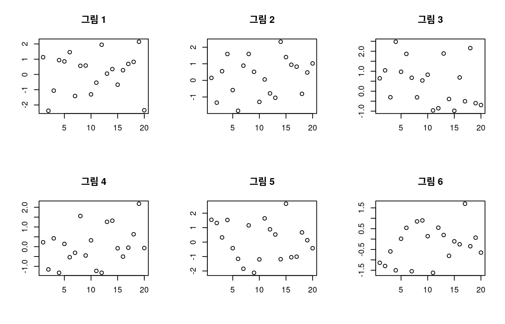
par("pin") # 6칸 중 한 칸의 plot 영역 크기(인치)[1] 1.514933 1.035600# 6칸으로 나뉜 상태가 남은 장치에서 폭 5인치의 plot 영역을 요구한다
tryCatch({
par(pin = c(5, 2))
plot(1:10)
}, error = function(e) cat("오류:", conditionMessage(e), "\n"))오류: plot region too large par(op)plot region too large 오류가 났다. 6칸으로 나뉜 장치에서 한 칸의 plot 영역은 폭 1.51인치, 높이 1.04인치다. 칸 하나에 폭 5인치의 plot 영역이 들어가지 않는다. 오류는 par(pin = ) 이 아니라 그 설정으로 새 그림을 시작하는 plot() 에서 난다. 같은 두 줄을 새 장치에서 실행하면 그려진다.
op <- par(pin = c(5, 2))
plot(1:10)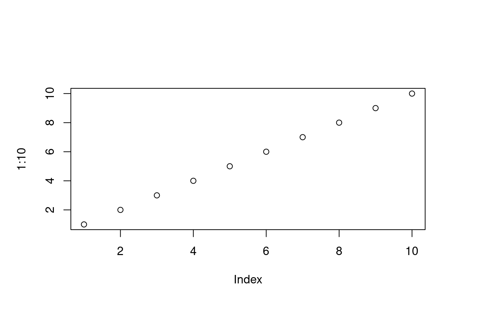
par(op)두 청크의 par(pin = c(5, 2)); plot(1:10) 은 같은 코드인데 결과가 다르다. 차이는 코드가 아니라 장치에 남은 상태에 있다. 이전 판 강의노트에서 이 일이 실제로 있었다. 학과별 모자이크 그림 청크가 par(mfrow = c(2, 3), oma = c(0, 0, 2, 0)) 을 되돌리지 않았고, 그 뒤 네 번째 R 코드 청크인 par(pin = c(5, 2)) 청크를 콘솔에서 순서대로 실행하면 이 오류가 났다. 강의노트를 렌더할 때는 청크마다 장치를 새로 열어 오류가 보이지 않았다.
고치는 방법은 바꾸기 전 값을 저장해 두었다가 되돌리는 것이다. par() 는 값을 바꿀 때 바꾸기 전 값을 돌려준다. 이 장의 코드가 op <- par(...) 로 시작해 par(op) 로 끝나는 이유다. 함수 안에서 par() 를 바꿀 때는 on.exit() 에 되돌리는 코드를 걸어 둔다. 함수가 오류로 중간에 끝나도 실행된다.
plot_hist_scatter <- function(x, y) {
op <- par(mfrow = c(1, 2))
on.exit(par(op)) # 함수가 끝날 때(오류로 끝나도) 되돌린다
hist(x, main = "", xlab = "연비(마일/갤런)", ylab = "빈도")
plot(x, y, xlab = "연비(마일/갤런)", ylab = "무게(1,000파운드)")
}
plot_hist_scatter(mtcars$mpg, mtcars$wt)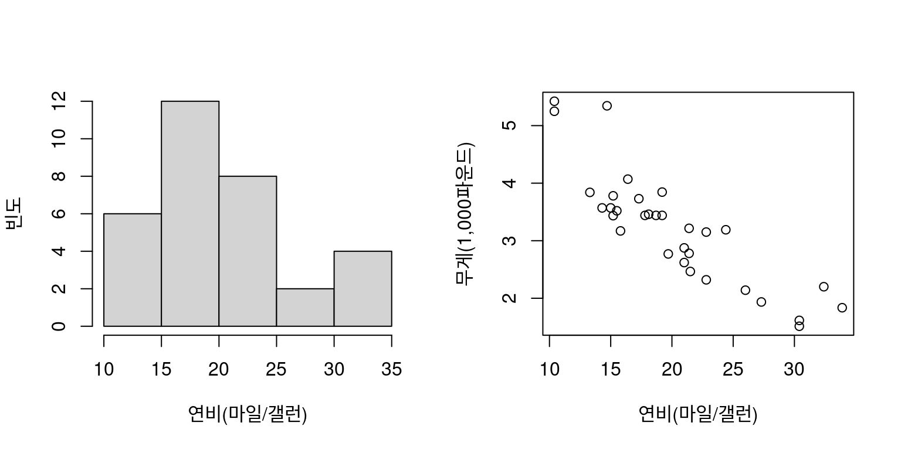
par("mfrow") # 함수가 끝난 뒤의 설정[1] 1 1함수가 끝난 뒤 mfrow 는 c(1, 1) 로 돌아와 있다. 그림 함수는 장치에 그림을 남기는 부수효과(5장, 섹션 1.2)가 목적이지만, 설정까지 남기지 않도록 끝에서 되돌린다. ggplot2 는 설정을 그림 객체 안의 테마에 담으므로 장치에 상태를 남기지 않는다(8절).
pin, fin, fig, mfg, layout(), split.screen(), new, oma 의 동작을 그림으로 해부한 내용은 부록 B(예정)에 모은다.
4 ggplot2 의 문법
ggplot2 는 Leland Wilkinson 의 그래픽 문법(grammar of graphics)을 R 에 옮긴 패키지로, 2007년 CRAN 에 처음 배포되었다. 그림 하나를 자료, 매핑, 기하 객체 같은 부품의 조합으로 적는다. 이 절은 기본 그래픽과 같은 그림을 그려 두 체계의 차이를 보고, 부품의 이름과 쓰는 법을 익힌다.
4.1 같은 그림을 두 체계로
ToothGrowth 는 기니피그 60마리에게 비타민 C 를 보충제 두 가지(supp: 오렌지 주스 OJ, 아스코르브산 VC)와 용량 세 가지(dose: 0.5, 1, 2 mg/일)로 주고 치아 세포의 길이(len)를 잰 자료다. 조합마다 길이의 평균을 구해 ggplot2 용 긴 표 tg 와 기본 그래픽용 행렬 tg_mat 을 만든다.
tg <- ToothGrowth |>
summarise(mean_len = mean(len), .by = c(supp, dose)) # 긴 표: 6행
tg_wide <- pivot_wider(tg, names_from = supp, values_from = mean_len)
tg_mat <- as.matrix(tg_wide[c("OJ", "VC")]) # 행: 용량, 열: 보충제
rownames(tg_mat) <- tg_wide$dose
tg_mat OJ VC
0.5 13.23 7.98
1 22.70 16.77
2 26.06 26.14긴 표를 넓게 펴는 pivot_wider() 는 12장 ‘긴 표를 넓은 표로’ 소절에서 다뤘다. barplot() 은 행렬의 열마다 막대 묶음을 만들므로, 용량으로 묶으려면 행렬을 전치(t())해서 넘긴다. 막대 대신 선으로 그리려면 plot() 과 lines() 를 쓴다.
힌트
예측해 보자: 아래 셋째 그림의 두 줄로 선을 그린다. VC 의 선(점선)은 그림 안에 다 보일까? x 축에는 무엇이 적힐까?
op <- par(mfrow = c(1, 3))
barplot(tg_mat, beside = TRUE, ylim = c(0, 40), legend.text = TRUE,
xlab = "보충제", ylab = "길이의 평균")
barplot(t(tg_mat), beside = TRUE, ylim = c(0, 40), legend.text = TRUE,
xlab = "용량(mg/일)", ylab = "길이의 평균")
plot(tg_mat[, "OJ"], type = "l")
lines(tg_mat[, "VC"], lty = 2)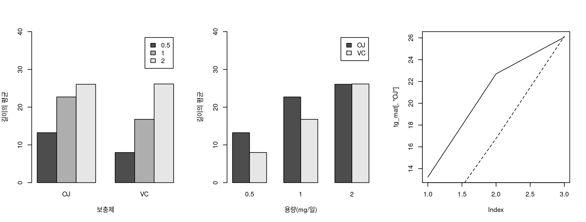
par("usr")[3:4] # 셋째 그림이 잡은 y 축 범위[1] 12.7168 26.5732par(op)
tg_mat[, "VC"] 0.5 1 2
7.98 16.77 26.14 VC 의 선은 왼쪽 일부가 잘렸다. plot() 이 OJ 의 값(13.23~26.06)의 양쪽에 범위 폭의 4% 를 더해 y 축 범위를 12.72~26.57 로 정했고 lines() 는 범위를 바꾸지 않아, VC 의 0.5 mg 평균 7.98 이 범위 밖에 있다. x 축은 용량이 아니라 행 번호(Index) 1, 2, 3 이다. ggplot2 는 같은 긴 표 tg 에서 x 와 색에 대응시킬 열만 바꾼다.
p_tg <- ggplot(tg, aes(x = factor(dose), y = mean_len, fill = supp)) +
geom_col(position = "dodge") +
labs(x = "용량(mg/일)", y = "길이의 평균", fill = "보충제")
p_tg
p_tg + aes(x = supp, fill = factor(dose)) + labs(x = "보충제", fill = "용량")
ggplot(tg, aes(x = dose, y = mean_len, colour = supp)) +
geom_line(linewidth = 1) + geom_point() +
labs(x = "용량(mg/일)", y = "길이의 평균", colour = "보충제")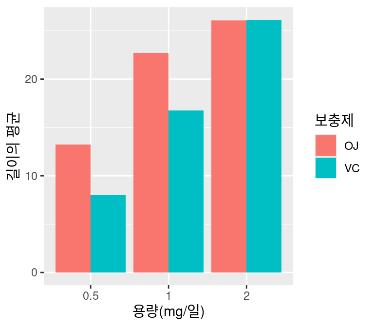
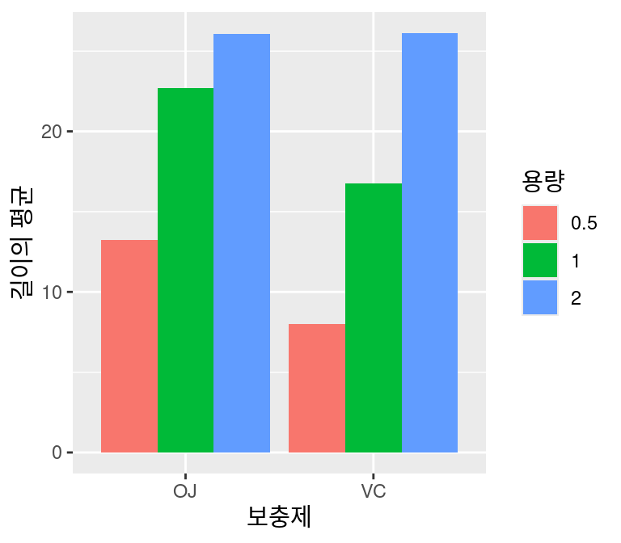
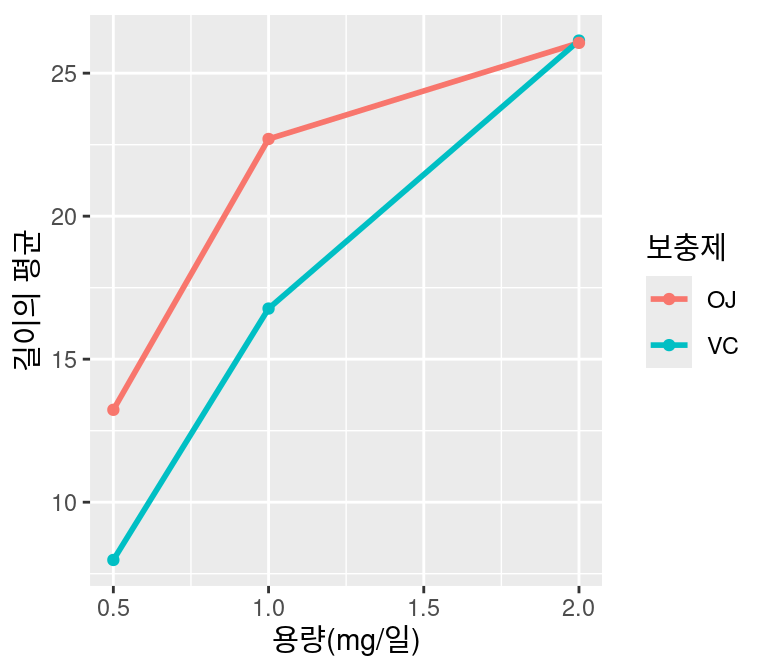
막대 묶음은 x 와 fill 의 매핑을 바꿔 정했고, 선 그림의 y 축은 두 보충제의 값을 모두 담으며 x 축은 용량의 실제 간격으로 놓인다. 기본 그래픽은 그림마다 자료의 모양과 함수를 바꿨고, ggplot2 는 표 하나에 매핑과 geom 만 바꿨다.
4.2 매핑: 열을 그림의 속성에 대응시키기
성적표에 학생마다 키, 체질량지수, 성별이 적혀 있다. 종이 위에 학생 한 명을 점 하나로 찍되, 키는 가로 위치, 체질량 지수는 세로 위치, 성별은 점의 색으로 정한다. 이렇게 자료의 열을 그림의 속성 하나에 대응시키는 일을 매핑(aesthetic mapping)이라 한다. ggplot2 는 가로·세로 위치, 색, 크기, 모양, 선 종류 같은 그림의 속성을 aesthetic 이라 부르고, aes() 안에 속성 = 열 로 적는다.

ggplot2 의 그림은 다음 부품을 + 로 더해 만든다.
| 부품 | 하는 일 | 함수 예 | 다루는 곳 |
|---|---|---|---|
| 자료(data) | 그릴 표. 한 행이 관측 하나 | ggplot(data = ) |
4절 |
| 매핑(mapping) | 열을 그림의 속성에 대응 | aes(x = , y = , colour = ) |
4절 |
| 기하 객체(geom) | 점, 선, 막대 같은 모양 | geom_point(), geom_col() |
4, 5절 |
| 통계 변환(stat) | 그리기 전에 하는 계산 | stat_count(), stat_bin() |
섹션 5 |
| 위치 조정(position) | 겹치는 모양을 놓는 자리 | position_stack(), position_dodge() |
섹션 6 |
| 척도(scale) | 값을 위치·색·크기로 바꾸는 규칙, 축과 범례 | scale_x_log10(), scale_size_area() |
섹션 7 |
| 좌표계(coord) | 위치를 평면에 놓는 방법 | coord_cartesian() |
섹션 7 |
| 패널 나누기(facet) | 집단마다 작은 그림 | facet_wrap() |
섹션 8 |
| 테마(theme) | 자료와 무관한 글꼴, 바탕, 격자 | theme() |
섹션 8 |
힌트
예측해 보자: p <- ggplot(cars, aes(x = speed, y = dist)) 만 실행하고 p 를 출력하면 무엇이 그려질까?
p <- ggplot(cars, aes(x = speed, y = dist))
p
p + geom_point() + labs(x = "속도(마일/시)", y = "제동 거리(피트)")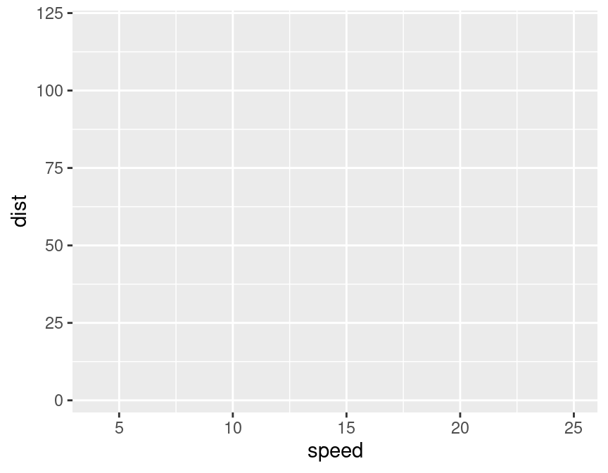
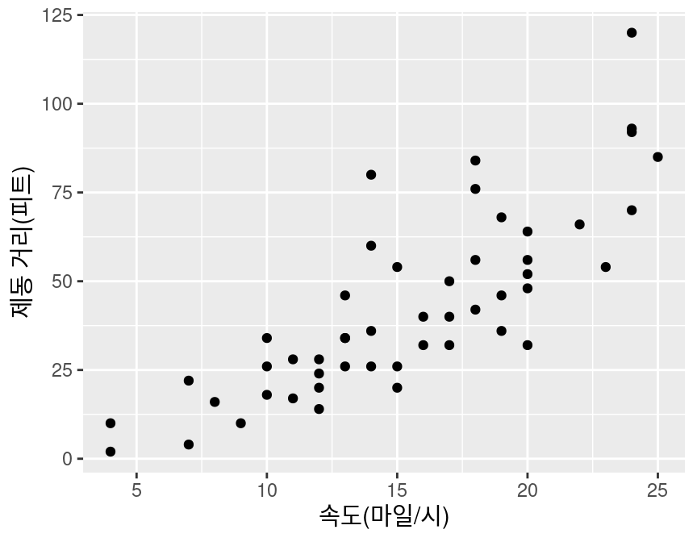
첫 그림은 축과 눈금만 있는 빈 판이다. 매핑으로 x 와 y 의 범위는 정해졌지만 점을 그릴 geom 이 없다. geom_point() 레이어를 더하자 점 50개가 그려졌다.
매핑은 ggplot() 에 둘 수도 있고 geom 안에 둘 수도 있다. 이전 판 강의노트는 레이어가 하나인 그림으로 매핑을 두는 여러 방법을 나란히 적었다(실행하지 않은 코드). 레이어가 하나면 같은 그림이지만, 둘 이상이면 차이가 난다.
p_all <- ggplot(cars, aes(x = speed, y = dist)) +
geom_point() + geom_smooth(method = "lm", formula = y ~ x)
p_one <- ggplot(cars) +
geom_point(aes(x = speed, y = dist)) + geom_smooth(method = "lm", formula = y ~ x)
p_all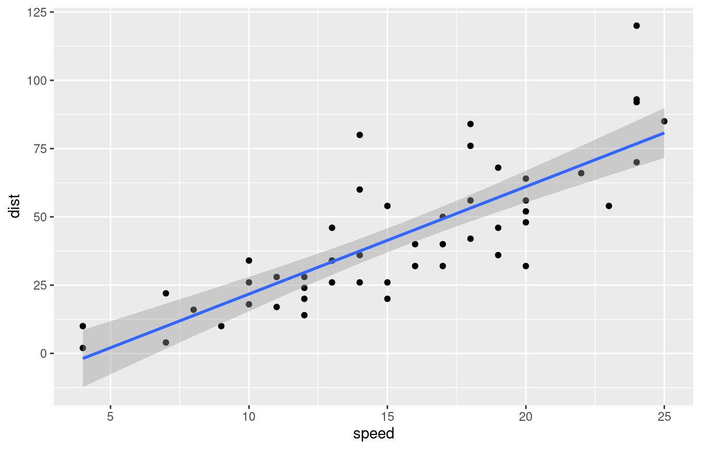
p_oneError in `geom_smooth()`:
! Problem while computing stat.
ℹ Error occurred in the 2nd layer.
Caused by error in `compute_layer()`:
! `stat_smooth()` requires the following missing
aesthetics: x and y.ggplot() 안의 매핑은 뒤에 더하는 모든 레이어가 물려받고, geom 안의 매핑은 그 레이어에만 적용된다. p_one 은 점 레이어에만 x, y 를 주었으므로 둘째 레이어(회귀선)에는 x 와 y 의 매핑이 없어 오류(`stat_smooth()` requires the following missing aesthetics: x and y)가 났다. 여러 레이어가 함께 쓰는 매핑은 ggplot() 에, 한 레이어만 쓰는 매핑은 그 geom 에 둔다.
4.3 매핑과 설정: aes() 안과 밖
aes() 안에 열 이름을 쓰면 매핑이고, geom 의 인수로 값을 직접 주면 설정(setting)이다. 매핑은 행마다 다른 값을 척도에 따라 색이나 크기로 바꾸고 범례를 만든다. 설정은 모든 행에 같은 값을 쓰고 범례를 만들지 않는다.
ggplot(mpg, aes(x = class)) + geom_bar(fill = "navy") + # 설정
labs(x = "차급", y = "차량 수")
ggplot(mpg, aes(x = class)) + geom_bar(aes(fill = fl)) + # 매핑
labs(x = "차급", y = "차량 수", fill = "연료")
ggplot(mtcars, aes(disp, mpg)) + geom_point(aes(size = hp), alpha = 0.5) +
labs(x = "배기량(세제곱인치)", y = "연비(마일/갤런)", size = "마력")
ggplot(mtcars, aes(hp, mpg)) + geom_point(aes(shape = factor(cyl)), size = 3) +
labs(x = "마력", y = "연비(마일/갤런)", shape = "실린더 수")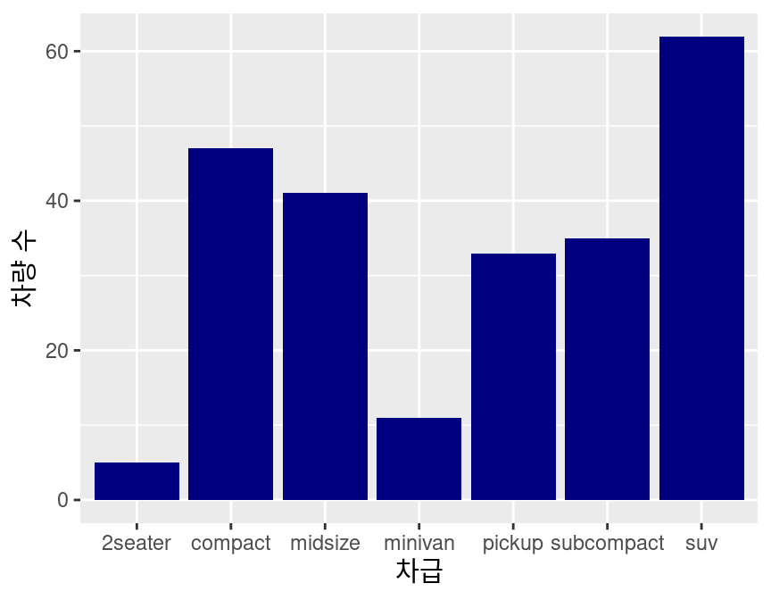
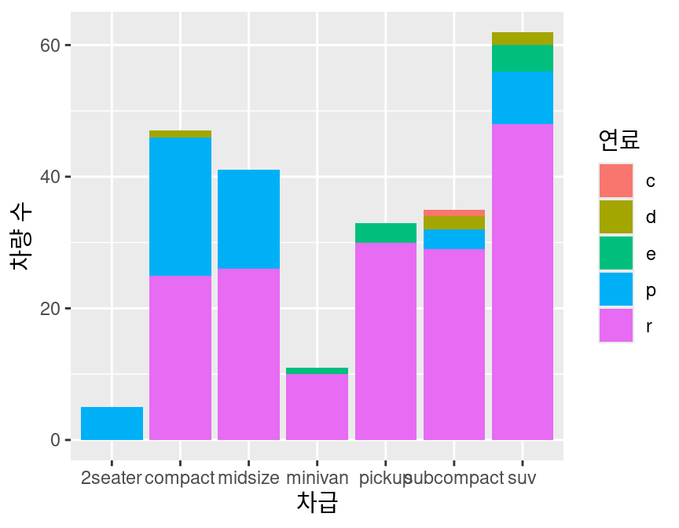
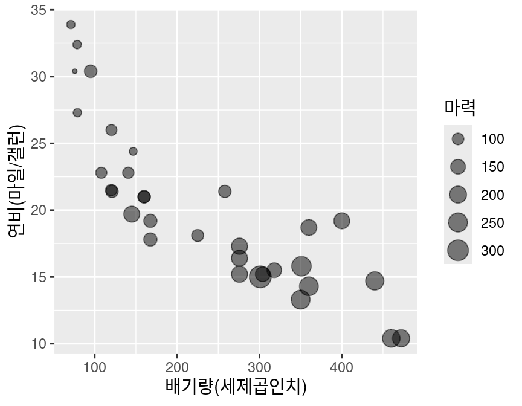
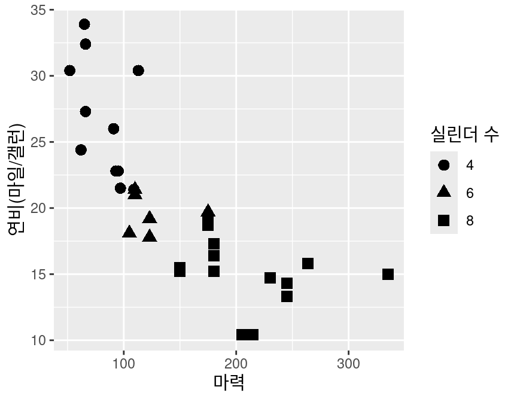
첫 그림은 모든 막대가 남색이다. 둘째 그림은 연료(fl)의 값 다섯 가지(c, d, e, p, r)가 색 다섯 가지에 대응되고 범례가 생겼다. 셋째는 크기에 연속형 변수(마력)를, 넷째는 점 모양에 범주형 변수(실린더 수)를 대응시켰다. cyl 은 숫자(4, 6, 8)로 저장되어 있어 factor() 로 범주로 바꿨다. 모양 번호는 기본 그래픽의 pch 번호와 같고(섹션 2.1), 크기가 값에 어떻게 비례하는지는 7절에서 계산한다.
힌트
예측해 보자: 아래 코드의 점은 무슨 색이고, 범례에는 무엇이 적힐까?
ggplot(mtcars, aes(wt, mpg)) + geom_point(aes(colour = "blue"))p <- ggplot(mtcars, aes(wt, mpg)) + geom_point(aes(colour = "blue"))
p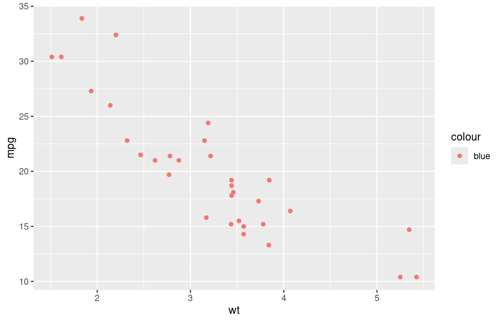
unique(layer_data(p)$colour) # 점에 실제로 쓴 색 (layer_data() 는 5절)[1] "#F8766D"점은 파란색이 아니라 붉은색(#F8766D)이고, 범례 제목은 colour, 항목은 blue 다. aes() 안의 "blue" 는 색이 아니라 모든 행의 값이 "blue" 인 변수로 다뤄진다. 값이 하나뿐인 범주형 변수가 색 척도의 첫째 색에 대응되었다. 파란 점을 원하면 설정으로 geom_point(colour = "blue") 라고 쓴다.
ggplot2 3.4.0 부터 점과 글자의 크기는 size, 선의 굵기는 linewidth 로 나뉘었다. 다음은 이전 판 강의노트가 섹션 4.1 의 선 그림을 그린 코드다(자료와 열 이름만 tg, mean_len 으로 바꿈). 그림은 출력하지 않는다.
ggplot(data = tg, aes(y = mean_len)) +
geom_line(aes(x = dose, group = supp, color = supp), size = 1)Warning: Using `size` aesthetic for lines was deprecated in ggplot2
3.4.0.
ℹ Please use `linewidth` instead.경고는 선에 size 를 쓰는 표기가 ggplot2 3.4.0 에서 폐기 예정(deprecated)이 되었으니 linewidth 를 쓰라는 뜻이다. 그림은 그려지므로 경고를 읽지 않으면 지나친다. 폐기 예정 경고는 R 세션에서 한 번만 나오므로 처음 실행한 출력을 확인한다.
4.4 선으로 잇기: group 과 순서
이 장의 4~10절이 쓸 Gapminder 표 gm 을 12장 ‘통합 사례’ 소절에서 확인한 결합 그대로 만들고, 지역 22개를 대륙 5개로 묶는 대응표를 붙인다.
gm_pop <- read_csv("dataset/ch12/gapminder-population.csv")
gm_gdp <- read_csv("dataset/ch12/gapminder-gdp.csv")
gm_lex <- read_csv("dataset/ch12/gapminder-life-expectancy.csv")
gm_regions <- read_csv("dataset/ch12/gapminder-regions.csv")
# 지역 22개 -> 대륙 5개 (지역 이름은 오타를 고친 뒤의 이름)
region_continent <- tribble(
~region, ~continent,
"Eastern Africa", "아프리카", "Middle Africa", "아프리카", "Northern Africa", "아프리카",
"Southern Africa", "아프리카", "Western Africa", "아프리카",
"Caribbean America", "아메리카", "Central America", "아메리카",
"Northern America", "아메리카", "South America", "아메리카",
"Central Asia", "아시아", "Eastern Asia", "아시아", "South-Eastern Asia", "아시아",
"Southern Asia", "아시아", "Western Asia", "아시아",
"Eastern Europe", "유럽", "Northern Europe", "유럽", "Southern Europe", "유럽",
"Western Europe", "유럽",
"Melanesia Oceania", "오세아니아", "Micronesia Oceania", "오세아니아",
"Oceania", "오세아니아", "Polynesia Oceania", "오세아니아"
) |>
mutate(continent = factor(continent,
levels = c("아프리카", "아메리카", "아시아", "유럽", "오세아니아")))
gm <- gm_pop |>
left_join(select(gm_gdp, -name), by = c("geo", "year"), relationship = "one-to-one") |>
left_join(select(gm_lex, -name), by = c("geo", "year"), relationship = "one-to-one") |>
mutate(iso = replace_values(toupper(geo), "HOS" ~ "VAT"),
gdp_per_capita = gdp_total / population) |>
inner_join(select(gm_regions, iso, region), by = "iso",
relationship = "many-to-one", unmatched = c("error", "drop")) |>
mutate(region = replace_values(region, "Northen America" ~ "Northern America")) |>
inner_join(region_continent, by = "region",
relationship = "many-to-one", unmatched = "error")
stopifnot(nrow(gm) == 4137, n_distinct(gm$geo) == 197, n_distinct(gm$continent) == 5)
count(distinct(gm, geo, continent), continent)# A tibble: 5 × 2
continent n
<fct> <int>
1 아프리카 54
2 아메리카 35
3 아시아 50
4 유럽 44
5 오세아니아 14197개 나라 × 21년 = 4,137행이 남았고, 대륙별 나라 수는 54, 35, 50, 44, 14 다. 1인당 GDP 는 구매력평가(PPP) 기준 2011년 불변 국제달러다. 지역 이름의 마지막 낱말을 대륙으로 쓰는 정규식(gsub("(.+\\s)", "", region))도 이 자료에서는 같은 결과를 낸다. 그러나 UN 표준 이름(Melanesia, Caribbean)이 들어오면 오류 없이 틀린 대륙을 내고, 대응표는 unmatched = "error" 에서 멈춘다.
힌트
예측해 보자: 아시아 50개 나라의 2000~2020년 기대수명을 아래 코드로 그리면 어떤 모양일까?
asia <- filter(gm, continent == "아시아")
ggplot(asia, aes(year, life_expectancy)) + geom_line()asia <- filter(gm, continent == "아시아")
ggplot(asia, aes(year, life_expectancy)) + geom_line() +
labs(x = "연도", y = "기대수명(년)")
ggplot(asia, aes(year, life_expectancy)) +
geom_line(aes(group = name), alpha = 0.3) +
geom_smooth(aes(group = 1), se = FALSE) +
labs(x = "연도", y = "기대수명(년)")`geom_smooth()` using method = 'gam' and formula = 'y ~
s(x, bs = "cs")'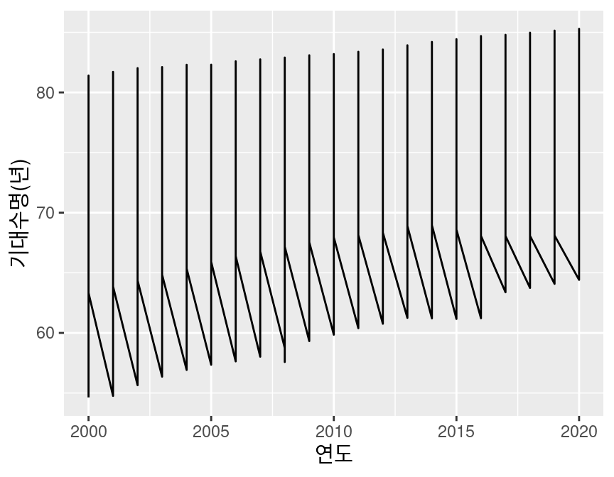
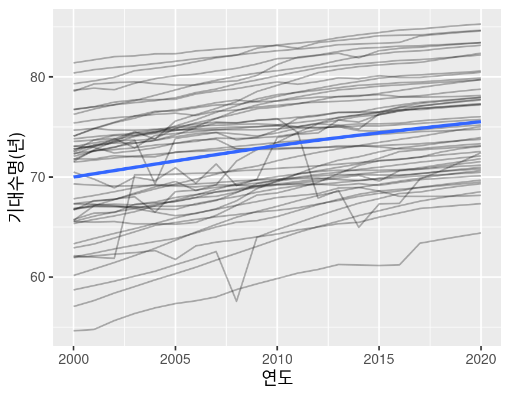
왼쪽은 톱니 모양이다. geom_line() 이 50개 나라 × 21년 = 1,050행을 연도 순서로 정렬해 선 하나로 이어, 같은 해의 값 50개를 위아래로 오갔다. 나라마다 선을 나누려면 group 에 나라 이름을 준다(오른쪽). 색이나 선 모양에 범주형 변수를 대응시키면 그 변수가 집단이 되지만, 색을 쓰지 않을 때는 group 을 직접 준다.
오른쪽의 파란 곡선(aes(group = 1))은 나라 50개를 한 집단으로 묶어 적합했고, 관측이 1,000개 이상이라 메시지대로 gam 을 썼다(섹션 5.4). 이 곡선은 인구와 관계없이 나라 50개를 같은 무게로 합친 것이다. 이전 판 강의노트는 이것을 ’아시아 국가의 평균 추세선’이라 불렀지만 인구 가중 평균이 아니다. 12장 ’통합 사례’의 단순 평균 대 가중 평균과 같은 구조이고, 9절에서 다시 다룬다.
힌트
예측해 보자: 한국, 중국, 일본, 인도, 대만, 싱가포르의 1인당 GDP(x)와 기대수명(y)을 2000~2020년 순서로 잇고 싶다. geom_line() 과 geom_path() 는 같은 그림을 그릴까?
six <- filter(gm, geo %in% c("kor", "chn", "jpn", "ind", "twn", "sgp")) |>
arrange(name, year)
p_six <- ggplot(six, aes(gdp_per_capita, life_expectancy, colour = name)) +
labs(x = "1인당 GDP(PPP, 2011년 불변 국제달러)", y = "기대수명(년)", colour = "나라")
# 두 그림을 나란히 붙이는 | 와 범례 합치기는 patchwork 의 기능이다(8절)
((p_six + geom_line() + labs(title = "geom_line(): x 순서")) |
(p_six + geom_path() + labs(title = "geom_path(): 행 순서(연도)"))) +
plot_layout(guides = "collect")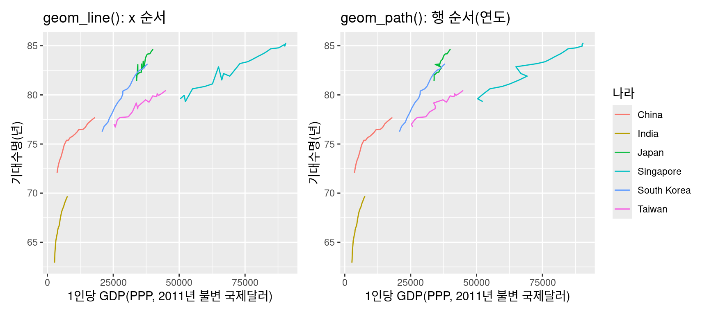
# 1인당 GDP 가 전년보다 줄어든 해
six |>
filter(gdp_per_capita < lag(gdp_per_capita), .by = name) |>
select(name, year)# A tibble: 9 × 2
name year
<chr> <dbl>
1 Japan 2002
2 Japan 2008
3 Japan 2009
4 Singapore 2001
5 Singapore 2008
6 Singapore 2009
7 Singapore 2019
8 Taiwan 2001
9 Taiwan 2009geom_line() 은 x(1인당 GDP)가 커지는 순서로, geom_path() 는 행 순서(연도 순)로 잇는다. 1인당 GDP 가 전년보다 줄어든 해가 있는 일본(2002, 2008, 2009년), 싱가포르(2001, 2008, 2009, 2019년), 대만(2001, 2009년)에서 두 그림이 갈린다. geom_line() 은 그 해를 x 축의 다른 자리에 끼워 넣어 시간 순서가 사라진다. 시간 순서를 보이려면 연도순으로 정렬하고 geom_path() 를 쓴다.
기본 그래픽의 abline()(섹션 3.1)에 해당하는 레이어는 geom_abline(intercept = , slope = ), geom_hline(yintercept = ), geom_vline(xintercept = ) 이다.
5 geom 과 stat: 그림이 계산한 값
출석부 한 줄이 학생 한 명일 때 반별 인원 막대의 높이는 출석부에 적힌 값이 아니라 반마다 센 값이다. 반별 평균 점수가 적힌 표로 그린 막대는 적힌 값을 그대로 높이로 쓴다. 두 막대는 그림만 보아서는 구별되지 않는다. ggplot2 는 이 차이를 레이어의 두 부분, geom(그리는 모양)과 stat(그리기 전에 하는 계산)으로 나눈다. geom_point() 는 값을 그대로 쓰고, geom_bar() 는 개수를, geom_histogram() 은 구간마다 개수를, geom_boxplot() 은 사분위수를 계산한다.
layer_data(p, i) 는 그림 p 의 i 번째 레이어가 그리려고 계산한 표를 돌려준다(i 의 기본값 1). airquality 의 기온과 오존 농도로 산점도를 그려 보자. 오존(Ozone)은 153일 중 37일이 결측이다.
p <- ggplot(airquality, aes(Temp, Ozone)) + geom_point() +
labs(x = "일 최고 기온(화씨)", y = "오존 농도(ppb)")
pWarning: Removed 37 rows containing missing values or values outside
the scale range (`geom_point()`).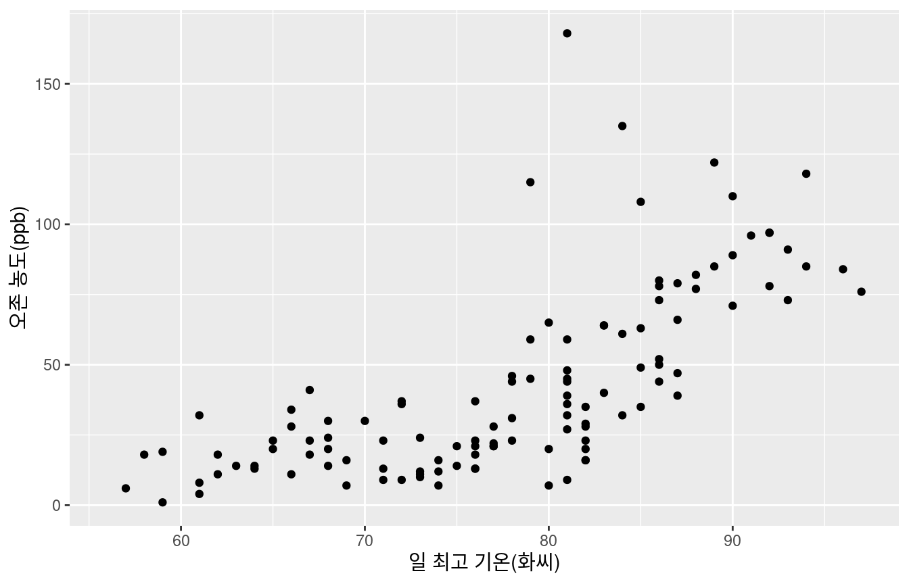
d <- layer_data(p)
c(행 = nrow(d), y결측 = sum(is.na(d$y)), 그려진점 = sum(complete.cases(d[c("x", "y")]))) 행 y결측 그려진점
153 37 116 그릴 때 경고 Removed 37 rows containing missing values or values outside the scale range 가 나왔고 점은 116개가 그려졌다. 그런데 layer_data() 는 153행이고 y 가 결측인 37행이 그대로 있다. 결측이거나 척도 범위 밖인 행은 그리는 단계에서 빠지므로, 그려진 점의 수는 x 와 y 가 모두 있는 행으로 센다. 통계를 계산하는 레이어(stat_boxplot() 등)는 그런 행을 계산 전에 빼므로 layer_data() 에는 남은 행으로 계산한 결과만 있다. 7절에서 축 범위를 바꿀 때 다시 본다.
5.1 개수를 세는 막대와 값을 그리는 막대
절 도입의 출석부처럼 mpg 도 한 행이 자동차 한 대다. 차급별 막대를 그리려면 먼저 차급마다 세어야 한다.
힌트
예측해 보자: ggplot(mpg, aes(x = class)) + geom_bar() 에는 y 를 주지 않았다. 막대 높이는 무엇일까?
p <- ggplot(mpg, aes(x = class)) + geom_bar() + labs(x = "차급", y = "차량 수")
p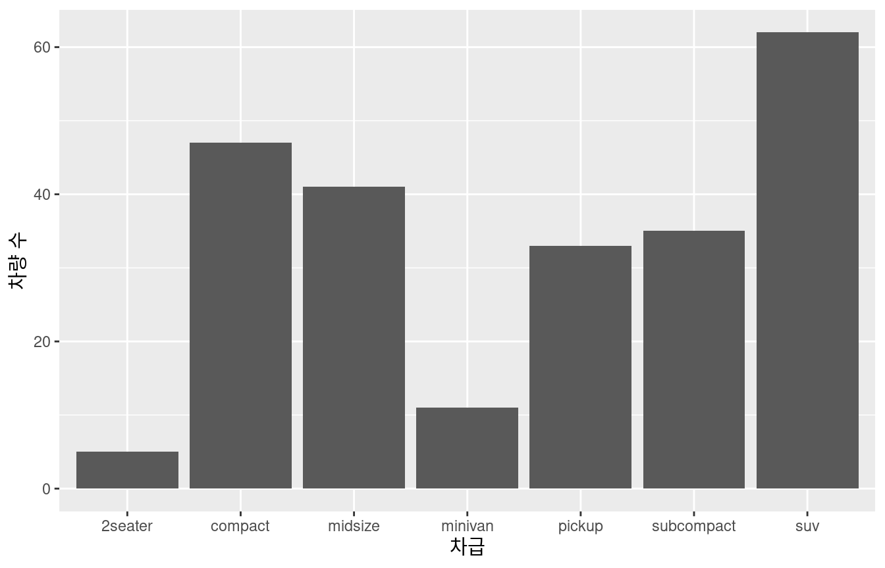
layer_data(p)$count[1] 5 47 41 11 33 35 62table(mpg$class)
2seater compact midsize minivan pickup
5 47 41 11 33
subcompact suv
35 62 막대 높이는 차급마다 센 차량 수다. stat_count() 가 센 count 열이 table() 의 결과(5, 47, 41, 11, 33, 35, 62)와 같다.
자료에 이미 높이가 있으면 geom_col() 을 쓴다. 값을 그대로 쓰는 stat_identity() 가 붙어 있어 geom_bar(stat = "identity") 와 같다. 가로 막대는 범주를 y 에 대응시키면 되고, 이전 판처럼 coord_flip() 으로 축을 뒤집지 않아도 된다. 막대를 값 순서로 놓으려면 범주의 수준 순서를 reorder() 로 바꾼다. 2015년 지역 22곳의 1인당 GDP 중앙값을 요약해 값으로 그린다.
region_median <- gm |>
filter(year == 2015) |>
summarise(median = median(gdp_per_capita, na.rm = TRUE), .by = region)
ggplot(region_median, aes(x = median, y = reorder(region, median))) + geom_col() +
labs(x = "2015년 1인당 GDP 중앙값(PPP, 2011년 불변 국제달러)", y = NULL)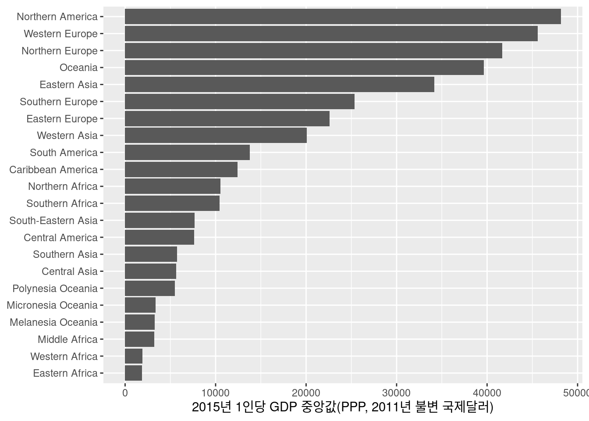
arrange(region_median, median) |> slice(c(1, n()))# A tibble: 2 × 2
region median
<chr> <dbl>
1 Eastern Africa 1842.
2 Northern America 48147.sum(is.na(filter(gm, year == 2015)$gdp_per_capita)) # GDP 가 없는 나라[1] 2reorder(region, median) 은 중앙값이 작은 지역부터 수준을 매긴다. 가장 낮은 동아프리카(1,842)가 맨 아래, 가장 높은 북아메리카(48,147)가 맨 위에 놓였다. 2015년에 GDP 가 없는 2개 나라는 na.rm = TRUE 로 중앙값 계산에서 뺐다.
5.2 히스토그램과 밀도 곡선
힌트
예측해 보자: geom_histogram() 은 stat_bin() 으로 구간마다 센다. diamonds 는 다이아몬드 53,940개의 무게(carat)와 가격 등을 담은 자료다. 캐럿의 히스토그램을 기본값으로 그린 것과 구간 폭을 0.01 캐럿으로 줄여(binwidth = 0.01) 그린 것을 비교한다. 0.3, 0.5, 0.7, 1, 1.5, 2 캐럿 근처에 무엇이 보일까?
p_default <- ggplot(diamonds, aes(carat)) + geom_histogram() +
labs(title = "기본값", x = "캐럿", y = "개수")
p_fine <- ggplot(diamonds, aes(carat)) + geom_histogram(binwidth = 0.01) +
labs(title = "binwidth = 0.01", x = "캐럿", y = "개수")
p_default | p_fine`stat_bin()` using `bins = 30`. Pick better value
`binwidth`.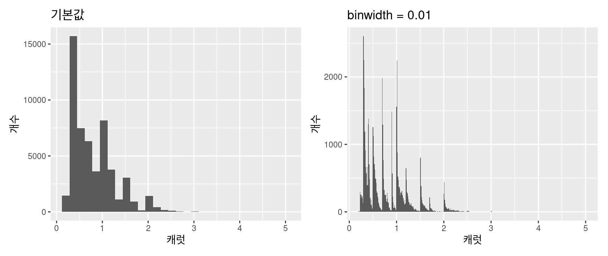
layer_data(p_fine) |>
filter(round(x, 2) %in% c(0.29, 0.3, 0.49, 0.5, 0.69, 0.7, 0.99, 1, 1.49, 1.5, 1.99, 2)) |>
select(x, count) x count
1 0.29 130
2 0.30 2604
3 0.49 45
4 0.50 1258
5 0.69 26
6 0.70 1981
7 0.99 23
8 1.00 1558
9 1.49 11
10 1.50 793
11 1.99 3
12 2.00 265기본값으로 그리면 메시지 `stat_bin()` using `bins = 30`. Pick better value `binwidth`. 가 나온다. 구간 30개를 썼으니 binwidth 로 더 나은 값을 고르라는 뜻이고, 오류도 경고도 아니라서 지나치기 쉽다. 폭을 0.01 로 줄이자 0.3, 0.5, 0.7, 1, 1.5, 2 캐럿에 뾰족한 막대가 섰다. 0.99캐럿은 23개, 1캐럿은 1,558개이고, 여섯 값 모두 바로 아래 0.01캐럿 구간보다 20~88배 많다. 무게가 이 값들에 몰려 있다는 것이 30구간에서는 보이지 않았다. 구간 수로 정하려면 bins = 150 처럼 준다. 변수를 y 에 대응시키면(aes(y = carat)) 가로 히스토그램이 된다.
y 축을 개수 대신 밀도로 바꾸려면 stat 이 계산한 열을 after_stat() 으로 가리킨다. stat_bin() 은 count 말고도 막대 넓이의 합이 1 이 되도록 나눈 density 를 계산해 둔다. 밀도 히스토그램 위에 밀도 곡선(geom_density())을 겹쳐 본다. adjust 는 곡선을 그리는 대역폭의 배수로, 클수록 곡선이 매끄럽다.
p_den <- ggplot(iris, aes(Petal.Length)) +
geom_histogram(aes(y = after_stat(density)), bins = 30, fill = "gray80") +
geom_density(adjust = 0.5, linetype = "dotted") +
geom_density(adjust = 1) +
geom_density(adjust = 2, linetype = "dashed") +
labs(x = "꽃잎 길이(cm)", y = "밀도")
p_den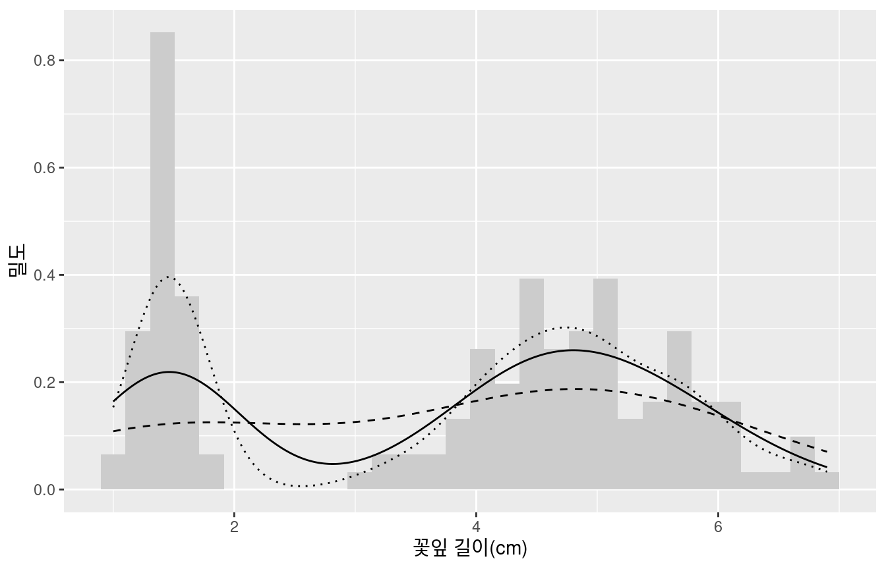
d <- layer_data(p_den)
sum(d$density * (d$xmax - d$xmin)) # 막대 넓이의 합[1] 1막대 넓이의 합이 1 이다. 막대에는 2cm 아래와 4~5cm 근처에 봉우리가 둘 있다. 점선(adjust = 0.5)과 실선(1)은 두 봉우리를 보이지만, 긴 점선(adjust = 2)은 1~3cm 에서 높이가 0.11~0.13 사이인 평평한 선이 되어 왼쪽 봉우리가 보이지 않는다. 대역폭이 크면 곡선이 매끄러워지는 대신 봉우리가 뭉개지므로, 밀도 곡선은 히스토그램과 겹쳐 그려 대조한다.
이전 판 강의노트는 after_stat(density) 대신 ..density.. 라고 썼다. 다음은 이전 판 노트의 코드에서 제목, 테두리 색, 주석을 뺀 것이다. 그림은 6절에서 다시 보므로 경고만 본다.
p0 <- ggplot(data = iris, aes(x = Petal.Length))
p0 + geom_histogram(aes(fill = Species, y = ..density..), alpha = 0.2, bins = 20)Warning: The dot-dot notation (`..density..`) was deprecated in
ggplot2 3.4.0.
ℹ Please use `after_stat(density)` instead.경고는 ..density.. 표기(dot-dot notation)가 ggplot2 3.4.0 에서 폐기 예정이 되었으니 after_stat(density) 를 쓰라는 뜻이다. 이 그림에는 표기 말고도 문제가 하나 더 있다. 6절에서 찾는다.
5.3 상자그림, 바이올린, 관측값 점
힌트
예측해 보자: 기본 그래픽의 상자그림은 힌지(fivenum(), 섹션 2.3)로, ggplot2 는 quantile() 의 기본 방법으로 상자를 그린다. mpg 의 suv 62대 가운데 시내 연비(cty)가 19 인 차가 한 대 있다. 기본 그래픽 boxplot() 과 ggplot2 geom_boxplot() 으로 상자그림을 그리면 이 차는 두 그림에서 같은 곳(수염 끝 또는 점)에 그려질까?
suv <- filter(mpg, class == "suv")
boxplot(suv$cty, main = "boxplot()", ylab = "시내 연비(마일/갤런)")
ggplot(suv, aes(x = "", y = cty)) + geom_boxplot() +
labs(title = "geom_boxplot()", x = NULL, y = "시내 연비(마일/갤런)")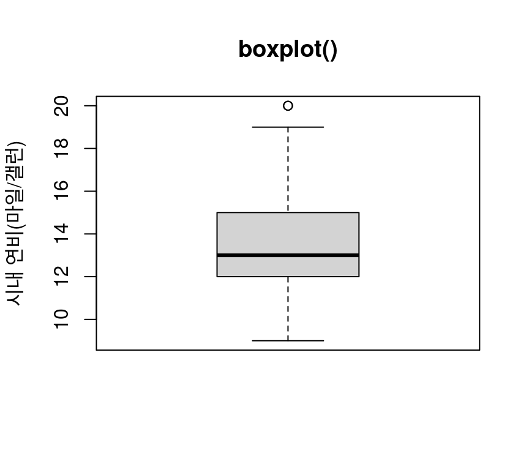
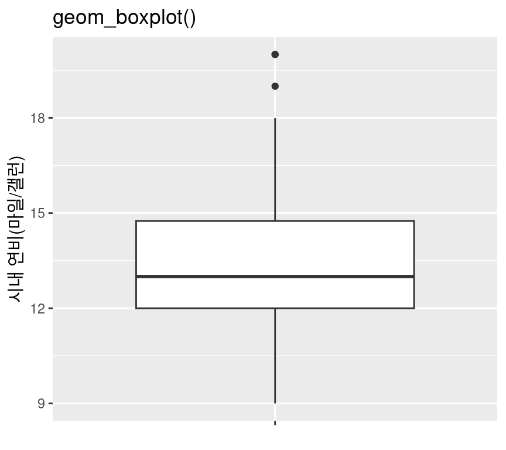
boxplot.stats(suv$cty)$stats # 기본 그래픽: 아래 수염 끝, 힌지, 중앙값, 힌지, 위 수염 끝[1] 9 12 13 15 19boxplot.stats(suv$cty)$out[1] 20 20ld <- layer_data(ggplot(suv, aes(y = cty)) + geom_boxplot())
ld[c("ymin", "lower", "middle", "upper", "ymax")] ymin lower middle upper ymax
1 9 12 13 14.75 18ld$outliers[[1]][1] 20 19 2019 는 기본 그래픽에서는 위 수염의 끝이고 ggplot2 에서는 수염 밖의 점이다. 기본 그래픽은 위 힌지 15, 수염 한계 15 + 1.5 × (15 − 12) = 19.5 로 19 가 한계 안이다. ggplot2 는 3사분위수 14.75, 한계 14.75 + 1.5 × (14.75 − 12) = 18.875 로 19 가 한계 밖이고 위 수염 끝은 18 이다. 상자그림의 점을 근거로 말할 때는 어느 함수로 그렸는지 함께 적는다.
힌트
예측해 보자: 봉우리가 둘인 자료, 정규분포 자료, 균일분포 자료의 상자그림은 서로 구별될까?
# 이전 판 강의노트의 모의 자료
set.seed(20200522)
sim <- bind_rows(
tibble(dist = "봉우리 둘", value = c(rnorm(200, 2, 1), rnorm(300, -2, 1))),
tibble(dist = "정규", value = rnorm(200, 4, 1)),
tibble(dist = "균일", value = runif(200, -2, 2))
)
ggplot(sim, aes(dist, value)) + geom_boxplot() + labs(x = "분포", y = "값")
ggplot(sim, aes(dist, value)) + geom_violin() + labs(x = "분포", y = "값")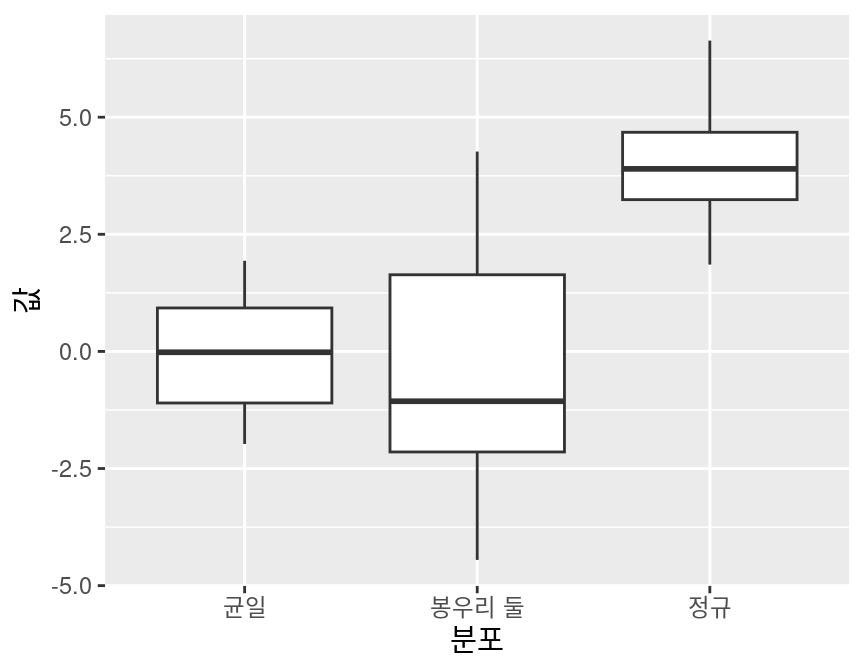
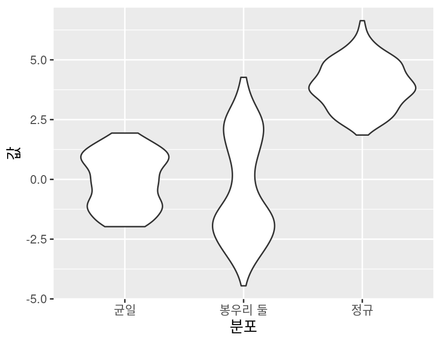
상자그림에서 봉우리가 둘인 자료는 상자가 다른 두 자료보다 길 뿐, 상자와 수염으로 된 구성은 같아 봉우리가 둘이라는 것이 드러나지 않는다. 바이올린 그림(violin plot)은 밀도 곡선을 좌우 대칭으로 그려 두 봉우리가 보인다. 상자그림은 다섯 값만 그리므로 봉우리의 수를 보이지 못한다.
상자그림은 상자마다 관측이 몇 개인지 보여 주지 않는다. 상자 위에 관측값을 점으로 함께 찍으면 차급마다 관측 수와 값이 몰린 곳이 보인다. 같은 값의 점이 겹치지 않도록 position_jitter() 로 가로로만 흩뜨리고, 시드를 고정해 렌더할 때마다 같은 그림이 나오게 한다.
ggplot(mpg, aes(x = reorder(class, cty, median), y = cty)) +
geom_boxplot(outlier.shape = NA) +
geom_point(position = position_jitter(width = 0.2, height = 0, seed = 1), alpha = 0.4) +
labs(x = "차급(시내 연비 중앙값 순)", y = "시내 연비(마일/갤런)")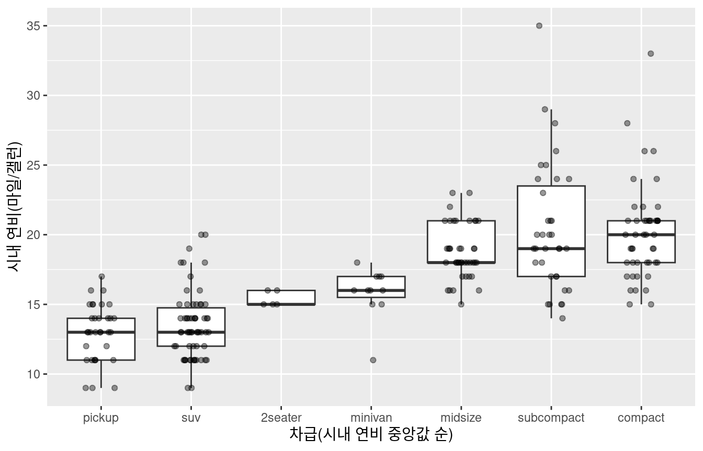
점 레이어가 모든 관측값을 찍으므로 outlier.shape = NA 로 이상점이 두 번 그려지지 않게 했다. reorder(class, cty, median) 은 차급을 시내 연비 중앙값 순으로 놓고, height = 0 은 세로로 흩뜨리지 않아 연비 값을 바꾸지 않는다.
5.4 평활선: geom_smooth() 의 기본 방법
힌트
예측해 보자: geom_smooth() 는 x 와 y 의 관계를 곡선으로 요약하고, 방법(method)을 주지 않으면 스스로 고른다. 같은 geom_smooth() 를 mpg(234행)와 diamonds(53,940행)에 쓰면 같은 방법으로 적합할까?
p_mpg <- ggplot(mpg, aes(displ, hwy)) + geom_point(alpha = 0.3) +
labs(x = "배기량(리터)", y = "고속도로 연비(마일/갤런)")
p_dia <- ggplot(diamonds, aes(carat, price)) + # 점 53,940개는 그리지 않는다
labs(x = "캐럿", y = "가격(달러)")
p_mpg + geom_smooth()`geom_smooth()` using method = 'loess' and formula = 'y ~
x'p_mpg + geom_smooth(method = "lm")`geom_smooth()` using formula = 'y ~ x'p_dia + geom_smooth()`geom_smooth()` using method = 'gam' and formula = 'y ~
s(x, bs = "cs")'p_dia + geom_smooth(method = "lm")`geom_smooth()` using formula = 'y ~ x'메시지가 고른 방법을 알려 준다. mpg 는 method = 'loess'(국소 회귀), diamonds 는 method = 'gam'(일반화가법모형, generalized additive model)이다. 도움말(?geom_smooth)에 따르면 가장 큰 집단의 관측이 1,000개 미만이면 loess, 이상이면 gam 이 기본값이다. method = "lm" 을 주면 둘 다 직선(단순 선형회귀)이 된다. 회색 띠(se = TRUE, 기본값)는 적합한 평균 곡선의 95% 신뢰대이고, 개별 관측값이 들어갈 범위가 아니다.
5.5 평균과 오차 막대
오차 막대(error bar)는 평균 같은 대표값에 범위를 붙인다. geom_errorbar() 에 정해진 범위는 없고, 넘겨준 ymin, ymax 를 그대로 그린다. 그래서 범위가 표준오차인지 신뢰구간인지는 그린 사람이 축 이름이나 캡션에 적어야 한다. warpbreaks 의 평균 ± 표준오차를 막대 위에 그린다.
break_summ <- warpbreaks |>
summarise(N = n(), mean = mean(breaks), sem = sd(breaks) / sqrt(N),
.by = c(wool, tension))
p_bar <- ggplot(break_summ, aes(x = tension, y = mean, fill = wool)) +
geom_col(position = position_dodge(0.9)) +
geom_errorbar(aes(ymin = mean - sem, ymax = mean + sem),
position = position_dodge(0.9), width = 0.1) +
labs(x = "장력", y = "끊어진 횟수(평균 ± 표준오차)", fill = "양모")
p_bar# 요약표의 첫 행(양모 A, 장력 L)과 둘째 레이어(오차 막대)가 그린 값
cbind(head(break_summ, 1), head(layer_data(p_bar, 2)[c("x", "ymin", "ymax")], 1)) wool tension N mean sem x ymin ymax
1 A L 9 44.55556 6.032576 0.775 38.52298 50.58813양모 A·장력 L 의 평균 44.56, 표준오차 6.03 이 오차 막대의 아래 끝 38.52, 위 끝 50.59 로 그려졌다. 막대와 오차 막대에 같은 position_dodge(0.9) 를 주어 둘 다 x = 0.775(장력 L 의 왼쪽 자리)에 놓였다.
힌트
예측해 보자: diamonds 의 컷(cut, 5가지)과 색(color, 7가지) 조합마다 캐럿 평균과 95% 신뢰구간을 점, 선, 오차 막대로 그린다. 오차 막대에만 position_dodge(0.8) 을 주고 점과 선에는 주지 않으면 점은 어디에 놓일까?
carat_summ <- diamonds |>
summarise(N = n(), mean = mean(carat), sd = sd(carat), .by = c(cut, color)) |>
mutate(lcl = mean - qt(0.975, N - 1) * sd / sqrt(N), # 95% 신뢰구간(t 분포)
ucl = mean + qt(0.975, N - 1) * sd / sqrt(N))
p_err <- ggplot(carat_summ, aes(x = cut, y = mean, colour = color)) +
labs(x = "컷", y = "캐럿 평균(95% 신뢰구간)", colour = "색")
p_bad <- p_err + # 오차 막대에만 위치 조정
geom_errorbar(aes(ymin = lcl, ymax = ucl), width = 0.1, position = position_dodge(0.8)) +
geom_line(aes(group = color)) +
geom_point(size = 2)
dodge <- position_dodge(0.8)
p_good <- p_err + # 세 레이어에 같은 위치 조정
geom_errorbar(aes(ymin = lcl, ymax = ucl), width = 0.1, position = dodge) +
geom_line(aes(group = color), position = dodge) +
geom_point(size = 2, position = dodge)
p_bad / p_good + plot_layout(guides = "collect")sapply(1:3, \(i) n_distinct(layer_data(p_bad, i)$x)) # 오차 막대, 선, 점의 x 위치 수[1] 35 5 5위 그림에서 오차 막대는 컷마다 색 7개만큼 옆으로 비켜 35개 위치에 놓였는데, 선과 점은 컷의 가운데 5개 위치에 모였다. 점이 자기 오차 막대 위에 있지 않아 어느 구간이 어느 평균의 것인지 읽을 수 없다. 아래 그림처럼 겹치는 레이어에는 모두 같은 위치 조정을 준다. 신뢰구간 여러 개를 그려 무엇을 포함하는지 확인하는 일은 9장 ‘신뢰구간의 의미’ 소절에서 다뤘다.
6 위치 조정: 쌓기, 나란히, 겹치기
반별 출석 인원을 남녀로 나눠 한 막대에 쌓으면 꼭대기는 반 전체 인원이다. 남녀 막대를 옆에 나란히 놓으면 막대마다 꼭대기가 그 성별의 인원이고, 같은 자리에 반투명하게 겹치면 보이는 꼭대기는 둘 중 큰 쪽이다. 같은 개수를 어디에 놓을지 정하는 이 단계를 위치 조정(position adjustment)이라 한다. 위치 조정은 stat 이 통계량을 계산한 뒤 그림 요소를 놓을 자리를 정한다.
6.1 쌓기와 나란히
diamonds 에서는 색이 반, 컷이 성별 자리에 온다. 겹치기는 섹션 6.2 에서 히스토그램으로 본다.
힌트
예측해 보자: diamonds 의 색별 막대를 컷으로 나누어 칠하면 꼭대기는 어떤 개수일까? position 을 생략한 경우, "dodge2", "fill" 인 경우의 답을 먼저 적어 보자.
# 색별 개수를 컷으로 나누어 세 가지 위치로 그린다.
p_stack <- ggplot(diamonds, aes(color, fill = cut)) +
geom_bar() + labs(x = "색", y = "개수", fill = "컷")
p_dodge <- ggplot(diamonds, aes(color, fill = cut)) +
geom_bar(position = "dodge2") + labs(x = "색", y = "개수", fill = "컷")
p_fill <- ggplot(diamonds, aes(color, fill = cut)) +
geom_bar(position = "fill") + labs(x = "색", y = "비율", fill = "컷")
(p_stack + labs(title = "position 생략(stack)")) /
(p_dodge + labs(title = "position = \"dodge2\"")) /
(p_fill + labs(title = "position = \"fill\"")) +
plot_layout(guides = "collect")layer_data(p_stack) |>
summarise(top = max(ymax), .by = x) x top
1 1 6775
2 2 9797
3 3 9542
4 4 11292
5 5 8304
6 6 5422
7 7 2808table(diamonds$color)
D E F G H I J
6775 9797 9542 11292 8304 5422 2808 layer_data(p_fill) |>
summarise(top = max(ymax), .by = x) x top
1 1 1
2 2 1
3 3 1
4 4 1
5 5 1
6 6 1
7 7 1쌓은 막대의 꼭대기는 table() 의 색별 전체 개수와 같다. fill 은 같은 x 위치의 합계를 분모로 나누므로 꼭대기가 모두 1이다. 색마다 표본 수가 다르다는 정보는 비율 막대만으로 알 수 없다.
| 위치 | 각 조각의 높이 | 막대 꼭대기 |
|---|---|---|
기본 stack |
색·컷 조합의 개수 | 그 색의 전체 개수 |
dodge2 |
색·컷 조합의 개수 | 해당 조합의 개수 |
fill |
그 색 안에서 컷이 차지하는 비율 | 1 |
6.2 히스토그램의 기본 위치
투명하게 칠하면 뒤의 막대가 보이지만, 투명도는 막대를 놓는 위치를 바꾸지 않는다.
힌트
예측해 보자: 세 종의 꽃잎 길이를 fill = Species, alpha = 0.2, bins = 20 으로 그리면 막대는 겹칠까, 쌓일까? y 를 after_stat(density) 로 바꾸면 막대 넓이의 합은 얼마일까?
# 이전 판의 집단별 히스토그램을 현행 계산 변수 표기로 그린다.
p_iris_count <- ggplot(iris, aes(Petal.Length, fill = Species)) +
geom_histogram(bins = 20, alpha = 0.2, colour = "white") +
labs(x = "꽃잎 길이(cm)", y = "개수", fill = "종")
p_iris_density <- ggplot(iris, aes(Petal.Length, fill = Species)) +
geom_histogram(aes(y = after_stat(density)), bins = 20,
alpha = 0.2, colour = "white") +
labs(x = "꽃잎 길이(cm)", y = "밀도", fill = "종")
p_iris_count / p_iris_densityiris_bins <- layer_data(p_iris_density)
c(올라간막대 = sum(iris_bins$ymin > 0 & iris_bins$count > 0),
넓이합 = sum((iris_bins$ymax - iris_bins$ymin) *
(iris_bins$xmax - iris_bins$xmin)))올라간막대 넓이합
3 3 빈 구간을 제외하고 바닥이 0보다 높은 막대는 3개이다. 종마다 밀도의 넓이가 1이어서 세 종을 쌓은 넓이의 합은 3이다. 이것은 전체 자료를 한 집단으로 계산한 확률밀도가 아니다. 세 종의 꽃잎 길이가 겹치는 구간이 적어 다른 종의 막대 위에 올라간 막대가 이 3개뿐이므로, 그림만 보면 쌓였다는 것을 놓치기 쉽다. 이전 판의 제목에는 “Overlaying multiple histograms”라고 적혀 있었지만 position 을 생략한 히스토그램은 쌓였다. 섹션 5.2 에서 경고만 읽고 넘긴 이전 판 그림에 ..density.. 표기 말고 남아 있던 문제가 이것이다.
# 겹치는 판과 종별로 나누는 판을 비교한다.
p_iris_overlay <- ggplot(iris, aes(Petal.Length, fill = Species)) +
geom_histogram(aes(y = after_stat(density)), bins = 20,
position = "identity", alpha = 0.3, colour = "white") +
geom_density(aes(colour = Species), fill = NA) +
labs(x = "꽃잎 길이(cm)", y = "밀도", fill = "종", colour = "종")
p_iris_overlayp_iris_count + facet_wrap(~ Species, ncol = 1)sum(layer_data(p_iris_overlay)$ymin > 0)[1] 0identity 는 각 막대를 바닥 0에서 그리므로 밀도 곡선도 같은 기준에서 읽을 수 있다. facet_wrap() 은 종을 별도 패널에 놓아 막대가 서로 가리지 않게 한다.
6.3 겹친 점: 투명도와 흩뜨리기
힌트
예측해 보자: mpg 의 실린더 수와 시내 연비를 점으로 그리면 자료의 행 수만큼 점을 구별할 수 있을까? 실행 전에 같은 좌표를 가진 자동차가 있을지 생각해 보자.
# 세로 위치는 유지하고 가로 위치만 조금씩 흩뜨린다.
p_cyl <- ggplot(mpg, aes(cyl, cty)) +
labs(x = "실린더 수", y = "시내 연비(마일/갤런)")
p_jitter <- p_cyl + geom_point(
position = position_jitter(width = 0.3, height = 0, seed = 1))
p_cyl + geom_point()p_jitterc(행 = nrow(mpg), 서로다른좌표 = nrow(distinct(mpg, cyl, cty))) 행 서로다른좌표
234 33 c(x바뀜 = any(layer_data(p_jitter)$x != mpg$cyl),
y그대로 = all(layer_data(p_jitter)$y == mpg$cty)) x바뀜 y그대로
TRUE TRUE range(layer_data(p_jitter)$x - mpg$cyl) # 가로로 옮긴 거리[1] -0.2921535 0.2956104sort(unique(mpg$cyl)) # 자료의 실린더 수[1] 4 5 6 8234행이지만 서로 다른 좌표는 33개이므로, 흩뜨리지 않은 첫 그림에서는 같은 좌표의 점이 하나로 겹쳐 보인다. 흩뜨리기(jitter)는 그리는 위치만 바꾼다. 출력처럼 점의 x 는 실린더 수에서 0.3 안쪽으로 옮겨졌고(x바뀜 이 TRUE), 자료의 실린더 수는 4, 5, 6, 8 그대로다. 흩뜨린 x 의 소수 값은 측정값이 아니라 그리기 위한 위치다. height = 0 과 seed 의 역할은 섹션 5.3 의 상자 위 점과 같다.
# 같은 난수 자료를 불투명한 점과 반투명한 점으로 그린다.
set.seed(20200605)
normal_points <- data.frame(x = rnorm(5000), y = rnorm(5000))
p_normal <- ggplot(normal_points, aes(x, y))
(p_normal + geom_point()) | (p_normal + geom_point(alpha = 0.1))왼쪽 그림은 점 5,000개가 가운데에서 한 덩어리로 칠해져 어디에 점이 더 많은지 구별되지 않는다. 투명도 alpha 를 0.1 로 낮춘 오른쪽 그림은 점이 많이 겹친 곳일수록 짙게 보여, 가운데로 갈수록 점이 많아지는 것이 보인다.
7 척도, 좌표, 글자
단체 사진에서 가운데를 확대해 보면 가장자리 사람은 화면 밖으로 나갈 뿐 사진에서 지워지지 않는다. 사진 가장자리를 잘라 낸 뒤 남은 사람만으로 평균 키를 내면 평균이 바뀐다. ggplot2 에서 앞의 것은 좌표계(coordinate system)의 확대이고, 뒤의 것은 척도(scale)의 한계다. 척도는 자료의 값을 위치·크기·색으로 대응시키고, 좌표계는 계산을 마친 그림에서 어느 범위를 보여 줄지 정한다.
7.1 척도 한계와 좌표 확대
절 도입의 사진 예에서 확대는 coord_cartesian(), 가장자리 자르기는 ylim() 에 해당한다. mpg 의 차급별 상자그림으로 두 방법의 중앙값을 비교한다.
힌트
예측해 보자: 차급별 고속도로 연비 상자그림에 ylim(15, 30) 을 더한 그림과 coord_cartesian(ylim = c(15, 30)) 을 더한 그림의 중앙값은 같을까?
# 원본, 척도 제한, 좌표 확대의 중앙값을 대조한다.
p_hwy <- ggplot(mpg, aes(class, hwy)) + geom_boxplot() +
labs(x = "차급", y = "고속도로 연비(마일/갤런)")
p_hwy_limit <- p_hwy + ylim(15, 30)
p_hwy_zoom <- p_hwy + coord_cartesian(ylim = c(15, 30))
(p_hwy + labs(title = "원본")) /
(p_hwy_limit + labs(title = "ylim(15, 30)")) /
(p_hwy_zoom + labs(title = "coord_cartesian(ylim = c(15, 30))"))Warning: Removed 29 rows containing non-finite outside the scale
range (`stat_boxplot()`).hwy_medians <- tibble(
차급 = sort(unique(mpg$class)),
원본 = layer_data(p_hwy)$middle,
척도제한 = layer_data(p_hwy_limit)$middle,
좌표확대 = layer_data(p_hwy_zoom)$middle)Warning: Removed 29 rows containing non-finite outside the scale
range (`stat_boxplot()`).hwy_medians# A tibble: 7 × 4
차급 원본 척도제한 좌표확대
<chr> <dbl> <dbl> <dbl>
1 2seater 25 25 25
2 compact 27 27 27
3 midsize 27 26 27
4 minivan 23 23 23
5 pickup 17 17 17
6 subcompact 26 26 26
7 suv 17.5 18 17.5sum(mpg$hwy < 15 | mpg$hwy > 30)[1] 29예측의 답은 ‘다르다’ 다. 출력의 경고 Removed 29 rows containing non-finite outside the scale range (stat_boxplot())는 ylim(15, 30) 이 15~30 밖의 고속도로 연비 29행을 상자를 계산하기 전에 버렸다는 뜻이다. 경고는 그림을 출력할 때 한 번, layer_data(p_hwy_limit) 가 레이어를 다시 계산할 때 한 번 나왔다. 남은 행으로 상자를 다시 계산해 midsize 의 중앙값이 27 에서 26 으로, suv 가 17.5 에서 18 로 바뀌었고 나머지 다섯 차급은 같다. coord_cartesian() 은 계산을 마친 그림의 보이는 범위만 바꾸므로 일곱 차급의 중앙값이 모두 원본과 같다.
# 화면 범위와 자료 범위는 다른 값이다.
ggplot_build(p_hwy_zoom)$layout$panel_params[[1]]$y.range[1] 14.25 30.75range(mpg$hwy)[1] 12 44p_limited_points <- ggplot(mpg, aes(displ, hwy)) +
geom_point() + ylim(20, 30)
p_limited_pointsWarning: Removed 100 rows containing missing values or values
outside the scale range (`geom_point()`).sum(is.na(layer_data(p_limited_points)$y))[1] 100coord_cartesian(ylim = c(15, 30)) 의 화면 범위는 14.25~30.75 다. 범위 폭 15 의 5% 인 0.75 씩 양쪽에 기본 여백이 붙었다. 자료의 고속도로 연비 범위는 12~44 다. 점 레이어에서는 위 출력처럼 ylim(20, 30) 밖의 y 값 100개가 행은 그대로 남고 값만 NA 로 바뀐다. 그래서 nrow(layer_data()) 로는 실제로 보이는 점의 수를 셀 수 없다.
7.2 로그 척도
힌트
예측해 보자: 나라별 1인당 GDP 의 차이가 클 때 보통 축의 점들은 어디에 모일까? 로그 눈금으로 바꾸면 같은 거리만큼 움직이는 것이 같은 금액의 증가를 뜻할까?
# 세 지표가 모두 있는 2015년 나라를 고른다.
gm_2015 <- gm |>
filter(year == 2015, !is.na(gdp_per_capita), !is.na(life_expectancy),
!is.na(population), gdp_per_capita > 0, population > 0)
range(gm_2015$gdp_per_capita)[1] 623 115940p_gdp <- ggplot(gm_2015, aes(gdp_per_capita, life_expectancy)) +
geom_point() + labs(x = "1인당 GDP(PPP, 2011년 불변 국제달러)", y = "기대수명(년)")
p_gdp_log <- p_gdp + scale_x_log10(labels = scales::label_comma()) +
labs(x = "1인당 GDP(PPP, 2011년 불변 국제달러, 로그 눈금)")
(p_gdp + labs(title = "보통 축")) / (p_gdp_log + labs(title = "로그 축"))korea_row <- which(gm_2015$geo == "kor")
c(GDP = gm_2015$gdp_per_capita[korea_row],
log10값 = log10(gm_2015$gdp_per_capita[korea_row]),
그려진x = layer_data(p_gdp_log)$x[korea_row]) GDP log10값 그려진x
34177.654470 4.533742 4.533742 보통 축에서는 GDP 가 작은 나라들이 왼쪽에 모인다. 2015년 1인당 GDP 는 623에서 115,940까지 퍼져 있고, 최댓값의 절반을 넘는 나라는 8개뿐이다. 그래서 나머지 181개 나라의 점이 가로축의 왼쪽 절반에 몰린다. 둘째 질문의 답은 ‘아니다’ 다. 밑이 10인 로그 척도에서는 1,000에서 10,000으로, 10,000에서 100,000으로 갈 때의 거리가 같다. 같은 거리는 같은 금액이 아니라 같은 배수(여기서는 10배)의 증가를 뜻한다.
layer_data() 의 x 는 원래 달러 값이 아니라 로그를 취한 값이다. 한국의 2015년 1인당 GDP 34,178는 레이어 표에 4.534(= log10 값)로 들어 있다. 이전 판과 달리 이 장에서는 x 에 GDP, y 에 기대수명을 놓았다.
7.3 크기와 색 인코딩
힌트
예측해 보자: aes(size = population) 을 주면 인구가 두 배인 나라의 점 면적도 두 배일까? 가장 큰 인구와 가장 작은 인구의 비, 그려진 크기의 제곱비를 비교해 보자.
# 큰 점을 먼저 그려 작은 점이 나중에 보이도록 한다.
ref_bubble_data <- arrange(gm_2015, desc(population))
p_size_default <- ggplot(ref_bubble_data,
aes(gdp_per_capita, life_expectancy,
size = population, colour = continent)) +
geom_point(alpha = 0.6) +
scale_x_log10(labels = scales::label_comma()) +
labs(x = "1인당 GDP(PPP, 2011년 불변 국제달러, 로그 눈금)",
y = "기대수명(년)", colour = "대륙", size = "인구(명)")
p_bubble <- p_size_default +
scale_size_area(max_size = 15,
labels = scales::label_number(
scale_cut = scales::cut_short_scale())) +
scale_colour_viridis_d() + labs(title = "2015년 나라별 GDP와 기대수명")
p_size_default / p_bubblesize_ratio <- function(p) {
s <- layer_data(p)$size
(max(s) / min(s))^2
}
range(layer_data(p_size_default)$size) # 기본 척도가 쓴 크기의 범위[1] 1 6c(인구비 = max(ref_bubble_data$population) /
min(ref_bubble_data$population),
기본척도면적비 = size_ratio(p_size_default),
면적척도면적비 = size_ratio(p_bubble)) 인구비 기본척도면적비 면적척도면적비
24490.77 36.00 24490.77 예측의 답은 ‘아니다’ 다. 기본 크기 척도(scale_size())는 가장 작은 인구를 크기 1, 가장 큰 인구를 크기 6 에 놓아, 두 점의 면적비(크기의 제곱비)가 36 이다. 같은 두 나라의 인구비는 24,491 이다. scale_size_area() 는 0을 면적 0에 대응시켜 면적이 인구에 비례하도록 한다. 이 척도를 쓴 아래 그림의 면적비는 인구비와 같은 24,491 이다. 여기서 면적비는 layer_data() 의 size 값의 제곱으로 비교했다. 점 테두리 두께(stroke)는 크기 척도가 정하지 않는 별도 속성이라 이 비교에 들어가지 않는다.
# 이전 판처럼 인구의 로그를 매핑하면 범례도 로그 단위가 된다.
p_log_population <- ggplot(gm_2015,
aes(gdp_per_capita, life_expectancy,
size = log(population, base = 10))) +
geom_point() + scale_x_log10()
p_log_populationget_labs(p_log_population)$size[1] "log(population, base = 10)"p_bubble + guides(size = "none")이 그림의 크기 범례는 제목이 log(population, base = 10) 이고 눈금이 5~9 다. 점 크기가 나타내는 값이 인구가 아니라 인구의 log10 값이므로, scale_size_area() 로 면적을 인구에 비례시킨 p_bubble 과 다르다. 대륙은 이산 변수이므로 scale_colour_viridis_d() 를 쓴다. 기대수명처럼 연속적인 수를 색에 매핑하면 scale_colour_viridis_c() 같은 연속 척도를 쓴다. 색이 어떤 변수도 나타내지 않으면 aes() 밖에서 한 색으로 설정한다. 범례를 끌 때는 guides(size = "none") 을 쓴다. ref_bubble_data 는 뒤에서 다른 코드의 결과와 대조할 기준 자료로 남긴다.
7.4 제목, 축 이름, 주석 글자
힌트
예측해 보자: mtcars 산점도에 geom_text(aes(x = 4, y = 30, label = "평균선")) 을 더하면 글자는 몇 번 그려질까? 자료의 행 수와 관계가 있을까?
# 행마다 그리는 글자와 한 번만 넣는 주석을 대조한다.
p_cars_text <- ggplot(mtcars, aes(wt, mpg)) + geom_point() +
labs(x = "무게(1,000파운드)", y = "연비(마일/갤런)")
p_repeat <- p_cars_text +
geom_text(aes(x = 4, y = 30, label = "평균선"))
p_once <- p_cars_text + annotate("text", x = 4, y = 30, label = "평균선")
(p_repeat + labs(title = "geom_text()")) | (p_once + labs(title = "annotate()"))Warning in geom_text(aes(x = 4, y = 30, label = "평균선")): All aesthetics have length 1, but the data has 32 rows.
ℹ Please consider using `annotate()` or provide this layer
with data containing a single row.c(geom_text = nrow(layer_data(p_repeat, 2)),
annotate = nrow(layer_data(p_once, 2)))Warning in geom_text(aes(x = 4, y = 30, label = "평균선")): All aesthetics have length 1, but the data has 32 rows.
ℹ Please consider using `annotate()` or provide this layer
with data containing a single row.geom_text annotate
32 1 출력의 경고 All aesthetics have length 1, but the data has 32 rows 가 예측의 답을 알려 준다. aes() 안의 x, y, label 이 모두 값이 하나인 상수인데 레이어의 자료는 mtcars 32행이므로, ggplot2 는 같은 글자를 행마다 그리게 된다고 경고하고 annotate() 를 쓰라고 권한다. 경고는 그림을 출력할 때 한 번, layer_data(p_repeat, 2) 가 레이어를 다시 계산할 때 한 번 나와 두 번 보인다. 레이어 표는 geom_text() 가 32행, annotate() 가 1행이다.
geom_text() 는 자료의 각 행에 글자를 하나씩 그린다. 같은 좌표·같은 글자를 넘겨도 한 번으로 합치지 않는다. 이전 판의 COVID 그림도 같은 방식으로 주석을 자료 행마다 반복했다. 자료와 무관한 주석은 annotate() 로 넣는다.
# 자동차 이름은 자료의 각 행에 대응하는 글자이다.
p_named_cars <- ggplot(mutate(mtcars, car = rownames(mtcars)),
aes(wt, mpg, label = car)) + geom_point() +
labs(title = "자동차별 무게와 연비", subtitle = "mtcars 자료",
x = "무게(1,000파운드)", y = "연비(마일/갤런)", caption = "출처: R datasets")
(p_named_cars + geom_text()) /
(p_named_cars + geom_text(check_overlap = TRUE))get_labs(p_named_cars)[c("title", "subtitle", "x", "y", "caption")]$title
[1] "자동차별 무게와 연비"
$subtitle
[1] "mtcars 자료"
$x
[1] "무게(1,000파운드)"
$y
[1] "연비(마일/갤런)"
$caption
[1] "출처: R datasets"check_overlap = TRUE 는 같은 레이어에서 먼저 그린 글자와 겹치는 글자를 그리지 않는다. 아래 그림에서는 Lotus Europa, Camaro Z28 같은 이름이 빠졌다. get_labs() 로 실제 제목과 축 이름을 꺼내 단위와 설명을 대조할 수 있다.
geom_label() 은 글자 뒤에 상자를 그려 점이나 격자선 위에서도 글자가 읽히게 한다. 상자가 점을 가리므로 이전 판처럼 모든 행에 붙이지 않고, data 인수에 함수를 주어 실린더 수별로 연비가 가장 높은 자동차에만 붙인다.
# 이름 상자는 실린더 수별 연비 최댓값인 행에만 붙인다.
p_label_box <- p_named_cars +
geom_label(data = \(d) filter(d, mpg == max(mpg), .by = cyl), size = 3)
p_label_boxnrow(layer_data(p_label_box, 2))[1] 3"check_overlap" %in% names(formals(geom_label))[1] FALSE상자를 붙인 행은 3개다. geom_label() 에는 check_overlap 인수가 없으므로, 겹침을 줄이려면 이처럼 글자를 붙일 행을 직접 고른다.
8 나누어 그리기, 배치, 테마, 저장
이 절은 그림을 집단별 패널로 나누기(facet), 여러 그림을 한 장에 붙이기(patchwork), 글자와 바탕 바꾸기(테마), 파일로 저장하기를 다룬다.
8.1 작은 다중 그림: facet
작은 다중 그림(small multiples)은 같은 종류의 그림을 집단별 패널로 나누어 비교한다.
힌트
예측해 보자: 경제 지표를 scales = "free_y" 로 나누어 그렸을 때 두 패널의 선 높이로 실업자 수와 저축률의 크기를 비교해도 될까? y 축의 단위부터 생각해 보자.
# 패널 변수 없는 배경 자료는 모든 패널에 반복된다.
p_mpg_facet <- ggplot(mpg, aes(displ, hwy)) +
geom_point() + labs(x = "배기량(리터)", y = "고속도로 연비(마일/갤런)")
p_mpg_facet + facet_grid(. ~ class)ggplot(mpg, aes(displ, hwy)) +
geom_point(data = select(mpg, displ, hwy), colour = "grey85") +
geom_point() + facet_grid(cyl ~ class) +
labs(x = "배기량(리터)", y = "고속도로 연비(마일/갤런)")회색 자료에는 cyl, class 가 없으므로 모든 패널에 반복된다. 검은 점은 해당 조합에 속한 관측이다. 빈 패널도 어떤 조합에 관측이 없는지 보여 준다.
# 지표 이름과 표시할 글자를 이름으로 대응시킨다.
economics_labels <- c(pce = "개인소비지출(십억 달러)",
pop = "인구(천 명)", psavert = "개인저축률(%)",
uempmed = "실업기간 중앙값(주)",
unemploy = "실업자 수(천 명)")
ggplot(economics_long, aes(date, value)) + geom_line() +
facet_wrap(~ variable, scales = "free_y", ncol = 1,
labeller = as_labeller(economics_labels)) +
labs(x = "날짜", y = "지표별 값")패널마다 단위와 척도가 다르므로 선의 높이로 지표끼리 크기를 비교할 수 없다. 각 지표의 시간에 따른 변화는 읽을 수 있다. 이름을 붙인 벡터는 지표 순서가 바뀌어도 같은 이름에 같은 표기를 붙인다.
8.2 여러 그림 붙이기: patchwork
# 연산자로 배치를 정하고 범례를 합친다.
p_layout_a <- p_cyl + geom_point()
p_layout_b <- p_jitter
p_layout_c <- p_hwy
(p_layout_a | p_layout_b) / p_layout_c +
plot_layout(guides = "collect") + plot_annotation(tag_levels = "A")p1 + p2 는 그림을 격자에 차례로 채워 배치하고, p1 | p2 는 나란히, p1 / p2 는 위아래로 놓는다. 괄호로 묶어 행마다 다른 배치를 정할 수 있다. plot_annotation(tag_levels = "A") 는 패널에 문자를 붙인다. par(mfrow) 와 달리 이 배치는 그림 객체의 일부이므로, 그린 뒤 장치에 칸 나누기 설정을 남기지 않는다.
8.3 테마
힌트
예측해 보자: 같은 산점도에서 테마(theme)를 바꾸면 점의 좌표나 개수도 바뀔까? 배경과 축선 중 어떤 부분이 바뀌는지 비교해 보자.
# 완성 테마 여섯 개를 같은 자료에 적용한다.
theme_list <- list(grey = theme_grey(), bw = theme_bw(),
minimal = theme_minimal(), classic = theme_classic(),
light = theme_light(), dark = theme_dark())
wrap_plots(lapply(names(theme_list), function(nm) {
p_layout_a + theme_list[[nm]] + labs(title = nm)
}), ncol = 3)p_bubble + theme(legend.position = "top")p_layout_a + theme(panel.grid = element_blank())p_layout_a + theme_grey(ink = "white", paper = "black")테마는 글자, 배경, 격자선 같은 비자료 요소를 바꾼다. 점의 좌표와 개수는 그대로이다. element_blank() 는 지정한 요소를 지우고, legend.position 은 범례 위치를 정한다. ggplot2 4.0의 ink 와 paper 는 기본 글자·선 색과 바탕색을 함께 정한다.
8.4 그림 저장
힌트
예측해 보자: 가로 6, 세로 4, dpi = 150 으로 PNG를 저장하면 픽셀 크기는 얼마일까? ggsave() 의 기본 크기 단위가 인치임을 이용해 계산해 보자.
# 임시 파일로 저장하고 크기와 실제 픽셀 수를 다시 읽는다.
f <- tempfile(fileext = ".png")
ggsave(f, plot = p_bubble, width = 6, height = 4, dpi = 150)
c(있음 = file.exists(f), 바이트 = file.size(f)) 있음 바이트
1 84281 dim(png::readPNG(f))[1] 600 900 3f_auto <- tempfile(fileext = ".png")
ggsave(f_auto, plot = p_layout_a)Saving 7 x 4.5 in imagef_base <- tempfile(fileext = ".png")
png(f_base, width = 900, height = 600)
plot(cars, xlab = "속도(마일/시)", ylab = "제동 거리(피트)")
invisible(dev.off()) # 파일 장치를 닫는다. 반환값(이어서 쓰는 장치의 이름과 번호)은 출력하지 않는다.
dim(png::readPNG(f_base))[1] 600 900 3unlink(c(f, f_auto, f_base))배열의 첫 두 차원은 세로, 가로 순서이다. ggsave() 는 인치에 dpi 를 곱한 픽셀 크기로 저장한다. 크기를 생략하면 현재 장치 크기를 사용하고 메시지로 알려 준다. 기본 그래픽의 png() 는 기본 단위가 픽셀이고, dev.off() 로 파일 장치를 닫아야 저장이 끝난다. 파일을 쓴 뒤 다시 읽어 확인하는 순서는 11장과 같다.
9 그림 검증하기
그림에 넣은 표가 맞아도 위치 조정, 척도, 글자가 잘못되면 다른 의미로 읽힌다. 12장에서 변환 전후의 행 수와 합계를 대조했듯이, 여기서는 입력 자료와 레이어가 그린 값을 대조한다.
9.1 그림이 그린 것을 확인하는 절차
그림을 받으면 아래 표에서 그 그림에 해당하는 항목을 고르고, 표의 확인 방법으로 코드와 출력을 대조한다.
| 확인할 것 | 확인 방법 | 이 장에서 본 곳 |
|---|---|---|
| 그려진 행 수 | x·y 가 모두 있는 레이어 행 수와 기대 행 수 대조 | 섹션 5, 섹션 7.1 |
| 빠진 행의 이유 | 결측 수, 척도 범위, Removed 경고 확인 |
섹션 7.1 |
| 계산한 통계량 | count, density, middle, ymin, ymax 를 별도 계산과 대조 |
섹션 5 |
| 위치 조정 | 막대의 바닥, 꼭대기와 집단별 합계 대조 | 섹션 6 |
| 척도와 좌표 | 범위 밖 값을 버렸는지, 화면만 확대했는지 확인 | 섹션 7.1 |
| 크기와 색 | 면적비, 로그 눈금, 색이 나타내는 변수 확인 | 섹션 7.3 |
| 글자와 코드 | 제목·축·범례의 수치와 단위를 코드와 대조 | 섹션 9.2 |
| 필터와 설명 | 그림에 들어간 집단 수와 본문 기준 대조 | 섹션 9.4 |
| 저장과 재현 | 다시 읽은 파일 크기, jitter 시드 확인 | 섹션 8.4 |
| 그래픽 상태 | par() 설정 복원 여부 확인 |
섹션 3.3 |
AI 가 만든 코드와 사람이 쓴 코드에 같은 항목을 적용한다. 출처만으로 그림의 정확성을 판단하지 않는다.
9.2 그림 속 글자와 코드 대조
힌트
예측해 보자: 다음은 이전 판 강의노트의 정규분포 그림 코드이다. 둘째 곡선의 글자 sigma == 2 는 dnorm() 에 넣은 인수와 맞을까? 그리기 전에 표준편차 인수를 찾아 보자.
다음 청크는 이전 판의 곡선과 잘못된 표기를 그대로 두었다. 그래픽 상태를 복원하는 코드만 덧붙였다.
# 이전 판의 계산과 표기를 대조한다.
op_normal <- par(no.readonly = TRUE)
# 정규분포 평균=0, 분산=1
# 정규분포 평균=0, 분산=2
# 정규분포 평균=0, 분산=3
par(mar = c(3, 0, 3, 0))
x <- seq(-5, 5, 0.01)
y <- mapply(dnorm,
list(x, x, x),
c(0, 0, 0),
c(1, sqrt(2), sqrt(3)))
plot(x, y[,1],
type = "n",
bty = "n",
yaxt = "n",
ann = FALSE,
xlim = c(-5, 5))
lines(c(0, 0), c(0, max(y[,1])), lty = 2, col = "lightgray")
lines(x, y[,1], lty = 1, lwd = 2,
col = "black")
lines(c(0.3, 2), rep(max(y[,1]), 2), lty = 1, col = "gray")
text(2.1, max(y[,1]),
expression(paste(mu == 0, "," ~~ sigma == 1)), # 수식 표현
adj = 0)
lines(x, y[,2], lty = 2, lwd = 2, col = "blue")
lines(c(0.3, 2), rep(max(y[, 2]), 2), lty = 1, col = "gray")
text(2.1, max(y[,2]),
expression(paste(mu == 0, "," ~~ sigma == 2)), # 수식 표현
adj = 0)
lines(x, y[,3], lty = 3, lwd = 2, col = "green")
lines(c(0.3, 2), rep(max(y[,3]), 2), lty = 1, col = "gray")
text(2.1, max(y[,3]),
expression(paste(mu == 0, "," ~~ sigma == 3)), # 수식 표현
adj = 0)
mtext("Normal distribution", side = 3, adj = 0.2, cex = 2)par(op_normal)# 표준편차 인수에 따른 정점 높이를 계산한다.
data.frame(인수표준편차 = c(1, sqrt(2), sqrt(3)),
인수정점 = dnorm(0, sd = c(1, sqrt(2), sqrt(3))),
표기표준편차 = c(1, 2, 3), 표기정점 = dnorm(0, sd = c(1, 2, 3))) 인수표준편차 인수정점 표기표준편차 표기정점
1 1.000000 0.3989423 1 0.3989423
2 1.414214 0.2820948 2 0.1994711
3 1.732051 0.2303294 3 0.1329808주석의 분산과 계산은 맞지만 그림의 표준편차 기호가 틀렸다. 표기를 sigma^2 == 2 처럼 분산으로 바꾸거나, 표준편차 인수를 2로 바꾸어야 한다. 어느 쪽을 고칠지는 그리려던 분포에 달려 있다. 섹션 3.2 의 칸 배치 제목도 같은 방식으로 인수와 대조할 수 있다.
# 이전 판에서 서로 달랐던 구간 너비와 제목을 꺼낸다.
p_wrong_title <- ggplot(diamonds, aes(carat)) +
geom_histogram(binwidth = 0.01) + labs(title = "binwidth = 0.05")
get_labs(p_wrong_title)$title[1] "binwidth = 0.05"p_wrong_title$layers[[1]]$stat_params$binwidth[1] 0.01bw <- 0.01
p_matching_title <- ggplot(diamonds, aes(carat)) +
geom_histogram(binwidth = bw) +
labs(title = sprintf("구간 너비 = %s", bw), x = "캐럿", y = "개수")
p_matching_titlelabs(title = ) 에 적은 글자는 geom_histogram() 의 인수와 연결되어 있지 않아, 출력처럼 제목은 0.05, 인수는 0.01 이어도 오류가 나지 않는다. 같은 객체 bw 로 인수와 제목을 만들면 한쪽 숫자만 고쳐 둘이 어긋나는 일이 생기지 않는다.
9.3 확인을 코드로 남기기
힌트
예측해 보자: airquality 의 모든 행을 입력하면 모든 행이 점으로 나타날까? 기대 행 수를 입력 행 수로 놓은 검증이 통과할지 먼저 적어 보자.
# 원래 행을 점이나 선으로 표시하는 레이어를 확인한다.
check_plot_rows <- function(p, expected, layer = 1) {
d <- layer_data(p, layer)
lab <- get_labs(p) # labs() 함수와 이름이 겹치지 않게 lab 으로 둔다
has_label <- function(x) !is.null(x) && length(x) == 1 &&
nzchar(as.character(x))
stopifnot("x와 y 열이 있어야 한다" = all(c("x", "y") %in% names(d)),
"그려진 행 수가 기대와 같아야 한다" =
sum(complete.cases(d[c("x", "y")])) == expected,
"x축 제목이 있어야 한다" = has_label(lab$x),
"y축 제목이 있어야 한다" = has_label(lab$y))
invisible(TRUE)
}
p_ozone <- ggplot(airquality, aes(Temp, Ozone)) + geom_point() +
labs(x = "일 최고 기온(화씨)", y = "오존 농도(ppb)")
tryCatch(check_plot_rows(p_ozone, nrow(airquality)),
error = function(e) conditionMessage(e))[1] "그려진 행 수가 기대와 같아야 한다"expected_ozone <- sum(complete.cases(airquality[c("Temp", "Ozone")]))
c(입력행 = nrow(airquality), 완전한행 = expected_ozone) 입력행 완전한행
153 116 check_plot_rows(p_ozone, expected_ozone)섹션 5 도입에서 본 산점도와 같은 계산이다. 오존이 결측인 37행은 그리는 단계에서 빠지므로, 입력 행 수를 기대값으로 둔 첫 검사는 멈추고 결측을 제외한 기대값에서는 통과한다. 이 함수는 상자그림처럼 여러 행을 요약해 하나의 도형으로 만드는 레이어에는 맞지 않는다. 또한 행 수가 맞다는 사실만으로 좌표·단위·집단 구분까지 맞다고 결론 내릴 수 없다.
9.4 통합 사례: 대륙별 기대수명 추이
2000~2020년 기대수명을 대륙별 패널에 그린다. 나라별 선은 회색으로, 나라별 기대수명의 인구 가중 평균은 굵은 선으로 나타낸다. 이 평균은 각 나라의 기대수명을 인구로 가중한 값이며, 별도 생명표로 산출한 대륙 전체 기대수명과 같은 지표라고 가정하지 않는다. 사용한 나라 수와 자료가 빠진 기간을 부제에 적는다.
힌트
예측해 보자: 이 사례에서 그리려는 인구 가중 평균을 stat_summary(fun = mean) 이 그릴까? 오세아니아에서 단순 평균과 인구 가중 평균은 어느 쪽이 높을지 먼저 적어 보자.
섹션 4.4 에서 아시아 50개 나라를 geom_smooth(aes(group = 1)) 로 합친 곡선은 인구와 관계없이 나라마다 같은 무게를 주었다. 같은 아시아 자료로 stat_summary(fun = mean) 이 계산한 값을 꺼내 단순 평균과 대조한다.
# 먼저 자동 요약선이 계산한 평균의 정의를 확인한다.
gm_trend <- gm |>
filter(!is.na(life_expectancy), !is.na(population), population > 0)
asia_trend <- filter(gm_trend, continent == "아시아")
p_asia_mean <- ggplot(asia_trend, aes(year, life_expectancy)) +
stat_summary(fun = mean, geom = "line")
asia_mean <- asia_trend |>
summarise(simple = mean(life_expectancy), .by = year) |> arrange(year)
all.equal(layer_data(p_asia_mean)$y, asia_mean$simple)[1] TRUEcontinent_summary <- gm_trend |>
summarise(countries = n_distinct(geo), simple = mean(life_expectancy),
weighted = weighted.mean(life_expectancy, population),
.by = c(continent, year))
filter(continent_summary, year == 2020)# A tibble: 5 × 5
continent year countries simple weighted
<fct> <dbl> <int> <dbl> <dbl>
1 아시아 2020 50 75.5 73.9
2 유럽 2020 39 79.4 78.9
3 아프리카 2020 54 66.4 66.9
4 아메리카 2020 33 76.1 77.5
5 오세아니아 2020 10 70.3 76.8대조 결과가 TRUE 이므로 자동 요약선은 나라별 단순 평균이다. 인구와 관계없이 나라마다 같은 가중치를 받는다. 인구 가중 평균을 그리려면 인구를 사용해 요약한 표를 따로 넘긴다.
# 두 평균의 정의를 선 종류로 구별하고 나라별 선을 배경에 둔다.
trend_counts <- gm_trend |> summarise(n = n_distinct(geo), .by = year)
trend_counts# A tibble: 21 × 2
year n
<dbl> <int>
1 2000 189
2 2001 189
3 2002 189
4 2003 189
5 2004 189
6 2005 189
7 2006 189
8 2007 189
9 2008 189
10 2009 189
# ℹ 11 more rowsmissing_after_2017 <- gm |>
filter(year %in% c(2017, 2018), is.na(life_expectancy)) |>
select(geo, name, year)
dropped_2018 <- anti_join(filter(missing_after_2017, year == 2018),
filter(missing_after_2017, year == 2017), by = "geo")
dropped_2018# A tibble: 3 × 3
geo name year
<chr> <chr> <dbl>
1 and Andorra 2018
2 dma Dominica 2018
3 mhl Marshall Islands 2018p_trend <- ggplot(gm_trend, aes(year, life_expectancy)) +
geom_line(aes(group = geo), colour = "grey80", linewidth = 0.3) +
geom_line(data = continent_summary,
aes(y = simple, linetype = "나라별 단순 평균"), linewidth = 0.7) +
geom_line(data = continent_summary,
aes(y = weighted, linetype = "인구 가중 평균"), linewidth = 1) +
facet_wrap(~ continent) +
scale_x_continuous(breaks = c(2005, 2010, 2015)) + # 패널 경계에서 눈금 글자가 겹치지 않게
scale_linetype_manual(values = c("나라별 단순 평균" = "dashed",
"인구 가중 평균" = "solid")) +
labs(x = "연도", y = "기대수명(년)", linetype = "요약 방법",
title = "대륙별 나라 기대수명과 두 평균",
subtitle = sprintf("연도별 %d~%d개 나라; 2018년부터 %d개 나라 자료 없음",
min(trend_counts$n), max(trend_counts$n),
nrow(dropped_2018)))
p_trendcheck_plot_rows(p_trend, nrow(continent_summary), layer = 3)
get_labs(p_trend)[c("subtitle", "linetype")]$subtitle
[1] "연도별 186~189개 나라; 2018년부터 3개 나라 자료 없음"
$linetype
[1] "요약 방법"unique(layer_data(p_trend, 3)$linetype)[1] "solid"안도라, 도미니카, 마셜제도는 2018년부터 기대수명 자료가 없다. 이 그림은 해마다 이용 가능한 나라를 사용했으며, 모든 연도에 자료가 있는 나라로 제한하지 않았다. 따라서 평균 변화에는 나라별 값의 변화와 구성 변화가 함께 들어 있다.
# 2017년 값에서 마셜제도를 뺐을 때 평균이 얼마나 바뀌는지 분리한다.
oceania_2017 <- filter(gm_trend, continent == "오세아니아", year == 2017)
oceania_2017_wo <- filter(oceania_2017, geo != "mhl")
c(단순전체 = mean(oceania_2017$life_expectancy),
단순마셜제외 = mean(oceania_2017_wo$life_expectancy),
가중전체 = weighted.mean(oceania_2017$life_expectancy, oceania_2017$population),
가중마셜제외 = weighted.mean(oceania_2017_wo$life_expectancy,
oceania_2017_wo$population)) 단순전체 단순마셜제외 가중전체 가중마셜제외
69.33273 69.81200 76.41846 76.43568 filter(continent_summary, continent == "오세아니아", year %in% c(2017, 2018, 2020))# A tibble: 3 × 5
continent year countries simple weighted
<fct> <dbl> <int> <dbl> <dbl>
1 오세아니아 2017 11 69.3 76.4
2 오세아니아 2018 10 70.0 76.6
3 오세아니아 2020 10 70.3 76.8# 2020년 오세아니아 인구에서 각 나라가 차지하는 비율
filter(gm_trend, continent == "오세아니아", year == 2020) |>
mutate(share = population / sum(population)) |>
arrange(desc(share)) |>
select(name, share, life_expectancy)# A tibble: 10 × 3
name share life_expectancy
<chr> <dbl> <dbl>
1 Australia 0.612 82.8
2 Papua New Guinea 0.215 59.2
3 New Zealand 0.116 82.1
4 Fiji 0.0215 68.4
5 Solomon Islands 0.0165 69.0
6 Vanuatu 0.00737 65.1
7 Samoa 0.00476 73.3
8 Kiribati 0.00286 63.1
9 Micronesia, Fed. Sts. 0.00276 67.6
10 Tonga 0.00253 72.1예측의 둘째 질문에 답한다. 2020년 오세아니아의 단순 평균은 70.27년, 인구 가중 평균은 76.83년으로 가중 평균이 6.57년 높다. 위 출력처럼 인구의 61.2% 가 오스트레일리아(82.8년), 11.6% 가 뉴질랜드(82.1년)에 있다. 가중 평균에서는 이 두 나라와 인구의 21.5% 인 파푸아뉴기니(59.2년)를 합친 세 나라가 무게의 94% 를 받고, 기대수명이 높은 두 나라의 무게가 더 크므로 가중 평균이 단순 평균보다 높다. 단순 평균은 열 나라에 10% 씩 같은 무게를 주므로, 인구 비중이 3% 아래이고 기대수명이 63.1~73.3년인 섬나라 일곱 곳이 무게의 70% 를 받는다.
2017년에서 2018년으로 단순 평균은 0.64년 올랐다. 같은 2017년 값에서 마셜제도만 빼도 단순 평균이 0.48년 오르므로, 상승분의 75% 는 나라 구성이 바뀐 몫이다. 2018년 선의 상승을 기대수명 개선으로만 해석하면 안 된다. 같은 제외로 가중 평균은 76.42년에서 76.44년으로 0.02년 바뀌어, 인구가 작은 나라의 제외에 영향을 덜 받는다.
중요
stat_summary(fun = mean) 은 받은 함수로 계산할 뿐, 단순 평균과 인구 가중 평균 가운데 어느 것이 분석 목적에 맞는지 정하지 않는다. 선이 어떤 평균인지는 layer_data() 를 별도 요약표와 대조해 확인하고, 범례나 부제에 적는다.
10 AI와 함께: 거품 그림 코드의 검증
AI 가 생성한 거품 그림 코드에 섹션 9.1 의 확인 절차를 적용한다. 대조 기준은 섹션 7.3 에서 남긴 ref_bubble_data(189개 나라)이다.
10.1 작업 요구사항
12장의 네 파일로 2015년 나라별 거품 그림을 만든다. x 는 1인당 GDP의 로그 눈금, y 는 기대수명, 점의 면적은 인구에 비례하며 색은 다섯 대륙을 나타내야 한다. 다음은 실제 요청의 전문이다.
통계 수업 과제로 Gapminder 자료를 가지고 그림을 그리려고 해. R tidyverse(ggplot2)를 쓸 거고 파일은 네 개야.
1) gapminder-population.csv : 나라별 연도별 인구 (2000~2020년)
"geo","name","year","population"
"afg","Afghanistan",2000,20779957
"afg","Afghanistan",2001,21606992
"afg","Afghanistan",2002,22600774
"afg","Afghanistan",2003,23680871
2) gapminder-gdp.csv : 나라별 연도별 GDP (구매력평가 기준, 2011년 불변 국제달러)
"geo","name","year","gdp_total"
"afg","Afghanistan",2000,14265982427
"afg","Afghanistan",2001,13965937903
"afg","Afghanistan",2002,22967932809
"afg","Afghanistan",2003,24996520016
3) gapminder-life-expectancy.csv : 나라별 연도별 기대수명
"geo","name","year","life_expectancy"
"afg","Afghanistan",2000,54.63
"afg","Afghanistan",2001,54.76
"afg","Afghanistan",2002,55.65
"afg","Afghanistan",2003,56.36
4) gapminder-regions.csv : 나라별 지역 구분
"iso","country","region"
"AFG","Afghanistan","Southern Asia"
"ALB","Albania","Southern Europe"
"DZA","Algeria","Northern Africa"
"ASM","American Samoa","Polynesia Oceania"
2015년 자료로 거품 그림을 그리고 싶어. 나라 하나가 점 하나이고, x축은 1인당 GDP(로그 축), y축은 기대수명이야. 점 크기는 인구에 비례하게 하고, 색은 대륙으로 구분해 줘. 대륙은 아프리카, 아메리카, 아시아, 유럽, 오세아니아 다섯 개야. 코드 짜 줘.이 요청은 파일마다 역할과 단위를 적고, 열 이름과 첫 네 행으로 값의 모양을 보였다. 인구에 비례하는 크기와 다섯 대륙은 실행 결과로 확인할 수 있는 요구사항이다. 그러나 2015년 행과 지역 이름 전체, 결측이 있는 나라는 프롬프트에서 보이지 않는다.
경고
이 예제는 공개 자료이다. 과제에서 개인정보나 미공개 연구 자료를 쓰는 경우 원문을 AI에 보내지 않는다. 열 이름과 가상 예시만으로 요청을 작성하고 실제 파일은 로컬에서 확인한다.
10.2 AI가 생성한 코드
응답은 코드보다 먼저 두 가지를 짚었다. 지역 파일의 region 은 세부 지역이라 다섯 대륙으로 직접 묶어야 하고, 나라 코드가 앞의 세 파일은 소문자, 지역 파일은 대문자라 이름이 아니라 코드로 합쳐야 한다는 것이다. 코드에는 결과를 확인하는 줄을 두 곳(대륙별 개수, 결합 뒤 결측이 있는 나라) 넣었다. 코드 뒤에는 면적 척도를 쓴 이유, 흰 테두리 점(shape = 21), 큰 점부터 그리는 순서, 지역명을 확인하는 방법, drop_na() 로 빠지는 나라를 설명했다. 프롬프트와 응답 전문은 ai-transcripts/13-data-visualization/gapminder-bubble-2015.md 에 있다.
응답 코드는 파일이 작업 디렉터리에 있다고 보고 파일 이름만 썼다. 이 강의노트는 저장소 폴더에서 렌더되므로 파일 경로 네 곳에 dataset/ch12/ 만 덧붙였다. 나머지는 그대로 실행한다. 코드가 pop, region, df 같은 이름을 다시 쓰므로 대조 기준은 섹션 7.3 에서 따로 남긴 ref_bubble_data 로 둔다. library(tidyverse) 와 library(scales) 가 출력하는 패키지 적재 메시지는 숨겼다.
# 생성: Claude Sonnet 5.5, 2026-10-16. 파일 경로에 dataset/ch12/ 만 덧붙였고 나머지는 그대로 수록.
library(tidyverse)
library(scales)
# 1. 자료 읽기
pop <- read_csv("dataset/ch12/gapminder-population.csv")
gdp <- read_csv("dataset/ch12/gapminder-gdp.csv")
life <- read_csv("dataset/ch12/gapminder-life-expectancy.csv")
region <- read_csv("dataset/ch12/gapminder-regions.csv")
# 2. 세부 지역 -> 5개 대륙으로 묶기
region <- region %>%
mutate(
continent = case_when(
str_detect(region, "Oceania|Australia|Melanesia|Micronesia|Polynesia") ~ "오세아니아",
str_detect(region, "Africa") ~ "아프리카",
str_detect(region, "America|Caribbean") ~ "아메리카",
str_detect(region, "Europe") ~ "유럽",
str_detect(region, "Asia") ~ "아시아",
TRUE ~ NA_character_
),
geo = str_to_lower(iso) # 다른 파일의 geo(소문자)와 맞추기
) %>%
select(geo, continent)
# 분류되지 않은 지역이 있는지 확인 (NA가 나오면 case_when 규칙을 보완)
region %>% count(continent)# A tibble: 5 × 2
continent n
<chr> <int>
1 아메리카 55
2 아시아 51
3 아프리카 58
4 오세아니아 23
5 유럽 47# 3. 2015년 자료만 뽑아서 합치기
df <- pop %>%
filter(year == 2015) %>%
select(geo, name, population) %>%
left_join(gdp %>% filter(year == 2015) %>% select(geo, gdp_total), by = "geo") %>%
left_join(life %>% filter(year == 2015) %>% select(geo, life_expectancy), by = "geo") %>%
left_join(region, by = "geo") %>%
mutate(
gdp_per_capita = gdp_total / population, # 1인당 GDP
continent = factor(continent,
levels = c("아프리카", "아메리카", "아시아", "유럽", "오세아니아"))
)
# 합치는 과정에서 빠진 나라 확인
df %>% filter(if_any(c(gdp_per_capita, life_expectancy, continent), is.na))# A tibble: 8 × 7
geo name population gdp_total life_expectancy continent
<chr> <chr> <dbl> <dbl> <dbl> <fct>
1 hos Holy… 790 NA NA <NA>
2 lie Liec… 37465 NA NA 유럽
3 mco Mona… 37723 2.22e9 NA 유럽
4 nru Nauru 10374 1.27e8 NA 오세아니아……
5 plw Palau 17665 3.03e8 NA 오세아니아……
6 kna St. … 51204 1.39e9 NA 아메리카
7 smr San … 33270 1.86e9 NA 유럽
8 tuv Tuva… 11099 3.76e7 NA 오세아니아……
# ℹ 1 more variable: gdp_per_capita <dbl>df <- df %>% drop_na(gdp_per_capita, life_expectancy, continent)
# 4. 거품 그림
ggplot(df, aes(x = gdp_per_capita, y = life_expectancy,
size = population, fill = continent)) +
geom_point(shape = 21, color = "white", alpha = 0.8) +
scale_x_log10(labels = label_dollar(accuracy = 1),
breaks = c(1000, 2000, 4000, 8000, 16000, 32000, 64000)) +
scale_size_area(max_size = 20, # 면적이 인구에 비례
breaks = c(1e7, 1e8, 5e8, 1e9),
labels = label_number(scale_cut = cut_short_scale()),
name = "인구") +
scale_fill_brewer(palette = "Set1", name = "대륙") +
guides(fill = guide_legend(override.aes = list(size = 5))) +
labs(
title = "1인당 GDP와 기대수명 (2015년)",
subtitle = "점 하나는 나라 하나, 점의 면적은 인구에 비례",
x = "1인당 GDP (PPP, 2011년 불변 국제달러, 로그 축)",
y = "기대수명 (세)",
caption = "자료: Gapminder"
) +
theme_minimal(base_size = 13)출력의 첫 표는 응답이 넣은 확인 줄 region %>% count(continent) 의 결과로, 지역 표 234행이 다섯 대륙으로 나뉘고 NA 가 없다. 둘째 표는 결합 뒤 GDP, 기대수명, 대륙 가운데 하나라도 비어 있는 나라 8개다.
10.3 검증
힌트
예측해 보자: 이 코드가 섹션 7.3 의 기준 자료와 같은 나라를 그릴까? 지역 대응, 점 개수, x 값, 면적비를 각각 따로 확인할 이유를 적어 보자.
응답 코드는 그림을 이름에 저장하지 않고 바로 출력했다. 검증에서는 last_plot() 으로 마지막에 만든 그림을 꺼내 ai_plot 에 둔다. 응답 코드가 남긴 df 는 그린 자료, region 은 나라 코드와 대륙의 대응표, pop 은 인구 표다.
# 레이어 행 수와 기준 자료의 나라별 수치를 대조한다.
ai_plot <- last_plot()
check_plot_rows(ai_plot, nrow(ref_bubble_data))
count(df, continent)# A tibble: 5 × 2
continent n
<fct> <int>
1 아프리카 54
2 아메리카 34
3 아시아 50
4 유럽 40
5 오세아니아 11anti_join(ref_bubble_data, df, by = "geo") |> select(geo, name)# A tibble: 0 × 2
# ℹ 2 variables: geo <chr>, name <chr>anti_join(df, ref_bubble_data, by = "geo") |> select(geo, name)# A tibble: 0 × 2
# ℹ 2 variables: geo <chr>, name <chr>ai_compare <- df |>
inner_join(select(ref_bubble_data, geo, population, gdp_per_capita,
life_expectancy, continent), by = "geo",
suffix = c("_ai", "_ref"), relationship = "one-to-one")
stopifnot(all(ai_compare$population_ai == ai_compare$population_ref),
all(ai_compare$gdp_per_capita_ai == ai_compare$gdp_per_capita_ref),
all(ai_compare$life_expectancy_ai == ai_compare$life_expectancy_ref),
all(ai_compare$continent_ai == ai_compare$continent_ref))
ai_layer <- layer_data(ai_plot)
c(그려진점 = sum(complete.cases(ai_layer[c("x", "y")])),
면적비 = (max(ai_layer$size) / min(ai_layer$size))^2,
인구비 = max(df$population) / min(df$population))그려진점 면적비 인구비
189.00 24490.77 24490.77 k <- which(df$geo == "kor")
c(한국GDP = df$gdp_per_capita[k],
레이어x = ai_layer$x[k]) 한국GDP 레이어x
34177.654470 4.533742 get_labs(ai_plot)[c("x", "y", "size", "fill")]$x
[1] "1인당 GDP (PPP, 2011년 불변 국제달러, 로그 축)"
$y
[1] "기대수명 (세)"
$size
[1] "인구"
$fill
[1] "대륙"행의 순서에 기대지 않고 나라 코드별로 기준 자료와 대조했다. 행 수뿐 아니라 인구·GDP·기대수명·대륙도 일치하는지 stopifnot()으로 확인했다. 면적비와 인구비는 둘 다 24,490.77 로 같고, 레이어의 x 는 1인당 GDP 의 log10 값(한국 4.534)이다. 응답 코드는 select(geo, name, population) 에서 year 열을 남기지 않아 최종 자료에는 연도 열이 없다. 그래서 2015년 자료를 그렸는지는 filter(year == 2015) 코드와, 나라별 값이 2015년 기준 자료와 모두 일치한다는 위 대조로 확인했다.
# 지역 대응 전체와 결합에서 짝을 얻지 못한 나라를 확인한다.
ai_region_check <- gm_regions |>
mutate(geo = tolower(iso)) |>
left_join(region, by = "geo", relationship = "one-to-one")
count(ai_region_check, region, continent) |> print(n = Inf) # 22개 지역 전체# A tibble: 22 × 3
region continent n
<chr> <chr> <int>
1 Caribbean America 아메리카 28
2 Central America 아메리카 8
3 Central Asia 아시아 5
4 Eastern Africa 아프리카 20
5 Eastern Asia 아시아 8
6 Eastern Europe 유럽 10
7 Melanesia Oceania 오세아니아 5
8 Micronesia Oceania 오세아니아 7
9 Middle Africa 아프리카 9
10 Northen America 아메리카 5
11 Northern Africa 아프리카 7
12 Northern Europe 유럽 12
13 Oceania 오세아니아 2
14 Polynesia Oceania 오세아니아 9
15 South America 아메리카 14
16 South-Eastern Asia 아시아 11
17 Southern Africa 아프리카 5
18 Southern Asia 아시아 9
19 Southern Europe 유럽 16
20 Western Africa 아프리카 17
21 Western Asia 아시아 18
22 Western Europe 유럽 9sum(is.na(ai_region_check$continent)) # 대륙이 비어 있는 행[1] 0anti_join(filter(pop, year == 2015), region, by = "geo") |> select(geo, name)# A tibble: 1 × 2
geo name
<chr> <chr>
1 hos Holy Seeanti_join(filter(pop, year == 2015), df, by = "geo") |> select(geo, name)# A tibble: 8 × 2
geo name
<chr> <chr>
1 hos Holy See
2 lie Liechtenstein
3 mco Monaco
4 nru Nauru
5 plw Palau
6 kna St. Kitts and Nevis
7 smr San Marino
8 tuv Tuvalu # 응답 후반의 확인 명령은 region 열을 이미 지운 뒤라 실행되지 않는다.
tryCatch(distinct(region, region),
error = function(e) conditionMessage(e))[1] "Must use existing variables.\n✖ `region` not found in `.data`."지역 22개를 모두 출력해 대조하면 이 파일에서는 대륙 대응이 맞고, 대륙이 비어 있는 행은 없다. 교황청의 hos와 지역 표의 VAT는 대소문자 변환만으로 연결되지 않지만, 교황청에는 그림에 필요한 GDP·기대수명도 없으므로 이번 기준 그림의 점 개수에는 영향을 주지 않는다. 결합 뒤 그림에서 빠진 나라는 위 마지막 표의 8개(교황청, 리히텐슈타인, 모나코, 나우루, 팔라우, 세인트키츠네비스, 산마리노, 투발루)다.
응답 후반은 region %>% distinct(region)으로 지역명을 확인하라고 권했다. 그러나 본문 코드는 select(geo, continent)에서 원래 region 열을 지웠으므로 그 명령은 실패한다. 위 검증처럼 원본 지역 표를 따로 보관해야 한다. 또한 큰 점부터 그리라는 제안은 설명에만 있고 생성 코드에는 없다. 필요하면 df를 인구 내림차순으로 정렬한 뒤 다시 그려 가려진 점을 비교한다.
범례는 그림을 직접 보고 확인한다. 위 그림의 크기 범례에는 10M, 100M, 500M, 1B 글자만 있고 원이 보이지 않는다. 앞의 get_labs() 는 범례 제목 “인구” 만 꺼냈으므로 이 결함을 잡지 못했다.
# 크기 범례의 열쇠와 점 레이어에 고정한 모양, 테두리 색을 꺼낸다.
get_guide_data(ai_plot, "size")[c(".label", "size")] .label size
1 10M 1.68619
2 100M 5.33220
3 500M 11.92316
4 1B 16.86190ai_plot$layers[[1]]$aes_params[c("shape", "colour")]$shape
[1] 21
$colour
[1] "white"# 범례 열쇠에만 채움 색을 준다. 그림의 점은 바뀌지 않는다.
ai_plot + guides(size = guide_legend(override.aes = list(fill = "grey50")))범례에는 크기가 다른 열쇠 네 개가 있다. 점 레이어는 테두리와 채움을 따로 그리는 shape = 21 에 테두리를 흰색으로 고정했고, 채움 색은 fill = continent 로 매핑해 대륙 범례에만 들어간다. 크기 범례의 열쇠에는 geom_point() 의 기본 채움 색(없음, NA)이 쓰여 흰 테두리만 남고, theme_minimal() 의 흰 바탕에 묻혔다. override.aes 로 열쇠에 회색 채움을 주면 원이 보인다. 응답은 흰 테두리가 겹친 점을 구분하게 한다고 설명했지만 범례는 다루지 않았다.
10.4 AI가 보지 못한 부분
| 확인 항목 | 실제 응답과 실행 결과 | 사람이 확인할 부분 |
|---|---|---|
| 코드 대소문자 | 소문자로 맞추어 결합함 | 예외 코드와 결합하지 못한 나라 |
| 지역 전체 | 이 자료의 지역은 모두 다섯 대륙에 대응됨 | 새 지역명이 들어오면 다시 대조 |
| 결측과 제외 | 결측을 출력한 뒤 drop_na()로 제외함 |
제외 국가와 이유를 제출물에 명시 |
| 면적과 인구 | scale_size_area()를 사용해 비례 조건을 만족함 |
기본 척도로 바꿀 때 면적비 재확인 |
| 크기 범례 | shape = 21 에 흰 테두리를 고정해 범례의 원이 흰 바탕에서 보이지 않음 |
범례를 그림에서 직접 확인. guides(size = guide_legend(override.aes = list(fill = "grey50"))) |
| 지역명 조회 안내 | 이미 지운 region 열을 조회해 오류가 남 |
원본 지역 표를 따로 보관 |
| 점 그리는 순서 | 내림차순 정렬은 설명으로만 제안함 | 실제 그림에서 작은 점이 가려지는지 확인 |
이 결과는 이 파일과 이 응답에 대한 확인이다. 다른 응답의 정규식이나 결합 조건까지 맞는다고 보장하지 않는다.
10.5 연습
- 지역 이름 전체를 프롬프트에 붙여 다시 요청하고, 대륙 대응과 검증 결과가 달라지는지 기록하시오.
- 인구에 비례한다는 조건을 빼고 요청하시오. 응답의 크기 척도와 면적비를 확인하고 요구사항의 변화가 생성 코드에 반영되었는지 설명하시오.
- 짝과 함께 검증 조건 하나에 걸리는 그림 코드를 만들어 교환하시오. 상대 코드의 결함과 이를 드러내는 확인 결과를 제출하시오. AI를 썼다면 프롬프트와 응답도 첨부하시오.
연습문제
먼저 읽기 문항의 답을 코드 실행 없이 적고, 실행 결과와 다른 부분의 이유를 설명하시오. 쓰기 문항은 코드와 확인 결과를 함께 제출하시오.
읽기 문항
x <- c(4, 4, 5, 9, 9, 9, 10)일 때hist(x)와barplot(table(x))의 막대 수와 각 막대의 높이를 적으시오. 히스토그램은breaks와counts를 꺼내 확인하시오.- 이전 판 강의노트의 본문은 “2020년 5월 31일 기준 총 확진자 수가 2,000명 이상인 나라”라고 했지만 코드는 다음과 같았다. 기준의 차이가 “확진자 1명당 검사 수 상위 24개국”의 순위에 어떤 영향을 줄 수 있는지 설명하시오. 그림 부제에 명시할 기준도 쓰시오.
covid |> group_by(location) |> filter(max(total_cases) > 1000)- 다음 코드의 주석은 “모분산은 안다고 가정”이다. 계산과 주석에서 무엇이 다른지 설명하시오. 정규모집단에서
n = 30,alpha = 0.05일 때 이 구간의 포함률은 95%보다 클지 작을지 9장 ’신뢰구간의 의미’를 근거로 설명하시오.
si <- apply(X, 2, sd)
lower_ci <- mi - qnorm(1 - alpha / 2) * si / sqrt(n)- 다음은 이전 판 Anscombe 그림의 축 이름 코드이다. 두 축에 어떤 글자가 찍힐지 적으시오.
xl <- substitute(expression(x[i]), list(i = 1))
yl <- substitute(expression(y[i]), list(i = 1))
plot(anscombe$x1, anscombe$y1, xlab = eval(xl), ylab = yl)- 대륙별 일일 확진자 수를
geom_col(aes(fill = continent), position = "identity", alpha = 0.3)으로 그렸다. 막대 꼭대기는 세계 합계인가? 합계를 보이려면 무엇을 바꾸어야 하는가? facet_wrap(~ variable, scale = "free_y")는 정식 인수 이름이scales인데도 동작한다. R의 인수 이름 부분 일치와 관련지어 설명하고, 정식 이름을 써야 하는 이유를 적으시오.- 콘솔에서
par(mfrow = c(2, 2)); hist(x); boxplot(x)를 실행한 뒤plot(y)를 실행한다. 그림은 어느 칸에 나타나는가? 이어plot(z)를 두 번 더 실행하면 각각 어디에 나타나는가? 확인을 마친 뒤 그래픽 설정을 복원하시오.
쓰기 문항
- 섹션 9.2 의 정규분포 코드를 두 가지로 고치시오. 첫 판은 분산을 나타내도록 표기만 바꾸고, 둘째 판은 표준편차 인수를 바꾸시오. 각 정점 높이를
dnorm()으로 계산하여 그림의 표기와 대조하시오. mpg의 차급별 시내 연비(cty) 상자그림에ylim(10, 25)와coord_cartesian(ylim = c(10, 25))를 각각 적용하시오. 중앙값이 달라진 차급(없으면 없음)과 빠진 행 수를layer_data()및 경고로 확인하여 표로 제출하시오.- 다음은 이전 판의
warpbreaks평균과 표준오차 그림을 여백을 바꾼 뒤 되돌리도록 정리한 코드이다. 섹션 5.5 의 ggplot2 그림과 같은 평균·표준오차를 그리는지 대조하시오.barplot()의 반환값은 막대 높이인지 위치인지도 확인하시오.
wb_mean <- with(warpbreaks, tapply(breaks, list(wool, tension), mean))
wb_sem <- with(warpbreaks, tapply(breaks, list(wool, tension),
function(x) sd(x) / sqrt(length(x))))
op <- par(mar = c(4, 5, 1, 1)) # 왼쪽 여백을 넓히고 이전 값을 op 에 받는다
bp <- barplot(wb_mean, beside = TRUE,
ylim = c(0, max(wb_mean + wb_sem)),
ylab = "끊어진 횟수(평균 ± 표준오차)")
arrows(bp, wb_mean - wb_sem, bp, wb_mean + wb_sem,
angle = 90, code = 3, length = 0.05)
par(op)- 섹션 9.4 를 1인당 GDP로 바꾸어 대륙별 2000~2020년 단순 평균과 인구 가중 평균을 그리시오. GDP 가 없는 나라를 어떻게 처리했는지 부제에 적고
check_plot_rows()로 요약 레이어의 행 수를 확인하시오. check_plot_rows()에 크기 매핑의 확인 조건을 추가하시오. 가장 큰 점과 작은 점의 크기 제곱비가 매핑한 인구비와 상대오차 1% 이내여야 한다. 섹션 7.3 의 기본 그림에서 멈추고scale_size_area()그림에서는 통과하는지 보이시오. 함수가 적용되는 점 레이어의 조건도 적으시오.- 개인 프로젝트에서 고른 공개 자료로 그림 하나를 만드시오. 열·그림 속성·단위를 대응시킨 명세 표, 그림 코드, 섹션 9.1 의 해당 항목별 확인 결과를 제출하시오. AI 를 사용했다면 프롬프트와 응답 원문도 제출하시오.